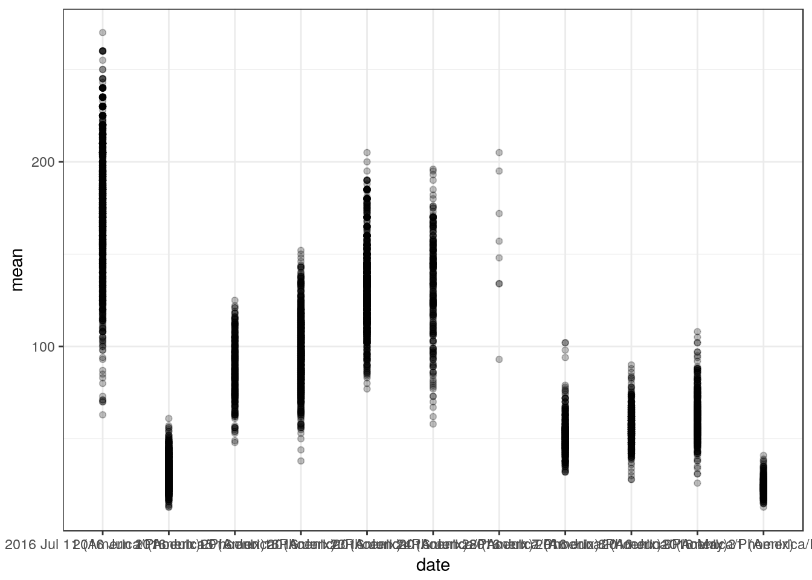
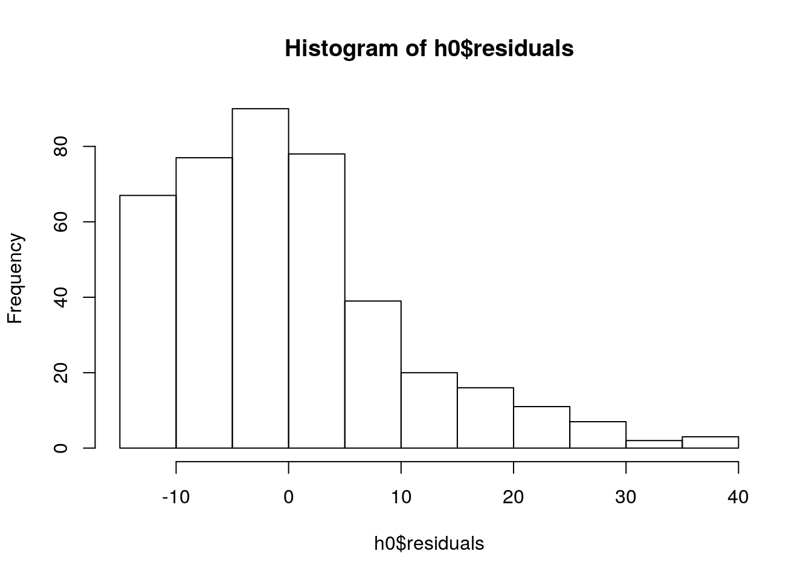
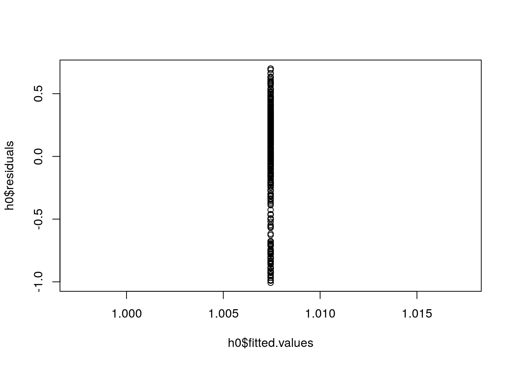

Summary statistics
Objectives: * learn to summarize data with basic measures of central tendancy and spread * learn to fit parametric distributions to data
Data analysis: Sorghum height data
knitr::opts_chunk$set(cache = TRUE)
library(dplyr)##
## Attaching package: 'dplyr'## The following objects are masked from 'package:stats':
##
## filter, lag## The following objects are masked from 'package:base':
##
## intersect, setdiff, setequal, unionlibrary(ggplot2)
theme_set(theme_bw())
#bety_src <- RPostgreSQL::dbConnect(odbc::odbc(), "TERRA-REF traits copy BETYdb")
#bety_src <- src_postgres(dbname = "bety", password = 'bety', host = 'bety.terraref', user = 'bety', port = 5432)
bety_src <- src_postgres(dbname = "bety",
password = 'DelchevskoOro',
host = 'bety6.ncsa.illinois.edu',
user = 'viewer',
port = 5432)
#bety_src <- RPostgreSQL::dbConnect(odbc::odbc(), "TERRA-REF traits viewer")treatments <- tbl(bety_src, 'treatments') %>%
dplyr::select(treatment_id = id , name, definition, control)
managements_treatments <- tbl(bety_src, 'managements_treatments')
managements <- tbl(bety_src, 'managements') %>%
filter(mgmttype %in% c('Fertilization_N', 'Planting', 'Irrigation')) %>%
dplyr::select(management_id = id, date, mgmttype, level, units) %>%
left_join(managements_treatments, by = 'management_id') %>%
left_join(treatments, by = 'treatment_id')
planting <-managements %>%
filter(mgmttype == "Planting") %>%
dplyr::select(treatment_id, planting_date = date, nrate = level)
canopy_height <- tbl(bety_src, 'traits_and_yields_view') %>%
filter(trait == 'canopy_height') %>%
left_join(planting, by = 'treatment_id') %>%
collectggplot(data = canopy_height) +
geom_histogram(aes(x = mean), binwidth = 10) 
Basic Statistics
These are some key statistics that are useful for describing a random variable \(X\):
- Mean \(\bar{x}=\frac{1}{n}\sum_{i=1}^{n}{x_i}\)
- Median
- Variance \(\rm{Var}(X) = \frac{1}{n}\sum_{i=1}^{n}{(x_i-\mu)^2}\)
- Standard Deviation \(\rm{SD}(X) = \sqrt{\rm{Var}(X)}\)
- Coefficient of Variance \(\rm{CV}(X) = \frac{\rm{SD}(X)}{\bar{x}}\)
- Skewness: does the distribution skew left, or right?
- when is median > mean?
- Kurtosis: how fat are the tails of the distribution?
[https://en.wikipedia.org/wiki/Skewness#/media/File:Negative_and_positive_skew_diagrams_(English).svg] [Rodolfo Hermans](https://en.wikipedia.org/wiki/User:Rodolfo_Hermans)
.svg){kind=link}
x <- canopy_height$mean
mean(x)## [1] 115.5999var(x)## [1] 6506.25sd(x)## [1] 80.66133cv <- function(x){
cv <- sd(x)/mean(x)
return(cv)
}
cv(x)## [1] 0.6977627### need to install moments package to compute skewness and kurtosis
# install.packages('moments')
moments::skewness(x)## [1] 1.213474moments::kurtosis(x)## [1] 4.208914height_season1 <- canopy_height %>% filter(grepl('Season 1', sitename))
ggplot(data = height_season1, aes(date, mean)) +
geom_point(alpha = 0.25)
Fitting distributions to data
Probability distributions provide a convenient way of describing a random variable. In many cases, the parameters can be interpereted in a meaningful way (e.g. shape, rate, scale).
#install.packages('fitdistrplus')
library(fitdistrplus)## Loading required package: MASS##
## Attaching package: 'MASS'## The following object is masked from 'package:dplyr':
##
## select## Loading required package: survivaldescdist(x)## summary statistics
## ------
## min: 5 max: 496
## median: 87.7
## mean: 115.5999
## estimated sd: 80.66133
## estimated skewness: 1.213548
## estimated kurtosis: 4.209406plotdist(x)
w <- fitdist(x, 'weibull')
ln <- fitdist(x, 'lnorm')
g <- fitdist(x, 'gamma')
n <- fitdist(x, 'norm')
which.min(c(w$aic, ln$aic, g$aic, n$aic))## [1] 3plot(g)
plot(ln)
plot(n)
plot(w)hist(x, probability = TRUE, ylim = c(0, 0.012))
lines(sort(x), dgamma(sort(x), g$estimate['shape'], g$estimate['rate']))
lines(sort(x), dlnorm(sort(x), ln$estimate['meanlog'], ln$estimate['sdlog']), col = 2)
lines(sort(x), dnorm(sort(x), n$estimate['mean'], n$estimate['sd']), col = 3)
lines(sort(x), dnorm(sort(x), w$estimate['shape'], n$estimate['scale']), col = 3)
mean(x)## [1] 115.5999plot(x)
lm(x~1)##
## Call:
## lm(formula = x ~ 1)
##
## Coefficients:
## (Intercept)
## 115.6Regression
Objectives:
- learn to convert deterministic functions into statistical models
- fit parameters
- evaluate key assumptions
- learn to interpret model summaries / parameters / output
- use model comparison to test hypotheses
We are starting with hypotheses / preidctions that the yield of two perennial grasses, Miscanthus spp. and Switchgrass (Panicum spp.)) depend on age, fertilization rate, and genotype. We expect that the functional form of the response to nitrogen and age will either be monotonically increasing, asymptotic, or hump-shaped. This follows LeBauer et al 2017 using a subset of the data that is balanced data from Miscanthus and Switchgrass field trials within Il and across the US (Arundale et al 2012 and Arundale et al 2014)
library(traits)
options(
betydb_url = "https://betydb.org",
betydb_api_version = 'beta')
yields <- betydb_query(table = 'search',
trait = 'Ayield',
limit = "none")## grass_yields <- yields %>%
filter(genus %in% c('Miscanthus', 'Panicum')) %>%
dplyr::rename(yield_annual = mean)We are going to use a version of this dataset that already has climate data: MAP (Mean Annual Precipitation) and Mean Annual Temperature (MAT)
grass_yields <- read.csv('data/grass_yield.csv')
#lattice::splom(grass_yields)
#pairs(grass_yields, pch='.')
#grass_yields <- grass_yields %>% filter(genus %in% c("Miscanthus", "Panicum"))h0 <- lm(yield_annual ~ 1, data = grass_yields)
plot(h0$fitted.values, h0$residuals)
hist(h0$residuals)
plot(h0, which = c(1,2))

Data Transformation
grass_yields <- grass_yields %>% mutate(log_yield = log10(yield_annual + 1))Why add 1 to yield_annual? How does this affect interpretation?
h0 <- lm(log_yield ~ 1, data = as.data.frame(grass_yields))
plot(h0$fitted.values, h0$residuals)## Warning in plot.window(...): relative range of values = 22 * EPS, is small
## (axis 1)
hist(h0$residuals)extending the models
mod1 <- lm(yield_annual ~ genus, data = grass_yields)
summary(mod1)##
## Call:
## lm(formula = yield_annual ~ genus, data = grass_yields)
##
## Residuals:
## Min 1Q Median 3Q Max
## -17.195 -6.992 -0.287 5.045 32.605
##
## Coefficients:
## Estimate Std. Error t value Pr(>|t|)
## (Intercept) 17.3951 0.6949 25.034 < 2e-16 ***
## genusPanicum -7.9907 0.9751 -8.194 3.8e-15 ***
## ---
## Signif. codes: 0 '***' 0.001 '**' 0.01 '*' 0.05 '.' 0.1 ' ' 1
##
## Residual standard error: 9.578 on 384 degrees of freedom
## Multiple R-squared: 0.1488, Adjusted R-squared: 0.1466
## F-statistic: 67.15 on 1 and 384 DF, p-value: 3.795e-15methods(class = class(mod1))## [1] add1 addterm alias anova
## [5] attrassign boxcox case.names coerce
## [9] confint cooks.distance deviance dfbeta
## [13] dfbetas drop1 dropterm dummy.coef
## [17] effects extractAIC family formula
## [21] fortify hatvalues influence initialize
## [25] kappa labels logLik logtrans
## [29] model.frame model.matrix nobs plot
## [33] predict print proj qqnorm
## [37] qr residuals rstandard rstudent
## [41] show simulate slotsFromS3 summary
## [45] variable.names vcov
## see '?methods' for accessing help and source codeAssumptions
par(mar = c(4, 4, 2, 2), mfrow = c(1, 2)) #optional
plot(mod1, which = c(1, 2)) # "which" argument optional
- residuals vs fitted: are residuals distributed consistently along axis of predictor variables?
- qqplot: are errors distributed normally?
Extending the model
mod3 <- lm(yield_annual ~ genus + mat + map, data = grass_yields)
mod6 <- lm(yield_annual ~ genus + mat + map + age + fertilizer_n + planting_density, data = grass_yields)
summary(mod3)##
## Call:
## lm(formula = yield_annual ~ genus + mat + map, data = grass_yields)
##
## Residuals:
## Min 1Q Median 3Q Max
## -18.768 -6.919 -0.263 5.271 32.643
##
## Coefficients:
## Estimate Std. Error t value Pr(>|t|)
## (Intercept) 15.711446 2.763870 5.685 2.61e-08 ***
## genusPanicum -8.045141 0.975247 -8.249 2.60e-15 ***
## mat -0.336335 0.216855 -1.551 0.122
## map 0.005373 0.003737 1.438 0.151
## ---
## Signif. codes: 0 '***' 0.001 '**' 0.01 '*' 0.05 '.' 0.1 ' ' 1
##
## Residual standard error: 9.571 on 382 degrees of freedom
## Multiple R-squared: 0.1545, Adjusted R-squared: 0.1479
## F-statistic: 23.28 on 3 and 382 DF, p-value: 7.396e-14Comparing models
mod4 <- lm(yield_annual ~ genus + mat + map + age, data = grass_yields)
AIC(mod1, mod4, mod6)## df AIC
## mod1 3 2843.735
## mod4 6 2741.110
## mod6 7 2720.044BIC(mod1, mod4)## df BIC
## mod1 3 2855.603
## mod4 6 2764.845Interactions
mod4 <- lm(yield_annual ~ genus * age + mat + map, data = grass_yields)how do you know which interactions to include?
anova(mod1, mod4)## Analysis of Variance Table
##
## Model 1: yield_annual ~ genus
## Model 2: yield_annual ~ genus * age + mat + map
## Res.Df RSS Df Sum of Sq F Pr(>F)
## 1 384 35228
## 2 380 24162 4 11067 43.513 < 2.2e-16 ***
## ---
## Signif. codes: 0 '***' 0.001 '**' 0.01 '*' 0.05 '.' 0.1 ' ' 1refining the model
library(MASS)
mod4 <- lm(yield_annual ~ genus * age + genus * mat + genus * map, data = grass_yields)ggplot(data = grass_yields) +
geom_histogram(aes(mean, y = ..density.., fill = genus), position = 'dodge', binwidth = 5)x <- grass_yields$yield_annual
mean(x)
var(x)
sd(x)
cv <- function(x){
sd(x)/mean(x)
}
cv(x)
library(ggplot2)
ggplot() +
geom_histogram(aes(x), bins = 25)
u <- runif(1000)
sum(u < 0.11)
z <- ifelse(u < 0.11, runif(1000), rgamma(1000, 6, 1))
yield <- grass_yields$yield_annual
x <- seq(0, 50, by = 0.1)
hist(yield, breaks = 25, probability = TRUE)
lines(x, dnorm(x, mean = mean(yield), sd = sd(yield)))
yield_subset <- yield[yield>1]
hist(yield_subset, breaks = 25, probability = TRUE)
lines(x, dnorm(x, mean = mean(yield), sd = sd(yield)))
w <- fitdist(yield_subset, distr = 'weibull')
ln <- fitdist(yield_subset, distr = 'lnorm')
g <- fitdist(yield_subset, distr = 'gamma')
n <- fitdist(yield_subset, distr = 'norm')
plot(g)
plot(n)
plot(ln)
names(g)
g$estimate
n$loglik
g$loglik
x <- yield_subset
hist(x, probability = TRUE, ylim = c(0, 0.10))
lines(sort(x), dgamma(sort(x), g$estimate['shape'], g$estimate['rate']))
lines(sort(x), dlnorm(sort(x), ln$estimate['meanlog'], ln$estimate['sdlog']), col = 2)
lines(sort(x), dnorm(sort(x), n$estimate['mean'], n$estimate['sd']), col = 3)
unique(grass_yields$genus)
grass_yields$genus <- ifelse(grass_yields$genus == 'Freedom-',
"Miscanthus",
grass_yields$genus)
grass_yields <- grass_yields %>% filter(!genus == 'root-mis')
theme_set(theme_bw())
ggplot(data = grass_yields) +
geom_histogram(aes(x = yield_annual), binwidth = 4) +
facet_wrap(~genus)
ggplot(data = grass_yields) +
geom_point(aes(x = year, y = yield_annual)) +
facet_wrap(~genus)
ggplot(data = grass_yields) +
geom_point(aes(x = age, y = yield_annual)) +
facet_wrap(~genus)
ggplot(data = grass_yields) +
geom_point(aes(x = year, y = map)) +
facet_wrap(~lat)
ggplot(data = grass_yields) +
geom_point(aes(x = year, y = mat)) +
facet_wrap(~lat)
ggplot(data = grass_yields) +
geom_point(aes(x = lon, y = lat, color = genus), alpha = 0.25, position = 'jitter')
lattice::splom(grass_yields)
lines(sort(x), dweibull(sort(x), w$estimate['shape'], w$estimate['scale']), col = 4)
h0 <- lm(yield_annual ~ 1, data = grass_yields)
hist(grass_yields$yield_annual)
abline(v = mean(grass_yields$yield_annual))
plot(h0, which = c(1))
plot(h0, which = c(2))
## log
## power (incl. sqrt)
## Box-Cox transform
## rank
library(dplyr)
grass_yields <- grass_yields %>%
mutate(sqrt_yield = sqrt(yield_annual))
h0 <- lm(sqrt_yield ~ 1, data = grass_yields)
plot(h0, which = c(1))
plot(h0, which = c(2))
h1 <- lm(sqrt_yield ~ 1 + genus, data = grass_yields)
plot(h1, which = c(1))
plot(h1, which = c(2))
summary(h1)
class(h1)
methods(class = 'lm')
plot(h1$fitted.values, h1$residuals)
tmp_grass <- cbind(grass_yields, residuals = h1$residuals)
h1.5 <- lm(residuals ~ fertilizer_n, data = tmp_grass)
summary(h1.5)
h2 <- lm(sqrt_yield ~ genus + fertilizer_n,
data = grass_yields)
summary(h2)
h3 <- lm(sqrt_yield ~ 1 + genus + fertilizer_n + genus : fertilizer_n, data = grass_yields)
# h3 <- lm(sqrt_yield ~ 1 + genus + fertilizer_n + genus : fertilizer_n, data = grass_yields)
# h3 <- lm(sqrt_yield ~ 1 + genus * fertilizer_n , data = grass_yields)
library(ggplot2)
ggplot(data = grass_yields) +
geom_point(aes(fertilizer_n, sqrt_yield, color = genus )) +
geom_abline(aes(slope = 0.0125, intercept = 3.2),color = 'pink') +
geom_abline(aes(slope = 0.0125 - 0.0066, intercept = 3.2 - 0.65),color = 'blue')
ggplot(data = grass_yields) +
geom_point(aes(fertilizer_n, sqrt_yield, color = genus )) +
geom_abline(aes(slope = 0.0125, intercept = 3.2),color = 'pink') +
geom_abline(aes(slope = 0.0125 - 0.0066, intercept = 3.2 - 0.65),color = 'blue')
summary(h3)
ggplot(data = grass_yields) +
geom_point(aes(age, sqrt_yield, color = genus ))
h5 <- lm(sqrt_yield ~ 1+ genus * mat,
data = grass_yields )
summary(h5)
h6 <- lm(sqrt_yield ~ 1+ genus * mat + genus * fertilizer_n + genus *age,
data = grass_yields )
h7 <- lm(sqrt_yield ~ 1+ genus + genus ,
data = grass_yields )
summary(h6)
plot(h6, which = c(1))
AIC(h0)
library(MASS)
stepAIC(h6, direction = 'both')
h8 <- lm(formula = sqrt_yield ~ genus + fertilizer_n + age + I(age^2) + genus:fertilizer_n +
genus:age, data = grass_yields)
plot(h8)
?stepAIC
lapply(list(h0, h1, h3, h5, h6, h8), AIC)Issues with stepAIC
https://stats.stackexchange.com/questions/20836/algorithms-for-automatic-model-selection
grass_yields <- read.csv('data/grass_yield.csv') %>%
filter(genus %in% c("Miscanthus", "Panicum")) %>%
mutate(sqrt_yield = sqrt(yield_annual), genus = as.character(genus))Model fitting
#install.packages('caret')
require(caret)## Loading required package: caret## Loading required package: lattice##
## Attaching package: 'caret'## The following object is masked from 'package:survival':
##
## clusterctrl <- trainControl(method = "repeatedcv", repeats = 10, savePred = TRUE)
train_lm_yield <- train(yield_annual ~ genus * fertilizer_n + genus * poly(age, 2) + genus * mat + genus * map,
data = grass_yields,
preProcess = 'BoxCox',
method = "lmStepAIC",
direction = 'both',
trControl = ctrl)## Start: AIC=1360.73
## .outcome ~ genusPanicum + fertilizer_n + `poly(age, 2)1` + `poly(age, 2)2` +
## mat + map + `genusPanicum:fertilizer_n` + `genusPanicum:poly(age, 2)1` +
## `genusPanicum:poly(age, 2)2` + `genusPanicum:mat` + `genusPanicum:map`
##
## Df Sum of Sq RSS AIC
## - genusPanicum 1 3.67 16347 1358.8
## <none> 16343 1360.7
## - `genusPanicum:mat` 1 131.42 16475 1361.5
## - mat 1 170.10 16513 1362.3
## - `genusPanicum:map` 1 177.55 16521 1362.5
## - `genusPanicum:poly(age, 2)2` 1 295.59 16639 1365.0
## - `genusPanicum:fertilizer_n` 1 299.06 16642 1365.0
## - map 1 561.69 16905 1370.5
## - `genusPanicum:poly(age, 2)1` 1 640.21 16984 1372.1
## - fertilizer_n 1 1027.13 17370 1379.9
## - `poly(age, 2)2` 1 2627.37 18971 1410.5
## - `poly(age, 2)1` 1 2788.17 19132 1413.4
##
## Step: AIC=1358.81
## .outcome ~ fertilizer_n + `poly(age, 2)1` + `poly(age, 2)2` +
## mat + map + `genusPanicum:fertilizer_n` + `genusPanicum:poly(age, 2)1` +
## `genusPanicum:poly(age, 2)2` + `genusPanicum:mat` + `genusPanicum:map`
##
## Df Sum of Sq RSS AIC
## <none> 16347 1358.8
## - `genusPanicum:mat` 1 141.18 16488 1359.8
## - mat 1 177.02 16524 1360.5
## + genusPanicum 1 3.67 16343 1360.7
## - `genusPanicum:poly(age, 2)2` 1 297.35 16644 1363.1
## - `genusPanicum:fertilizer_n` 1 326.33 16673 1363.7
## - `genusPanicum:map` 1 487.93 16835 1367.0
## - `genusPanicum:poly(age, 2)1` 1 636.95 16984 1370.1
## - map 1 837.02 17184 1374.1
## - fertilizer_n 1 1062.76 17410 1378.7
## - `poly(age, 2)2` 1 2633.91 18981 1408.7
## - `poly(age, 2)1` 1 2784.51 19132 1411.4
## Start: AIC=1361.27
## .outcome ~ genusPanicum + fertilizer_n + `poly(age, 2)1` + `poly(age, 2)2` +
## mat + map + `genusPanicum:fertilizer_n` + `genusPanicum:poly(age, 2)1` +
## `genusPanicum:poly(age, 2)2` + `genusPanicum:mat` + `genusPanicum:map`
##
## Df Sum of Sq RSS AIC
## - genusPanicum 1 0.41 16104 1359.3
## <none> 16104 1361.3
## - `genusPanicum:mat` 1 94.07 16198 1361.3
## - mat 1 104.09 16208 1361.5
## - `genusPanicum:map` 1 166.33 16270 1362.9
## - `genusPanicum:fertilizer_n` 1 243.68 16347 1364.5
## - `genusPanicum:poly(age, 2)2` 1 370.61 16474 1367.2
## - map 1 465.48 16569 1369.2
## - `genusPanicum:poly(age, 2)1` 1 812.17 16916 1376.4
## - fertilizer_n 1 1007.04 17111 1380.4
## - `poly(age, 2)2` 1 3110.74 19214 1420.9
## - `poly(age, 2)1` 1 3155.22 19259 1421.7
##
## Step: AIC=1359.28
## .outcome ~ fertilizer_n + `poly(age, 2)1` + `poly(age, 2)2` +
## mat + map + `genusPanicum:fertilizer_n` + `genusPanicum:poly(age, 2)1` +
## `genusPanicum:poly(age, 2)2` + `genusPanicum:mat` + `genusPanicum:map`
##
## Df Sum of Sq RSS AIC
## <none> 16104 1359.3
## - `genusPanicum:mat` 1 97.60 16202 1359.4
## - mat 1 106.08 16210 1359.6
## + genusPanicum 1 0.41 16104 1361.3
## - `genusPanicum:fertilizer_n` 1 256.84 16361 1362.8
## - `genusPanicum:poly(age, 2)2` 1 372.12 16476 1365.2
## - `genusPanicum:map` 1 408.94 16513 1366.0
## - map 1 655.74 16760 1371.2
## - `genusPanicum:poly(age, 2)1` 1 813.30 16917 1374.5
## - fertilizer_n 1 1027.98 17132 1378.9
## - `poly(age, 2)2` 1 3117.64 19222 1419.0
## - `poly(age, 2)1` 1 3155.65 19260 1419.7
## Start: AIC=1363.17
## .outcome ~ genusPanicum + fertilizer_n + `poly(age, 2)1` + `poly(age, 2)2` +
## mat + map + `genusPanicum:fertilizer_n` + `genusPanicum:poly(age, 2)1` +
## `genusPanicum:poly(age, 2)2` + `genusPanicum:mat` + `genusPanicum:map`
##
## Df Sum of Sq RSS AIC
## - genusPanicum 1 5.87 16464 1361.3
## - `genusPanicum:mat` 1 66.53 16525 1362.6
## <none> 16459 1363.2
## - `genusPanicum:map` 1 121.82 16580 1363.7
## - mat 1 122.46 16581 1363.7
## - `genusPanicum:fertilizer_n` 1 187.94 16647 1365.1
## - `genusPanicum:poly(age, 2)2` 1 349.25 16808 1368.5
## - map 1 533.11 16992 1372.2
## - `genusPanicum:poly(age, 2)1` 1 721.26 17180 1376.0
## - fertilizer_n 1 768.14 17227 1377.0
## - `poly(age, 2)1` 1 2851.81 19310 1416.6
## - `poly(age, 2)2` 1 3064.31 19523 1420.4
##
## Step: AIC=1361.29
## .outcome ~ fertilizer_n + `poly(age, 2)1` + `poly(age, 2)2` +
## mat + map + `genusPanicum:fertilizer_n` + `genusPanicum:poly(age, 2)1` +
## `genusPanicum:poly(age, 2)2` + `genusPanicum:mat` + `genusPanicum:map`
##
## Df Sum of Sq RSS AIC
## - `genusPanicum:mat` 1 73.60 16538 1360.8
## <none> 16464 1361.3
## - mat 1 128.51 16593 1362.0
## + genusPanicum 1 5.87 16459 1363.2
## - `genusPanicum:fertilizer_n` 1 215.17 16680 1363.8
## - `genusPanicum:poly(age, 2)2` 1 351.30 16816 1366.6
## - `genusPanicum:map` 1 362.65 16827 1366.8
## - `genusPanicum:poly(age, 2)1` 1 715.44 17180 1374.0
## - map 1 802.87 17267 1375.8
## - fertilizer_n 1 811.43 17276 1376.0
## - `poly(age, 2)1` 1 2846.41 19311 1414.6
## - `poly(age, 2)2` 1 3076.45 19541 1418.7
##
## Step: AIC=1360.84
## .outcome ~ fertilizer_n + `poly(age, 2)1` + `poly(age, 2)2` +
## mat + map + `genusPanicum:fertilizer_n` + `genusPanicum:poly(age, 2)1` +
## `genusPanicum:poly(age, 2)2` + `genusPanicum:map`
##
## Df Sum of Sq RSS AIC
## - mat 1 56.01 16594 1360.0
## <none> 16538 1360.8
## + `genusPanicum:mat` 1 73.60 16464 1361.3
## + genusPanicum 1 12.95 16525 1362.6
## - `genusPanicum:fertilizer_n` 1 227.93 16766 1363.6
## - `genusPanicum:poly(age, 2)2` 1 339.31 16877 1365.9
## - `genusPanicum:poly(age, 2)1` 1 739.34 17277 1374.0
## - map 1 789.64 17328 1375.0
## - fertilizer_n 1 824.52 17363 1375.7
## - `genusPanicum:map` 1 2078.71 18617 1399.9
## - `poly(age, 2)1` 1 2873.68 19412 1414.4
## - `poly(age, 2)2` 1 3055.70 19594 1417.7
##
## Step: AIC=1360.01
## .outcome ~ fertilizer_n + `poly(age, 2)1` + `poly(age, 2)2` +
## map + `genusPanicum:fertilizer_n` + `genusPanicum:poly(age, 2)1` +
## `genusPanicum:poly(age, 2)2` + `genusPanicum:map`
##
## Df Sum of Sq RSS AIC
## <none> 16594 1360.0
## + mat 1 56.01 16538 1360.8
## + genusPanicum 1 12.56 16582 1361.8
## + `genusPanicum:mat` 1 1.10 16593 1362.0
## - `genusPanicum:fertilizer_n` 1 227.39 16822 1362.7
## - `genusPanicum:poly(age, 2)2` 1 340.11 16934 1365.0
## - `genusPanicum:poly(age, 2)1` 1 747.52 17342 1373.3
## - fertilizer_n 1 825.36 17420 1374.9
## - map 1 1156.43 17750 1381.4
## - `genusPanicum:map` 1 2057.97 18652 1398.6
## - `poly(age, 2)1` 1 2907.87 19502 1414.0
## - `poly(age, 2)2` 1 3034.47 19629 1416.3
## Start: AIC=1324.18
## .outcome ~ genusPanicum + fertilizer_n + `poly(age, 2)1` + `poly(age, 2)2` +
## mat + map + `genusPanicum:fertilizer_n` + `genusPanicum:poly(age, 2)1` +
## `genusPanicum:poly(age, 2)2` + `genusPanicum:mat` + `genusPanicum:map`
##
## Df Sum of Sq RSS AIC
## - genusPanicum 1 15.2 14609 1322.5
## <none> 14594 1324.2
## - `genusPanicum:mat` 1 104.1 14698 1324.7
## - `genusPanicum:fertilizer_n` 1 106.8 14701 1324.7
## - `genusPanicum:map` 1 134.0 14728 1325.4
## - mat 1 143.1 14737 1325.6
## - `genusPanicum:poly(age, 2)2` 1 293.4 14887 1329.1
## - map 1 485.5 15079 1333.6
## - fertilizer_n 1 507.6 15101 1334.1
## - `genusPanicum:poly(age, 2)1` 1 913.4 15507 1343.3
## - `poly(age, 2)2` 1 2653.4 17247 1380.3
## - `poly(age, 2)1` 1 3510.1 18104 1397.2
##
## Step: AIC=1322.54
## .outcome ~ fertilizer_n + `poly(age, 2)1` + `poly(age, 2)2` +
## mat + map + `genusPanicum:fertilizer_n` + `genusPanicum:poly(age, 2)1` +
## `genusPanicum:poly(age, 2)2` + `genusPanicum:mat` + `genusPanicum:map`
##
## Df Sum of Sq RSS AIC
## <none> 14609 1322.5
## - `genusPanicum:mat` 1 115.9 14725 1323.3
## - `genusPanicum:fertilizer_n` 1 127.4 14736 1323.6
## - mat 1 152.4 14761 1324.2
## + genusPanicum 1 15.2 14594 1324.2
## - `genusPanicum:poly(age, 2)2` 1 301.8 14911 1327.7
## - `genusPanicum:map` 1 470.1 15079 1331.6
## - fertilizer_n 1 543.8 15153 1333.3
## - map 1 789.8 15399 1338.9
## - `genusPanicum:poly(age, 2)1` 1 906.3 15515 1341.5
## - `poly(age, 2)2` 1 2686.5 17296 1379.3
## - `poly(age, 2)1` 1 3500.4 18110 1395.3
## Start: AIC=1343.65
## .outcome ~ genusPanicum + fertilizer_n + `poly(age, 2)1` + `poly(age, 2)2` +
## mat + map + `genusPanicum:fertilizer_n` + `genusPanicum:poly(age, 2)1` +
## `genusPanicum:poly(age, 2)2` + `genusPanicum:mat` + `genusPanicum:map`
##
## Df Sum of Sq RSS AIC
## - genusPanicum 1 6.0 15691 1341.8
## - `genusPanicum:mat` 1 90.1 15775 1343.6
## <none> 15685 1343.7
## - mat 1 114.7 15800 1344.2
## - `genusPanicum:map` 1 135.9 15821 1344.6
## - `genusPanicum:fertilizer_n` 1 176.7 15862 1345.5
## - map 1 476.0 16161 1352.0
## - `genusPanicum:poly(age, 2)2` 1 554.7 16240 1353.7
## - `genusPanicum:poly(age, 2)1` 1 726.3 16411 1357.3
## - fertilizer_n 1 848.1 16533 1359.9
## - `poly(age, 2)1` 1 3201.5 18887 1405.9
## - `poly(age, 2)2` 1 3682.7 19368 1414.6
##
## Step: AIC=1341.79
## .outcome ~ fertilizer_n + `poly(age, 2)1` + `poly(age, 2)2` +
## mat + map + `genusPanicum:fertilizer_n` + `genusPanicum:poly(age, 2)1` +
## `genusPanicum:poly(age, 2)2` + `genusPanicum:mat` + `genusPanicum:map`
##
## Df Sum of Sq RSS AIC
## <none> 15691 1341.8
## - `genusPanicum:mat` 1 103.1 15794 1342.0
## - mat 1 121.5 15813 1342.5
## + genusPanicum 1 6.0 15685 1343.7
## - `genusPanicum:fertilizer_n` 1 195.9 15887 1344.1
## - `genusPanicum:map` 1 413.5 16105 1348.8
## - `genusPanicum:poly(age, 2)2` 1 558.1 16249 1351.9
## - `genusPanicum:poly(age, 2)1` 1 723.4 16414 1355.4
## - map 1 725.4 16416 1355.4
## - fertilizer_n 1 879.7 16571 1358.7
## - `poly(age, 2)1` 1 3196.8 18888 1403.9
## - `poly(age, 2)2` 1 3700.4 19392 1413.0
## Start: AIC=1362.5
## .outcome ~ genusPanicum + fertilizer_n + `poly(age, 2)1` + `poly(age, 2)2` +
## mat + map + `genusPanicum:fertilizer_n` + `genusPanicum:poly(age, 2)1` +
## `genusPanicum:poly(age, 2)2` + `genusPanicum:mat` + `genusPanicum:map`
##
## Df Sum of Sq RSS AIC
## - genusPanicum 1 42.6 16335 1361.4
## - `genusPanicum:fertilizer_n` 1 88.3 16381 1362.4
## <none> 16292 1362.5
## - `genusPanicum:map` 1 136.2 16429 1363.4
## - mat 1 169.4 16462 1364.1
## - `genusPanicum:mat` 1 172.0 16464 1364.2
## - fertilizer_n 1 405.8 16698 1369.1
## - map 1 429.9 16722 1369.6
## - `genusPanicum:poly(age, 2)2` 1 472.7 16765 1370.5
## - `genusPanicum:poly(age, 2)1` 1 963.6 17256 1380.5
## - `poly(age, 2)2` 1 3232.2 19525 1423.5
## - `poly(age, 2)1` 1 3648.3 19941 1430.8
##
## Step: AIC=1361.4
## .outcome ~ fertilizer_n + `poly(age, 2)1` + `poly(age, 2)2` +
## mat + map + `genusPanicum:fertilizer_n` + `genusPanicum:poly(age, 2)1` +
## `genusPanicum:poly(age, 2)2` + `genusPanicum:mat` + `genusPanicum:map`
##
## Df Sum of Sq RSS AIC
## <none> 16335 1361.4
## - `genusPanicum:fertilizer_n` 1 121.3 16456 1362.0
## + genusPanicum 1 42.6 16292 1362.5
## - mat 1 183.7 16519 1363.3
## - `genusPanicum:mat` 1 197.2 16532 1363.6
## - fertilizer_n 1 456.1 16791 1369.0
## - `genusPanicum:poly(age, 2)2` 1 477.8 16813 1369.4
## - `genusPanicum:map` 1 620.5 16956 1372.4
## - map 1 815.6 17151 1376.4
## - `genusPanicum:poly(age, 2)1` 1 949.3 17284 1379.1
## - `poly(age, 2)2` 1 3242.6 19578 1422.4
## - `poly(age, 2)1` 1 3635.9 19971 1429.3
## Start: AIC=1351.63
## .outcome ~ genusPanicum + fertilizer_n + `poly(age, 2)1` + `poly(age, 2)2` +
## mat + map + `genusPanicum:fertilizer_n` + `genusPanicum:poly(age, 2)1` +
## `genusPanicum:poly(age, 2)2` + `genusPanicum:mat` + `genusPanicum:map`
##
## Df Sum of Sq RSS AIC
## - genusPanicum 1 9.88 15930 1349.8
## <none> 15920 1351.6
## - `genusPanicum:mat` 1 112.15 16033 1352.1
## - mat 1 122.87 16043 1352.3
## - `genusPanicum:map` 1 144.97 16065 1352.8
## - `genusPanicum:fertilizer_n` 1 155.00 16075 1353.0
## - `genusPanicum:poly(age, 2)2` 1 343.21 16264 1357.0
## - map 1 499.16 16420 1360.3
## - `genusPanicum:poly(age, 2)1` 1 670.66 16591 1364.0
## - fertilizer_n 1 681.96 16602 1364.2
## - `poly(age, 2)2` 1 3080.38 19001 1411.0
## - `poly(age, 2)1` 1 3109.17 19030 1411.5
##
## Step: AIC=1349.85
## .outcome ~ fertilizer_n + `poly(age, 2)1` + `poly(age, 2)2` +
## mat + map + `genusPanicum:fertilizer_n` + `genusPanicum:poly(age, 2)1` +
## `genusPanicum:poly(age, 2)2` + `genusPanicum:mat` + `genusPanicum:map`
##
## Df Sum of Sq RSS AIC
## <none> 15930 1349.8
## - `genusPanicum:mat` 1 125.36 16056 1350.6
## - mat 1 131.57 16062 1350.7
## + genusPanicum 1 9.88 15920 1351.6
## - `genusPanicum:fertilizer_n` 1 178.93 16109 1351.7
## - `genusPanicum:poly(age, 2)2` 1 347.73 16278 1355.3
## - `genusPanicum:map` 1 451.07 16381 1357.5
## - `genusPanicum:poly(age, 2)1` 1 663.87 16594 1362.0
## - fertilizer_n 1 717.86 16648 1363.1
## - map 1 774.89 16705 1364.3
## - `poly(age, 2)2` 1 3099.39 19030 1409.5
## - `poly(age, 2)1` 1 3102.01 19032 1409.6
## Start: AIC=1346.08
## .outcome ~ genusPanicum + fertilizer_n + `poly(age, 2)1` + `poly(age, 2)2` +
## mat + map + `genusPanicum:fertilizer_n` + `genusPanicum:poly(age, 2)1` +
## `genusPanicum:poly(age, 2)2` + `genusPanicum:mat` + `genusPanicum:map`
##
## Df Sum of Sq RSS AIC
## - genusPanicum 1 4.30 15672 1344.2
## <none> 15668 1346.1
## - `genusPanicum:mat` 1 201.51 15869 1348.5
## - `genusPanicum:fertilizer_n` 1 226.89 15895 1349.1
## - mat 1 231.63 15899 1349.2
## - `genusPanicum:map` 1 236.61 15904 1349.3
## - `genusPanicum:poly(age, 2)2` 1 376.14 16044 1352.3
## - map 1 624.74 16292 1357.7
## - `genusPanicum:poly(age, 2)1` 1 649.72 16317 1358.2
## - fertilizer_n 1 816.97 16485 1361.7
## - `poly(age, 2)1` 1 2946.17 18614 1403.9
## - `poly(age, 2)2` 1 3139.88 18808 1407.5
##
## Step: AIC=1344.18
## .outcome ~ fertilizer_n + `poly(age, 2)1` + `poly(age, 2)2` +
## mat + map + `genusPanicum:fertilizer_n` + `genusPanicum:poly(age, 2)1` +
## `genusPanicum:poly(age, 2)2` + `genusPanicum:mat` + `genusPanicum:map`
##
## Df Sum of Sq RSS AIC
## <none> 15672 1344.2
## + genusPanicum 1 4.30 15668 1346.1
## - `genusPanicum:mat` 1 211.79 15884 1346.8
## - mat 1 237.75 15910 1347.4
## - `genusPanicum:fertilizer_n` 1 250.53 15922 1347.7
## - `genusPanicum:poly(age, 2)2` 1 380.17 16052 1350.5
## - `genusPanicum:map` 1 624.86 16297 1355.7
## - `genusPanicum:poly(age, 2)1` 1 645.70 16318 1356.2
## - fertilizer_n 1 849.80 16522 1360.5
## - map 1 918.47 16590 1361.9
## - `poly(age, 2)1` 1 2942.40 18614 1401.9
## - `poly(age, 2)2` 1 3145.55 18818 1405.7
## Start: AIC=1346.51
## .outcome ~ genusPanicum + fertilizer_n + `poly(age, 2)1` + `poly(age, 2)2` +
## mat + map + `genusPanicum:fertilizer_n` + `genusPanicum:poly(age, 2)1` +
## `genusPanicum:poly(age, 2)2` + `genusPanicum:mat` + `genusPanicum:map`
##
## Df Sum of Sq RSS AIC
## - genusPanicum 1 15.76 15831 1344.9
## <none> 15815 1346.5
## - `genusPanicum:fertilizer_n` 1 140.81 15956 1347.6
## - `genusPanicum:mat` 1 142.63 15958 1347.6
## - `genusPanicum:map` 1 156.82 15972 1347.9
## - mat 1 221.51 16037 1349.3
## - `genusPanicum:poly(age, 2)2` 1 320.52 16136 1351.5
## - map 1 547.32 16363 1356.3
## - fertilizer_n 1 775.07 16590 1361.1
## - `genusPanicum:poly(age, 2)1` 1 824.38 16640 1362.1
## - `poly(age, 2)2` 1 2971.60 18787 1404.1
## - `poly(age, 2)1` 1 2990.67 18806 1404.4
##
## Step: AIC=1344.86
## .outcome ~ fertilizer_n + `poly(age, 2)1` + `poly(age, 2)2` +
## mat + map + `genusPanicum:fertilizer_n` + `genusPanicum:poly(age, 2)1` +
## `genusPanicum:poly(age, 2)2` + `genusPanicum:mat` + `genusPanicum:map`
##
## Df Sum of Sq RSS AIC
## <none> 15831 1344.9
## - `genusPanicum:mat` 1 155.86 15987 1346.2
## - `genusPanicum:fertilizer_n` 1 165.26 15996 1346.5
## + genusPanicum 1 15.76 15815 1346.5
## - mat 1 232.69 16064 1347.9
## - `genusPanicum:poly(age, 2)2` 1 328.55 16160 1350.0
## - `genusPanicum:map` 1 541.37 16372 1354.5
## - fertilizer_n 1 814.05 16645 1360.2
## - `genusPanicum:poly(age, 2)1` 1 817.14 16648 1360.3
## - map 1 916.02 16747 1362.3
## - `poly(age, 2)1` 1 2982.62 18814 1402.6
## - `poly(age, 2)2` 1 2996.88 18828 1402.8
## Start: AIC=1365.97
## .outcome ~ genusPanicum + fertilizer_n + `poly(age, 2)1` + `poly(age, 2)2` +
## mat + map + `genusPanicum:fertilizer_n` + `genusPanicum:poly(age, 2)1` +
## `genusPanicum:poly(age, 2)2` + `genusPanicum:mat` + `genusPanicum:map`
##
## Df Sum of Sq RSS AIC
## - genusPanicum 1 4.6 16326 1364.1
## - `genusPanicum:mat` 1 69.4 16391 1365.5
## - mat 1 75.1 16397 1365.6
## <none> 16322 1366.0
## - `genusPanicum:map` 1 122.1 16444 1366.6
## - `genusPanicum:fertilizer_n` 1 155.7 16477 1367.3
## - map 1 344.0 16666 1371.2
## - `genusPanicum:poly(age, 2)2` 1 384.7 16706 1372.1
## - fertilizer_n 1 712.7 17034 1378.9
## - `genusPanicum:poly(age, 2)1` 1 914.1 17236 1383.0
## - `poly(age, 2)1` 1 3081.8 19403 1424.3
## - `poly(age, 2)2` 1 3169.3 19491 1425.9
##
## Step: AIC=1364.06
## .outcome ~ fertilizer_n + `poly(age, 2)1` + `poly(age, 2)2` +
## mat + map + `genusPanicum:fertilizer_n` + `genusPanicum:poly(age, 2)1` +
## `genusPanicum:poly(age, 2)2` + `genusPanicum:mat` + `genusPanicum:map`
##
## Df Sum of Sq RSS AIC
## - `genusPanicum:mat` 1 76.6 16403 1363.7
## - mat 1 79.8 16406 1363.8
## <none> 16326 1364.1
## - `genusPanicum:fertilizer_n` 1 173.1 16499 1365.8
## + genusPanicum 1 4.6 16322 1366.0
## - `genusPanicum:map` 1 375.5 16702 1370.0
## - `genusPanicum:poly(age, 2)2` 1 385.8 16712 1370.2
## - map 1 547.3 16874 1373.6
## - fertilizer_n 1 740.7 17067 1377.5
## - `genusPanicum:poly(age, 2)1` 1 912.2 17238 1381.0
## - `poly(age, 2)1` 1 3081.9 19408 1422.4
## - `poly(age, 2)2` 1 3173.9 19500 1424.1
##
## Step: AIC=1363.7
## .outcome ~ fertilizer_n + `poly(age, 2)1` + `poly(age, 2)2` +
## mat + map + `genusPanicum:fertilizer_n` + `genusPanicum:poly(age, 2)1` +
## `genusPanicum:poly(age, 2)2` + `genusPanicum:map`
##
## Df Sum of Sq RSS AIC
## - mat 1 15.04 16418 1362.0
## <none> 16403 1363.7
## + `genusPanicum:mat` 1 76.64 16326 1364.1
## + genusPanicum 1 11.79 16391 1365.5
## - `genusPanicum:fertilizer_n` 1 183.15 16586 1365.6
## - `genusPanicum:poly(age, 2)2` 1 373.61 16776 1369.6
## - map 1 491.93 16895 1372.0
## - fertilizer_n 1 749.94 17153 1377.3
## - `genusPanicum:poly(age, 2)1` 1 943.43 17346 1381.2
## - `genusPanicum:map` 1 2163.11 18566 1404.9
## - `poly(age, 2)1` 1 3124.78 19528 1422.6
## - `poly(age, 2)2` 1 3158.00 19561 1423.2
##
## Step: AIC=1362.02
## .outcome ~ fertilizer_n + `poly(age, 2)1` + `poly(age, 2)2` +
## map + `genusPanicum:fertilizer_n` + `genusPanicum:poly(age, 2)1` +
## `genusPanicum:poly(age, 2)2` + `genusPanicum:map`
##
## Df Sum of Sq RSS AIC
## <none> 16418 1362.0
## + mat 1 15.04 16403 1363.7
## + `genusPanicum:mat` 1 11.91 16406 1363.8
## + genusPanicum 1 11.62 16406 1363.8
## - `genusPanicum:fertilizer_n` 1 182.29 16600 1363.9
## - `genusPanicum:poly(age, 2)2` 1 377.03 16795 1367.9
## - fertilizer_n 1 749.55 17168 1375.6
## - map 1 810.95 17229 1376.8
## - `genusPanicum:poly(age, 2)1` 1 952.82 17371 1379.7
## - `genusPanicum:map` 1 2163.05 18581 1403.2
## - `poly(age, 2)1` 1 3146.87 19565 1421.2
## - `poly(age, 2)2` 1 3151.01 19569 1421.3
## Start: AIC=1346.39
## .outcome ~ genusPanicum + fertilizer_n + `poly(age, 2)1` + `poly(age, 2)2` +
## mat + map + `genusPanicum:fertilizer_n` + `genusPanicum:poly(age, 2)1` +
## `genusPanicum:poly(age, 2)2` + `genusPanicum:mat` + `genusPanicum:map`
##
## Df Sum of Sq RSS AIC
## - genusPanicum 1 42.3 15598 1345.3
## <none> 15556 1346.4
## - `genusPanicum:map` 1 97.0 15652 1346.5
## - `genusPanicum:fertilizer_n` 1 99.5 15655 1346.6
## - `genusPanicum:mat` 1 111.5 15667 1346.9
## - mat 1 200.5 15756 1348.8
## - `genusPanicum:poly(age, 2)2` 1 386.8 15942 1352.9
## - fertilizer_n 1 449.1 16004 1354.3
## - map 1 469.3 16025 1354.7
## - `genusPanicum:poly(age, 2)1` 1 904.4 16460 1364.0
## - `poly(age, 2)2` 1 3289.9 18845 1411.2
## - `poly(age, 2)1` 1 3558.0 19113 1416.1
##
## Step: AIC=1345.33
## .outcome ~ fertilizer_n + `poly(age, 2)1` + `poly(age, 2)2` +
## mat + map + `genusPanicum:fertilizer_n` + `genusPanicum:poly(age, 2)1` +
## `genusPanicum:poly(age, 2)2` + `genusPanicum:mat` + `genusPanicum:map`
##
## Df Sum of Sq RSS AIC
## <none> 15598 1345.3
## - `genusPanicum:fertilizer_n` 1 134.5 15732 1346.3
## + genusPanicum 1 42.3 15556 1346.4
## - `genusPanicum:mat` 1 139.5 15737 1346.4
## - mat 1 220.9 15819 1348.2
## - `genusPanicum:poly(age, 2)2` 1 391.0 15989 1352.0
## - fertilizer_n 1 501.5 16099 1354.3
## - `genusPanicum:map` 1 502.2 16100 1354.4
## - map 1 843.8 16442 1361.7
## - `genusPanicum:poly(age, 2)1` 1 883.1 16481 1362.5
## - `poly(age, 2)2` 1 3304.8 18903 1410.2
## - `poly(age, 2)1` 1 3529.2 19127 1414.3
## Start: AIC=1354.22
## .outcome ~ genusPanicum + fertilizer_n + `poly(age, 2)1` + `poly(age, 2)2` +
## mat + map + `genusPanicum:fertilizer_n` + `genusPanicum:poly(age, 2)1` +
## `genusPanicum:poly(age, 2)2` + `genusPanicum:mat` + `genusPanicum:map`
##
## Df Sum of Sq RSS AIC
## - genusPanicum 1 11.8 16183 1352.5
## <none> 16171 1354.2
## - `genusPanicum:mat` 1 101.2 16272 1354.4
## - `genusPanicum:map` 1 141.6 16313 1355.2
## - `genusPanicum:fertilizer_n` 1 143.2 16314 1355.3
## - mat 1 147.4 16319 1355.4
## - `genusPanicum:poly(age, 2)2` 1 421.5 16593 1361.1
## - map 1 527.9 16699 1363.3
## - fertilizer_n 1 731.9 16903 1367.5
## - `genusPanicum:poly(age, 2)1` 1 900.6 17072 1371.0
## - `poly(age, 2)2` 1 3166.6 19338 1414.1
## - `poly(age, 2)1` 1 3465.5 19637 1419.4
##
## Step: AIC=1352.47
## .outcome ~ fertilizer_n + `poly(age, 2)1` + `poly(age, 2)2` +
## mat + map + `genusPanicum:fertilizer_n` + `genusPanicum:poly(age, 2)1` +
## `genusPanicum:poly(age, 2)2` + `genusPanicum:mat` + `genusPanicum:map`
##
## Df Sum of Sq RSS AIC
## <none> 16183 1352.5
## - `genusPanicum:mat` 1 112.0 16295 1352.9
## - mat 1 155.6 16339 1353.8
## - `genusPanicum:fertilizer_n` 1 166.2 16349 1354.0
## + genusPanicum 1 11.8 16171 1354.2
## - `genusPanicum:poly(age, 2)2` 1 429.0 16612 1359.5
## - `genusPanicum:map` 1 445.4 16628 1359.9
## - fertilizer_n 1 770.1 16953 1366.5
## - map 1 830.8 17014 1367.8
## - `genusPanicum:poly(age, 2)1` 1 893.6 17077 1369.1
## - `poly(age, 2)2` 1 3176.6 19360 1412.5
## - `poly(age, 2)1` 1 3456.2 19639 1417.4
## Start: AIC=1359.96
## .outcome ~ genusPanicum + fertilizer_n + `poly(age, 2)1` + `poly(age, 2)2` +
## mat + map + `genusPanicum:fertilizer_n` + `genusPanicum:poly(age, 2)1` +
## `genusPanicum:poly(age, 2)2` + `genusPanicum:mat` + `genusPanicum:map`
##
## Df Sum of Sq RSS AIC
## - genusPanicum 1 4.94 16048 1358.1
## - `genusPanicum:mat` 1 52.44 16096 1359.1
## - mat 1 82.45 16126 1359.8
## <none> 16043 1360.0
## - `genusPanicum:map` 1 175.90 16219 1361.8
## - `genusPanicum:fertilizer_n` 1 245.18 16288 1363.2
## - `genusPanicum:poly(age, 2)2` 1 250.59 16294 1363.4
## - map 1 583.42 16627 1370.4
## - `genusPanicum:poly(age, 2)1` 1 757.29 16800 1374.1
## - fertilizer_n 1 850.36 16894 1376.0
## - `poly(age, 2)2` 1 2720.50 18764 1412.6
## - `poly(age, 2)1` 1 3008.43 19052 1417.9
##
## Step: AIC=1358.07
## .outcome ~ fertilizer_n + `poly(age, 2)1` + `poly(age, 2)2` +
## mat + map + `genusPanicum:fertilizer_n` + `genusPanicum:poly(age, 2)1` +
## `genusPanicum:poly(age, 2)2` + `genusPanicum:mat` + `genusPanicum:map`
##
## Df Sum of Sq RSS AIC
## - `genusPanicum:mat` 1 49.34 16098 1357.1
## - mat 1 80.22 16128 1357.8
## <none> 16048 1358.1
## + genusPanicum 1 4.94 16043 1360.0
## - `genusPanicum:fertilizer_n` 1 241.06 16289 1361.3
## - `genusPanicum:poly(age, 2)2` 1 248.39 16296 1361.4
## - `genusPanicum:map` 1 302.72 16351 1362.6
## - map 1 728.90 16777 1371.6
## - `genusPanicum:poly(age, 2)1` 1 764.66 16813 1372.3
## - fertilizer_n 1 848.80 16897 1374.1
## - `poly(age, 2)2` 1 2715.61 18764 1410.6
## - `poly(age, 2)1` 1 3015.09 19063 1416.2
##
## Step: AIC=1357.14
## .outcome ~ fertilizer_n + `poly(age, 2)1` + `poly(age, 2)2` +
## mat + map + `genusPanicum:fertilizer_n` + `genusPanicum:poly(age, 2)1` +
## `genusPanicum:poly(age, 2)2` + `genusPanicum:map`
##
## Df Sum of Sq RSS AIC
## - mat 1 32.09 16130 1355.8
## <none> 16098 1357.1
## + `genusPanicum:mat` 1 49.34 16048 1358.1
## + genusPanicum 1 1.84 16096 1359.1
## - `genusPanicum:poly(age, 2)2` 1 240.43 16338 1360.3
## - `genusPanicum:fertilizer_n` 1 251.53 16349 1360.5
## - map 1 753.01 16850 1371.1
## - `genusPanicum:poly(age, 2)1` 1 786.77 16884 1371.8
## - fertilizer_n 1 861.67 16959 1373.3
## - `genusPanicum:map` 1 2051.21 18149 1397.0
## - `poly(age, 2)2` 1 2697.34 18795 1409.2
## - `poly(age, 2)1` 1 3047.89 19145 1415.7
##
## Step: AIC=1355.83
## .outcome ~ fertilizer_n + `poly(age, 2)1` + `poly(age, 2)2` +
## map + `genusPanicum:fertilizer_n` + `genusPanicum:poly(age, 2)1` +
## `genusPanicum:poly(age, 2)2` + `genusPanicum:map`
##
## Df Sum of Sq RSS AIC
## <none> 16130 1355.8
## + mat 1 32.09 16098 1357.1
## + genusPanicum 1 2.31 16127 1357.8
## + `genusPanicum:mat` 1 1.21 16128 1357.8
## - `genusPanicum:poly(age, 2)2` 1 240.08 16370 1359.0
## - `genusPanicum:fertilizer_n` 1 251.19 16381 1359.2
## - `genusPanicum:poly(age, 2)1` 1 797.79 16927 1370.7
## - fertilizer_n 1 864.72 16994 1372.1
## - map 1 1188.70 17318 1378.7
## - `genusPanicum:map` 1 2034.31 18164 1395.3
## - `poly(age, 2)2` 1 2680.16 18810 1407.5
## - `poly(age, 2)1` 1 3079.27 19209 1414.8
## Start: AIC=1346
## .outcome ~ genusPanicum + fertilizer_n + `poly(age, 2)1` + `poly(age, 2)2` +
## mat + map + `genusPanicum:fertilizer_n` + `genusPanicum:poly(age, 2)1` +
## `genusPanicum:poly(age, 2)2` + `genusPanicum:mat` + `genusPanicum:map`
##
## Df Sum of Sq RSS AIC
## - genusPanicum 1 3.0 15667 1344.1
## <none> 15664 1346.0
## - `genusPanicum:mat` 1 213.1 15877 1348.7
## - mat 1 225.0 15889 1348.9
## - `genusPanicum:fertilizer_n` 1 225.2 15889 1349.0
## - `genusPanicum:map` 1 239.7 15904 1349.3
## - `genusPanicum:poly(age, 2)2` 1 328.1 15992 1351.2
## - map 1 615.7 16280 1357.4
## - `genusPanicum:poly(age, 2)1` 1 846.2 16510 1362.2
## - fertilizer_n 1 979.3 16643 1365.0
## - `poly(age, 2)2` 1 3149.6 18813 1407.6
## - `poly(age, 2)1` 1 3228.5 18892 1409.0
##
## Step: AIC=1344.06
## .outcome ~ fertilizer_n + `poly(age, 2)1` + `poly(age, 2)2` +
## mat + map + `genusPanicum:fertilizer_n` + `genusPanicum:poly(age, 2)1` +
## `genusPanicum:poly(age, 2)2` + `genusPanicum:mat` + `genusPanicum:map`
##
## Df Sum of Sq RSS AIC
## <none> 15667 1344.1
## + genusPanicum 1 3.0 15664 1346.0
## - `genusPanicum:mat` 1 227.3 15894 1347.1
## - mat 1 235.2 15902 1347.2
## - `genusPanicum:fertilizer_n` 1 245.3 15912 1347.5
## - `genusPanicum:poly(age, 2)2` 1 329.2 15996 1349.3
## - `genusPanicum:map` 1 658.6 16325 1356.3
## - `genusPanicum:poly(age, 2)1` 1 843.3 16510 1360.2
## - map 1 945.2 16612 1362.4
## - fertilizer_n 1 1010.4 16677 1363.8
## - `poly(age, 2)2` 1 3160.2 18827 1405.8
## - `poly(age, 2)1` 1 3226.5 18893 1407.0
## Start: AIC=1339.42
## .outcome ~ genusPanicum + fertilizer_n + `poly(age, 2)1` + `poly(age, 2)2` +
## mat + map + `genusPanicum:fertilizer_n` + `genusPanicum:poly(age, 2)1` +
## `genusPanicum:poly(age, 2)2` + `genusPanicum:mat` + `genusPanicum:map`
##
## Df Sum of Sq RSS AIC
## - genusPanicum 1 34.86 15404 1338.2
## <none> 15370 1339.4
## - `genusPanicum:map` 1 116.07 15486 1340.0
## - `genusPanicum:fertilizer_n` 1 131.21 15501 1340.4
## - `genusPanicum:mat` 1 135.47 15505 1340.5
## - mat 1 159.64 15529 1341.0
## - `genusPanicum:poly(age, 2)2` 1 247.40 15617 1343.0
## - map 1 444.45 15814 1347.3
## - fertilizer_n 1 540.85 15910 1349.4
## - `genusPanicum:poly(age, 2)1` 1 751.31 16121 1354.0
## - `poly(age, 2)2` 1 2524.00 17894 1390.2
## - `poly(age, 2)1` 1 2842.63 18212 1396.3
##
## Step: AIC=1338.2
## .outcome ~ fertilizer_n + `poly(age, 2)1` + `poly(age, 2)2` +
## mat + map + `genusPanicum:fertilizer_n` + `genusPanicum:poly(age, 2)1` +
## `genusPanicum:poly(age, 2)2` + `genusPanicum:mat` + `genusPanicum:map`
##
## Df Sum of Sq RSS AIC
## <none> 15404 1338.2
## + genusPanicum 1 34.86 15370 1339.4
## - `genusPanicum:mat` 1 154.00 15558 1339.7
## - `genusPanicum:fertilizer_n` 1 165.94 15570 1339.9
## - mat 1 172.72 15577 1340.1
## - `genusPanicum:poly(age, 2)2` 1 253.24 15658 1341.9
## - `genusPanicum:map` 1 518.94 15923 1347.7
## - fertilizer_n 1 589.92 15994 1349.2
## - `genusPanicum:poly(age, 2)1` 1 737.72 16142 1352.4
## - map 1 772.64 16177 1353.2
## - `poly(age, 2)2` 1 2544.54 17949 1389.2
## - `poly(age, 2)1` 1 2822.84 18227 1394.6
## Start: AIC=1344.35
## .outcome ~ genusPanicum + fertilizer_n + `poly(age, 2)1` + `poly(age, 2)2` +
## mat + map + `genusPanicum:fertilizer_n` + `genusPanicum:poly(age, 2)1` +
## `genusPanicum:poly(age, 2)2` + `genusPanicum:mat` + `genusPanicum:map`
##
## Df Sum of Sq RSS AIC
## - genusPanicum 1 2.1 15592 1342.4
## <none> 15590 1344.3
## - `genusPanicum:fertilizer_n` 1 167.3 15757 1346.0
## - `genusPanicum:mat` 1 239.1 15829 1347.6
## - `genusPanicum:map` 1 293.1 15883 1348.8
## - mat 1 338.2 15928 1349.8
## - `genusPanicum:poly(age, 2)2` 1 398.1 15988 1351.1
## - fertilizer_n 1 688.4 16278 1357.3
## - `genusPanicum:poly(age, 2)1` 1 725.8 16315 1358.1
## - map 1 776.2 16366 1359.2
## - `poly(age, 2)2` 1 3005.3 18595 1403.5
## - `poly(age, 2)1` 1 3368.6 18958 1410.2
##
## Step: AIC=1342.39
## .outcome ~ fertilizer_n + `poly(age, 2)1` + `poly(age, 2)2` +
## mat + map + `genusPanicum:fertilizer_n` + `genusPanicum:poly(age, 2)1` +
## `genusPanicum:poly(age, 2)2` + `genusPanicum:mat` + `genusPanicum:map`
##
## Df Sum of Sq RSS AIC
## <none> 15592 1342.4
## + genusPanicum 1 2.1 15590 1344.3
## - `genusPanicum:fertilizer_n` 1 182.1 15774 1344.4
## - `genusPanicum:mat` 1 249.3 15841 1345.9
## - mat 1 346.0 15938 1348.0
## - `genusPanicum:poly(age, 2)2` 1 400.2 15992 1349.2
## - fertilizer_n 1 709.1 16301 1355.8
## - `genusPanicum:map` 1 711.9 16304 1355.9
## - `genusPanicum:poly(age, 2)1` 1 723.9 16316 1356.1
## - map 1 1109.4 16701 1364.2
## - `poly(age, 2)2` 1 3017.9 18610 1401.8
## - `poly(age, 2)1` 1 3367.3 18959 1408.2
## Start: AIC=1343.86
## .outcome ~ genusPanicum + fertilizer_n + `poly(age, 2)1` + `poly(age, 2)2` +
## mat + map + `genusPanicum:fertilizer_n` + `genusPanicum:poly(age, 2)1` +
## `genusPanicum:poly(age, 2)2` + `genusPanicum:mat` + `genusPanicum:map`
##
## Df Sum of Sq RSS AIC
## - genusPanicum 1 4.2 15572 1342.0
## - `genusPanicum:mat` 1 74.3 15642 1343.5
## <none> 15568 1343.9
## - mat 1 105.7 15674 1344.2
## - `genusPanicum:map` 1 132.1 15700 1344.8
## - `genusPanicum:fertilizer_n` 1 166.7 15735 1345.6
## - map 1 492.8 16061 1352.7
## - `genusPanicum:poly(age, 2)2` 1 502.5 16070 1352.9
## - `genusPanicum:poly(age, 2)1` 1 741.0 16309 1358.0
## - fertilizer_n 1 870.8 16439 1360.8
## - `poly(age, 2)1` 1 2859.8 18428 1400.4
## - `poly(age, 2)2` 1 3436.8 19005 1411.1
##
## Step: AIC=1341.96
## .outcome ~ fertilizer_n + `poly(age, 2)1` + `poly(age, 2)2` +
## mat + map + `genusPanicum:fertilizer_n` + `genusPanicum:poly(age, 2)1` +
## `genusPanicum:poly(age, 2)2` + `genusPanicum:mat` + `genusPanicum:map`
##
## Df Sum of Sq RSS AIC
## - `genusPanicum:mat` 1 81.4 15653 1341.8
## <none> 15572 1342.0
## - mat 1 111.0 15683 1342.4
## + genusPanicum 1 4.2 15568 1343.9
## - `genusPanicum:fertilizer_n` 1 186.2 15758 1344.1
## - `genusPanicum:map` 1 372.3 15944 1348.2
## - `genusPanicum:poly(age, 2)2` 1 505.9 16078 1351.0
## - `genusPanicum:poly(age, 2)1` 1 737.0 16309 1356.0
## - map 1 743.7 16316 1356.1
## - fertilizer_n 1 904.2 16476 1359.5
## - `poly(age, 2)1` 1 2855.7 18428 1398.4
## - `poly(age, 2)2` 1 3448.9 19021 1409.4
##
## Step: AIC=1341.76
## .outcome ~ fertilizer_n + `poly(age, 2)1` + `poly(age, 2)2` +
## mat + map + `genusPanicum:fertilizer_n` + `genusPanicum:poly(age, 2)1` +
## `genusPanicum:poly(age, 2)2` + `genusPanicum:map`
##
## Df Sum of Sq RSS AIC
## - mat 1 35.6 15689 1340.5
## <none> 15653 1341.8
## + `genusPanicum:mat` 1 81.4 15572 1342.0
## + genusPanicum 1 11.3 15642 1343.5
## - `genusPanicum:fertilizer_n` 1 194.2 15848 1344.0
## - `genusPanicum:poly(age, 2)2` 1 495.7 16149 1350.6
## - map 1 701.0 16354 1355.0
## - `genusPanicum:poly(age, 2)1` 1 769.0 16422 1356.4
## - fertilizer_n 1 911.3 16565 1359.4
## - `genusPanicum:map` 1 2024.7 17678 1382.0
## - `poly(age, 2)1` 1 2897.2 18551 1398.7
## - `poly(age, 2)2` 1 3441.0 19094 1408.7
##
## Step: AIC=1340.55
## .outcome ~ fertilizer_n + `poly(age, 2)1` + `poly(age, 2)2` +
## map + `genusPanicum:fertilizer_n` + `genusPanicum:poly(age, 2)1` +
## `genusPanicum:poly(age, 2)2` + `genusPanicum:map`
##
## Df Sum of Sq RSS AIC
## <none> 15689 1340.5
## + mat 1 35.6 15653 1341.8
## + genusPanicum 1 11.1 15678 1342.3
## + `genusPanicum:mat` 1 6.0 15683 1342.4
## - `genusPanicum:fertilizer_n` 1 193.2 15882 1342.8
## - `genusPanicum:poly(age, 2)2` 1 500.4 16189 1349.5
## - `genusPanicum:poly(age, 2)1` 1 775.8 16465 1355.3
## - fertilizer_n 1 908.4 16597 1358.1
## - map 1 1093.7 16783 1361.9
## - `genusPanicum:map` 1 2027.8 17717 1380.7
## - `poly(age, 2)1` 1 2932.7 18622 1398.0
## - `poly(age, 2)2` 1 3432.5 19122 1407.2
## Start: AIC=1369.85
## .outcome ~ genusPanicum + fertilizer_n + `poly(age, 2)1` + `poly(age, 2)2` +
## mat + map + `genusPanicum:fertilizer_n` + `genusPanicum:poly(age, 2)1` +
## `genusPanicum:poly(age, 2)2` + `genusPanicum:mat` + `genusPanicum:map`
##
## Df Sum of Sq RSS AIC
## - genusPanicum 1 11.7 16652 1368.1
## - `genusPanicum:mat` 1 74.2 16714 1369.4
## - mat 1 74.6 16715 1369.4
## <none> 16640 1369.8
## - `genusPanicum:map` 1 107.6 16748 1370.1
## - `genusPanicum:fertilizer_n` 1 206.3 16846 1372.1
## - map 1 357.2 16997 1375.2
## - `genusPanicum:poly(age, 2)2` 1 473.5 17114 1377.6
## - `genusPanicum:poly(age, 2)1` 1 745.2 17385 1383.1
## - fertilizer_n 1 876.2 17516 1385.7
## - `poly(age, 2)1` 1 2911.1 19551 1424.0
## - `poly(age, 2)2` 1 3377.7 20018 1432.2
##
## Step: AIC=1368.09
## .outcome ~ fertilizer_n + `poly(age, 2)1` + `poly(age, 2)2` +
## mat + map + `genusPanicum:fertilizer_n` + `genusPanicum:poly(age, 2)1` +
## `genusPanicum:poly(age, 2)2` + `genusPanicum:mat` + `genusPanicum:map`
##
## Df Sum of Sq RSS AIC
## - mat 1 81.0 16733 1367.8
## - `genusPanicum:mat` 1 84.7 16736 1367.8
## <none> 16652 1368.1
## + genusPanicum 1 11.7 16640 1369.8
## - `genusPanicum:fertilizer_n` 1 234.9 16887 1371.0
## - `genusPanicum:map` 1 384.6 17036 1374.0
## - `genusPanicum:poly(age, 2)2` 1 482.1 17134 1376.0
## - map 1 604.5 17256 1378.5
## - `genusPanicum:poly(age, 2)1` 1 740.9 17393 1381.2
## - fertilizer_n 1 924.0 17576 1384.9
## - `poly(age, 2)1` 1 2908.0 19560 1422.1
## - `poly(age, 2)2` 1 3397.2 20049 1430.7
##
## Step: AIC=1367.78
## .outcome ~ fertilizer_n + `poly(age, 2)1` + `poly(age, 2)2` +
## map + `genusPanicum:fertilizer_n` + `genusPanicum:poly(age, 2)1` +
## `genusPanicum:poly(age, 2)2` + `genusPanicum:mat` + `genusPanicum:map`
##
## Df Sum of Sq RSS AIC
## - `genusPanicum:mat` 1 16.7 16750 1366.1
## <none> 16733 1367.8
## + mat 1 81.0 16652 1368.1
## + genusPanicum 1 18.1 16715 1369.4
## - `genusPanicum:fertilizer_n` 1 239.7 16973 1370.7
## - `genusPanicum:map` 1 338.7 17072 1372.8
## - `genusPanicum:poly(age, 2)2` 1 478.1 17211 1375.6
## - `genusPanicum:poly(age, 2)1` 1 781.5 17514 1381.7
## - map 1 913.4 17646 1384.3
## - fertilizer_n 1 925.6 17658 1384.5
## - `poly(age, 2)1` 1 2996.7 19730 1423.1
## - `poly(age, 2)2` 1 3374.7 20108 1429.7
##
## Step: AIC=1366.13
## .outcome ~ fertilizer_n + `poly(age, 2)1` + `poly(age, 2)2` +
## map + `genusPanicum:fertilizer_n` + `genusPanicum:poly(age, 2)1` +
## `genusPanicum:poly(age, 2)2` + `genusPanicum:map`
##
## Df Sum of Sq RSS AIC
## <none> 16750 1366.1
## + genusPanicum 1 21.9 16728 1367.7
## + `genusPanicum:mat` 1 16.7 16733 1367.8
## + mat 1 13.1 16736 1367.8
## - `genusPanicum:fertilizer_n` 1 242.4 16992 1369.1
## - `genusPanicum:poly(age, 2)2` 1 473.6 17223 1373.8
## - `genusPanicum:poly(age, 2)1` 1 784.4 17534 1380.0
## - fertilizer_n 1 929.7 17679 1382.9
## - map 1 946.5 17696 1383.3
## - `genusPanicum:map` 1 2060.9 18810 1404.5
## - `poly(age, 2)1` 1 2996.3 19746 1421.4
## - `poly(age, 2)2` 1 3376.3 20126 1428.0
## Start: AIC=1356.6
## .outcome ~ genusPanicum + fertilizer_n + `poly(age, 2)1` + `poly(age, 2)2` +
## mat + map + `genusPanicum:fertilizer_n` + `genusPanicum:poly(age, 2)1` +
## `genusPanicum:poly(age, 2)2` + `genusPanicum:mat` + `genusPanicum:map`
##
## Df Sum of Sq RSS AIC
## - genusPanicum 1 3.62 16287 1354.7
## <none> 16283 1356.6
## - mat 1 110.34 16393 1356.9
## - `genusPanicum:mat` 1 131.54 16414 1357.4
## - `genusPanicum:fertilizer_n` 1 166.25 16449 1358.1
## - `genusPanicum:map` 1 176.34 16459 1358.3
## - `genusPanicum:poly(age, 2)2` 1 306.46 16589 1361.0
## - map 1 462.46 16745 1364.3
## - `genusPanicum:poly(age, 2)1` 1 712.57 16996 1369.4
## - fertilizer_n 1 766.81 17050 1370.5
## - `poly(age, 2)2` 1 2815.53 19098 1409.8
## - `poly(age, 2)1` 1 3012.42 19295 1413.3
##
## Step: AIC=1354.67
## .outcome ~ fertilizer_n + `poly(age, 2)1` + `poly(age, 2)2` +
## mat + map + `genusPanicum:fertilizer_n` + `genusPanicum:poly(age, 2)1` +
## `genusPanicum:poly(age, 2)2` + `genusPanicum:mat` + `genusPanicum:map`
##
## Df Sum of Sq RSS AIC
## <none> 16287 1354.7
## - mat 1 115.02 16402 1355.1
## - `genusPanicum:mat` 1 141.14 16428 1355.7
## - `genusPanicum:fertilizer_n` 1 181.61 16468 1356.5
## + genusPanicum 1 3.62 16283 1356.6
## - `genusPanicum:poly(age, 2)2` 1 309.79 16596 1359.2
## - `genusPanicum:map` 1 487.18 16774 1362.9
## - map 1 702.25 16989 1367.3
## - `genusPanicum:poly(age, 2)1` 1 710.57 16997 1367.5
## - fertilizer_n 1 793.73 17080 1369.1
## - `poly(age, 2)2` 1 2830.39 19117 1408.1
## - `poly(age, 2)1` 1 3011.46 19298 1411.4
## Start: AIC=1363.62
## .outcome ~ genusPanicum + fertilizer_n + `poly(age, 2)1` + `poly(age, 2)2` +
## mat + map + `genusPanicum:fertilizer_n` + `genusPanicum:poly(age, 2)1` +
## `genusPanicum:poly(age, 2)2` + `genusPanicum:mat` + `genusPanicum:map`
##
## Df Sum of Sq RSS AIC
## - genusPanicum 1 20.0 16232 1362.0
## - `genusPanicum:mat` 1 85.8 16298 1363.5
## - mat 1 90.0 16302 1363.5
## <none> 16212 1363.6
## - `genusPanicum:map` 1 110.0 16322 1364.0
## - `genusPanicum:fertilizer_n` 1 186.5 16399 1365.6
## - map 1 337.8 16550 1368.8
## - `genusPanicum:poly(age, 2)2` 1 476.0 16688 1371.7
## - `genusPanicum:poly(age, 2)1` 1 731.1 16944 1377.0
## - fertilizer_n 1 737.3 16950 1377.1
## - `poly(age, 2)1` 1 3083.6 19296 1422.4
## - `poly(age, 2)2` 1 3297.1 19510 1426.2
##
## Step: AIC=1362.05
## .outcome ~ fertilizer_n + `poly(age, 2)1` + `poly(age, 2)2` +
## mat + map + `genusPanicum:fertilizer_n` + `genusPanicum:poly(age, 2)1` +
## `genusPanicum:poly(age, 2)2` + `genusPanicum:mat` + `genusPanicum:map`
##
## Df Sum of Sq RSS AIC
## <none> 16232 1362.0
## - mat 1 97.1 16330 1362.1
## - `genusPanicum:mat` 1 98.8 16331 1362.2
## + genusPanicum 1 20.0 16212 1363.6
## - `genusPanicum:fertilizer_n` 1 224.4 16457 1364.8
## - `genusPanicum:map` 1 420.8 16653 1369.0
## - `genusPanicum:poly(age, 2)2` 1 482.0 16714 1370.3
## - map 1 571.6 16804 1372.1
## - `genusPanicum:poly(age, 2)1` 1 722.4 16955 1375.2
## - fertilizer_n 1 789.1 17022 1376.6
## - `poly(age, 2)1` 1 3074.6 19307 1420.6
## - `poly(age, 2)2` 1 3307.0 19539 1424.8
## Start: AIC=1354.94
## .outcome ~ genusPanicum + fertilizer_n + `poly(age, 2)1` + `poly(age, 2)2` +
## mat + map + `genusPanicum:fertilizer_n` + `genusPanicum:poly(age, 2)1` +
## `genusPanicum:poly(age, 2)2` + `genusPanicum:mat` + `genusPanicum:map`
##
## Df Sum of Sq RSS AIC
## - genusPanicum 1 31.3 16236 1353.6
## <none> 16205 1354.9
## - `genusPanicum:map` 1 121.7 16327 1355.5
## - `genusPanicum:mat` 1 141.3 16346 1355.9
## - `genusPanicum:fertilizer_n` 1 151.5 16356 1356.2
## - mat 1 187.1 16392 1356.9
## - map 1 409.8 16615 1361.6
## - `genusPanicum:poly(age, 2)2` 1 484.4 16689 1363.1
## - `genusPanicum:poly(age, 2)1` 1 601.7 16807 1365.5
## - fertilizer_n 1 667.0 16872 1366.9
## - `poly(age, 2)1` 1 2413.5 18618 1401.0
## - `poly(age, 2)2` 1 3224.3 19429 1415.7
##
## Step: AIC=1353.6
## .outcome ~ fertilizer_n + `poly(age, 2)1` + `poly(age, 2)2` +
## mat + map + `genusPanicum:fertilizer_n` + `genusPanicum:poly(age, 2)1` +
## `genusPanicum:poly(age, 2)2` + `genusPanicum:mat` + `genusPanicum:map`
##
## Df Sum of Sq RSS AIC
## <none> 16236 1353.6
## + genusPanicum 1 31.3 16205 1354.9
## - `genusPanicum:mat` 1 166.5 16403 1355.1
## - `genusPanicum:fertilizer_n` 1 192.0 16428 1355.7
## - mat 1 203.2 16440 1355.9
## - `genusPanicum:poly(age, 2)2` 1 495.9 16732 1362.0
## - `genusPanicum:map` 1 526.2 16762 1362.6
## - `genusPanicum:poly(age, 2)1` 1 589.5 16826 1363.9
## - fertilizer_n 1 732.3 16968 1366.9
## - map 1 763.5 17000 1367.5
## - `poly(age, 2)1` 1 2393.0 18629 1399.2
## - `poly(age, 2)2` 1 3262.5 19499 1415.0
## Start: AIC=1346.75
## .outcome ~ genusPanicum + fertilizer_n + `poly(age, 2)1` + `poly(age, 2)2` +
## mat + map + `genusPanicum:fertilizer_n` + `genusPanicum:poly(age, 2)1` +
## `genusPanicum:poly(age, 2)2` + `genusPanicum:mat` + `genusPanicum:map`
##
## Df Sum of Sq RSS AIC
## - genusPanicum 1 18.19 15716 1345.2
## - `genusPanicum:mat` 1 78.29 15776 1346.5
## <none> 15698 1346.8
## - `genusPanicum:map` 1 97.57 15795 1346.9
## - mat 1 155.72 15854 1348.2
## - `genusPanicum:fertilizer_n` 1 224.52 15922 1349.7
## - `genusPanicum:poly(age, 2)2` 1 288.71 15986 1351.1
## - map 1 511.49 16209 1355.9
## - fertilizer_n 1 767.88 16466 1361.3
## - `genusPanicum:poly(age, 2)1` 1 793.16 16491 1361.8
## - `poly(age, 2)2` 1 2883.82 18582 1403.3
## - `poly(age, 2)1` 1 3122.76 18821 1407.7
##
## Step: AIC=1345.15
## .outcome ~ fertilizer_n + `poly(age, 2)1` + `poly(age, 2)2` +
## mat + map + `genusPanicum:fertilizer_n` + `genusPanicum:poly(age, 2)1` +
## `genusPanicum:poly(age, 2)2` + `genusPanicum:mat` + `genusPanicum:map`
##
## Df Sum of Sq RSS AIC
## - `genusPanicum:mat` 1 90.21 15806 1345.1
## <none> 15716 1345.2
## + genusPanicum 1 18.19 15698 1346.8
## - mat 1 164.91 15881 1346.8
## - `genusPanicum:fertilizer_n` 1 263.29 15979 1348.9
## - `genusPanicum:poly(age, 2)2` 1 293.26 16009 1349.6
## - `genusPanicum:map` 1 384.58 16101 1351.5
## - `genusPanicum:poly(age, 2)1` 1 782.23 16498 1360.0
## - map 1 816.66 16533 1360.7
## - fertilizer_n 1 817.25 16533 1360.7
## - `poly(age, 2)2` 1 2894.78 18611 1401.8
## - `poly(age, 2)1` 1 3110.75 18827 1405.8
##
## Step: AIC=1345.14
## .outcome ~ fertilizer_n + `poly(age, 2)1` + `poly(age, 2)2` +
## mat + map + `genusPanicum:fertilizer_n` + `genusPanicum:poly(age, 2)1` +
## `genusPanicum:poly(age, 2)2` + `genusPanicum:map`
##
## Df Sum of Sq RSS AIC
## - mat 1 75.50 15882 1344.8
## <none> 15806 1345.1
## + `genusPanicum:mat` 1 90.21 15716 1345.2
## + genusPanicum 1 30.10 15776 1346.5
## - `genusPanicum:fertilizer_n` 1 272.01 16078 1349.1
## - `genusPanicum:poly(age, 2)2` 1 281.54 16088 1349.3
## - map 1 768.61 16575 1359.6
## - `genusPanicum:poly(age, 2)1` 1 818.62 16625 1360.7
## - fertilizer_n 1 831.24 16638 1360.9
## - `genusPanicum:map` 1 1928.75 17735 1383.1
## - `poly(age, 2)2` 1 2867.29 18674 1401.0
## - `poly(age, 2)1` 1 3147.38 18954 1406.2
##
## Step: AIC=1344.79
## .outcome ~ fertilizer_n + `poly(age, 2)1` + `poly(age, 2)2` +
## map + `genusPanicum:fertilizer_n` + `genusPanicum:poly(age, 2)1` +
## `genusPanicum:poly(age, 2)2` + `genusPanicum:map`
##
## Df Sum of Sq RSS AIC
## <none> 15882 1344.8
## + mat 1 75.5 15806 1345.1
## + genusPanicum 1 28.1 15854 1346.2
## + `genusPanicum:mat` 1 0.8 15881 1346.8
## - `genusPanicum:fertilizer_n` 1 275.5 16157 1348.8
## - `genusPanicum:poly(age, 2)2` 1 281.0 16163 1348.9
## - `genusPanicum:poly(age, 2)1` 1 821.7 16704 1360.3
## - fertilizer_n 1 832.9 16715 1360.5
## - map 1 1004.4 16886 1364.1
## - `genusPanicum:map` 1 1905.8 17788 1382.1
## - `poly(age, 2)2` 1 2839.5 18721 1399.9
## - `poly(age, 2)1` 1 3189.4 19071 1406.3
## Start: AIC=1357.43
## .outcome ~ genusPanicum + fertilizer_n + `poly(age, 2)1` + `poly(age, 2)2` +
## mat + map + `genusPanicum:fertilizer_n` + `genusPanicum:poly(age, 2)1` +
## `genusPanicum:poly(age, 2)2` + `genusPanicum:mat` + `genusPanicum:map`
##
## Df Sum of Sq RSS AIC
## - genusPanicum 1 1.4 16058 1355.5
## - `genusPanicum:mat` 1 30.2 16087 1356.1
## - mat 1 55.2 16112 1356.6
## <none> 16057 1357.4
## - `genusPanicum:map` 1 101.4 16158 1357.6
## - `genusPanicum:fertilizer_n` 1 217.5 16274 1360.1
## - `genusPanicum:poly(age, 2)2` 1 412.6 16470 1364.3
## - map 1 416.6 16474 1364.3
## - `genusPanicum:poly(age, 2)1` 1 775.2 16832 1371.8
## - fertilizer_n 1 850.8 16908 1373.4
## - `poly(age, 2)2` 1 3320.4 19377 1420.8
## - `poly(age, 2)1` 1 3429.3 19486 1422.8
##
## Step: AIC=1355.46
## .outcome ~ fertilizer_n + `poly(age, 2)1` + `poly(age, 2)2` +
## mat + map + `genusPanicum:fertilizer_n` + `genusPanicum:poly(age, 2)1` +
## `genusPanicum:poly(age, 2)2` + `genusPanicum:mat` + `genusPanicum:map`
##
## Df Sum of Sq RSS AIC
## - `genusPanicum:mat` 1 33.1 16092 1354.2
## - mat 1 57.3 16116 1354.7
## <none> 16058 1355.5
## + genusPanicum 1 1.4 16057 1357.4
## - `genusPanicum:fertilizer_n` 1 232.6 16291 1358.5
## - `genusPanicum:map` 1 265.7 16324 1359.2
## - `genusPanicum:poly(age, 2)2` 1 415.6 16474 1362.3
## - map 1 603.1 16662 1366.3
## - `genusPanicum:poly(age, 2)1` 1 773.7 16832 1369.8
## - fertilizer_n 1 873.4 16932 1371.9
## - `poly(age, 2)2` 1 3331.2 19390 1419.1
## - `poly(age, 2)1` 1 3427.9 19486 1420.8
##
## Step: AIC=1354.18
## .outcome ~ fertilizer_n + `poly(age, 2)1` + `poly(age, 2)2` +
## mat + map + `genusPanicum:fertilizer_n` + `genusPanicum:poly(age, 2)1` +
## `genusPanicum:poly(age, 2)2` + `genusPanicum:map`
##
## Df Sum of Sq RSS AIC
## - mat 1 24.7 16116 1352.7
## <none> 16092 1354.2
## + `genusPanicum:mat` 1 33.1 16058 1355.5
## + genusPanicum 1 4.3 16087 1356.1
## - `genusPanicum:fertilizer_n` 1 244.0 16336 1357.4
## - `genusPanicum:poly(age, 2)2` 1 410.4 16502 1360.9
## - map 1 643.3 16735 1365.8
## - `genusPanicum:poly(age, 2)1` 1 786.8 16878 1368.8
## - fertilizer_n 1 882.3 16974 1370.8
## - `genusPanicum:map` 1 2181.2 18273 1396.4
## - `poly(age, 2)2` 1 3327.8 19419 1417.6
## - `poly(age, 2)1` 1 3461.7 19553 1420.0
##
## Step: AIC=1352.71
## .outcome ~ fertilizer_n + `poly(age, 2)1` + `poly(age, 2)2` +
## map + `genusPanicum:fertilizer_n` + `genusPanicum:poly(age, 2)1` +
## `genusPanicum:poly(age, 2)2` + `genusPanicum:map`
##
## Df Sum of Sq RSS AIC
## <none> 16116 1352.7
## + mat 1 24.7 16092 1354.2
## + genusPanicum 1 3.9 16112 1354.6
## + `genusPanicum:mat` 1 0.5 16116 1354.7
## - `genusPanicum:fertilizer_n` 1 240.9 16357 1355.9
## - `genusPanicum:poly(age, 2)2` 1 413.3 16530 1359.5
## - `genusPanicum:poly(age, 2)1` 1 803.3 16920 1367.6
## - fertilizer_n 1 882.9 16999 1369.3
## - map 1 1096.1 17212 1373.6
## - `genusPanicum:map` 1 2169.9 18286 1394.7
## - `poly(age, 2)2` 1 3321.5 19438 1415.9
## - `poly(age, 2)1` 1 3496.8 19613 1419.0
## Start: AIC=1361.48
## .outcome ~ genusPanicum + fertilizer_n + `poly(age, 2)1` + `poly(age, 2)2` +
## mat + map + `genusPanicum:fertilizer_n` + `genusPanicum:poly(age, 2)1` +
## `genusPanicum:poly(age, 2)2` + `genusPanicum:mat` + `genusPanicum:map`
##
## Df Sum of Sq RSS AIC
## - genusPanicum 1 1.71 16247 1359.5
## <none> 16245 1361.5
## - `genusPanicum:mat` 1 106.89 16352 1361.8
## - `genusPanicum:fertilizer_n` 1 147.98 16393 1362.6
## - mat 1 148.13 16393 1362.6
## - `genusPanicum:map` 1 169.69 16414 1363.1
## - `genusPanicum:poly(age, 2)2` 1 308.18 16553 1366.0
## - map 1 544.53 16789 1371.0
## - `genusPanicum:poly(age, 2)1` 1 756.92 17002 1375.3
## - fertilizer_n 1 808.74 17054 1376.4
## - `poly(age, 2)1` 1 2722.10 18967 1413.4
## - `poly(age, 2)2` 1 2862.16 19107 1416.0
##
## Step: AIC=1359.51
## .outcome ~ fertilizer_n + `poly(age, 2)1` + `poly(age, 2)2` +
## mat + map + `genusPanicum:fertilizer_n` + `genusPanicum:poly(age, 2)1` +
## `genusPanicum:poly(age, 2)2` + `genusPanicum:mat` + `genusPanicum:map`
##
## Df Sum of Sq RSS AIC
## <none> 16247 1359.5
## - `genusPanicum:mat` 1 113.22 16360 1359.9
## - mat 1 152.97 16400 1360.8
## - `genusPanicum:fertilizer_n` 1 161.73 16408 1361.0
## + genusPanicum 1 1.71 16245 1361.5
## - `genusPanicum:poly(age, 2)2` 1 309.05 16556 1364.1
## - `genusPanicum:map` 1 448.44 16695 1367.0
## - `genusPanicum:poly(age, 2)1` 1 755.54 17002 1373.3
## - map 1 817.20 17064 1374.6
## - fertilizer_n 1 836.00 17083 1375.0
## - `poly(age, 2)1` 1 2722.76 18969 1411.4
## - `poly(age, 2)2` 1 2865.72 19112 1414.0
## Start: AIC=1348.55
## .outcome ~ genusPanicum + fertilizer_n + `poly(age, 2)1` + `poly(age, 2)2` +
## mat + map + `genusPanicum:fertilizer_n` + `genusPanicum:poly(age, 2)1` +
## `genusPanicum:poly(age, 2)2` + `genusPanicum:mat` + `genusPanicum:map`
##
## Df Sum of Sq RSS AIC
## - genusPanicum 1 5.3 15914 1346.7
## <none> 15908 1348.5
## - `genusPanicum:mat` 1 117.1 16026 1349.1
## - mat 1 117.6 16026 1349.1
## - `genusPanicum:fertilizer_n` 1 120.0 16028 1349.2
## - `genusPanicum:map` 1 181.7 16090 1350.5
## - `genusPanicum:poly(age, 2)2` 1 349.7 16258 1354.1
## - map 1 479.5 16388 1356.8
## - fertilizer_n 1 556.9 16465 1358.5
## - `genusPanicum:poly(age, 2)1` 1 884.6 16793 1365.3
## - `poly(age, 2)2` 1 3077.6 18986 1407.7
## - `poly(age, 2)1` 1 3339.3 19248 1412.5
##
## Step: AIC=1346.66
## .outcome ~ fertilizer_n + `poly(age, 2)1` + `poly(age, 2)2` +
## mat + map + `genusPanicum:fertilizer_n` + `genusPanicum:poly(age, 2)1` +
## `genusPanicum:poly(age, 2)2` + `genusPanicum:mat` + `genusPanicum:map`
##
## Df Sum of Sq RSS AIC
## <none> 15914 1346.7
## - mat 1 125.4 16039 1347.4
## - `genusPanicum:mat` 1 128.7 16042 1347.5
## - `genusPanicum:fertilizer_n` 1 135.6 16049 1347.6
## + genusPanicum 1 5.3 15908 1348.5
## - `genusPanicum:poly(age, 2)2` 1 353.3 16267 1352.3
## - `genusPanicum:map` 1 511.4 16425 1355.6
## - fertilizer_n 1 582.5 16496 1357.1
## - map 1 737.1 16651 1360.3
## - `genusPanicum:poly(age, 2)1` 1 880.8 16794 1363.3
## - `poly(age, 2)2` 1 3088.7 19002 1406.0
## - `poly(age, 2)1` 1 3334.3 19248 1410.5
## Start: AIC=1355.54
## .outcome ~ genusPanicum + fertilizer_n + `poly(age, 2)1` + `poly(age, 2)2` +
## mat + map + `genusPanicum:fertilizer_n` + `genusPanicum:poly(age, 2)1` +
## `genusPanicum:poly(age, 2)2` + `genusPanicum:mat` + `genusPanicum:map`
##
## Df Sum of Sq RSS AIC
## - genusPanicum 1 26.66 15868 1354.1
## - `genusPanicum:map` 1 89.85 15931 1355.5
## <none> 15841 1355.5
## - `genusPanicum:mat` 1 98.38 15940 1355.7
## - mat 1 99.86 15941 1355.7
## - `genusPanicum:fertilizer_n` 1 259.27 16101 1359.2
## - map 1 307.70 16149 1360.3
## - `genusPanicum:poly(age, 2)2` 1 324.76 16166 1360.6
## - `genusPanicum:poly(age, 2)1` 1 637.21 16478 1367.3
## - fertilizer_n 1 1069.84 16911 1376.3
## - `poly(age, 2)1` 1 2788.51 18630 1410.1
## - `poly(age, 2)2` 1 2830.67 18672 1410.9
##
## Step: AIC=1354.13
## .outcome ~ fertilizer_n + `poly(age, 2)1` + `poly(age, 2)2` +
## mat + map + `genusPanicum:fertilizer_n` + `genusPanicum:poly(age, 2)1` +
## `genusPanicum:poly(age, 2)2` + `genusPanicum:mat` + `genusPanicum:map`
##
## Df Sum of Sq RSS AIC
## <none> 15868 1354.1
## - mat 1 109.64 15978 1354.5
## - `genusPanicum:mat` 1 113.28 15981 1354.6
## + genusPanicum 1 26.66 15841 1355.5
## - `genusPanicum:fertilizer_n` 1 304.93 16173 1358.8
## - `genusPanicum:poly(age, 2)2` 1 327.18 16195 1359.2
## - `genusPanicum:map` 1 417.05 16285 1361.2
## - map 1 547.94 16416 1364.0
## - `genusPanicum:poly(age, 2)1` 1 627.15 16495 1365.7
## - fertilizer_n 1 1130.30 16998 1376.1
## - `poly(age, 2)1` 1 2781.21 18649 1408.5
## - `poly(age, 2)2` 1 2835.16 18703 1409.5
## Start: AIC=1343.49
## .outcome ~ genusPanicum + fertilizer_n + `poly(age, 2)1` + `poly(age, 2)2` +
## mat + map + `genusPanicum:fertilizer_n` + `genusPanicum:poly(age, 2)1` +
## `genusPanicum:poly(age, 2)2` + `genusPanicum:mat` + `genusPanicum:map`
##
## Df Sum of Sq RSS AIC
## - genusPanicum 1 6.0 15684 1341.6
## <none> 15678 1343.5
## - `genusPanicum:fertilizer_n` 1 107.2 15785 1343.8
## - `genusPanicum:mat` 1 177.3 15855 1345.4
## - mat 1 209.3 15887 1346.1
## - `genusPanicum:map` 1 213.7 15891 1346.2
## - `genusPanicum:poly(age, 2)2` 1 428.6 16106 1350.8
## - fertilizer_n 1 546.0 16224 1353.3
## - map 1 633.6 16311 1355.2
## - `genusPanicum:poly(age, 2)1` 1 928.7 16606 1361.4
## - `poly(age, 2)2` 1 3281.0 18959 1407.2
## - `poly(age, 2)1` 1 3626.2 19304 1413.5
##
## Step: AIC=1341.62
## .outcome ~ fertilizer_n + `poly(age, 2)1` + `poly(age, 2)2` +
## mat + map + `genusPanicum:fertilizer_n` + `genusPanicum:poly(age, 2)1` +
## `genusPanicum:poly(age, 2)2` + `genusPanicum:mat` + `genusPanicum:map`
##
## Df Sum of Sq RSS AIC
## <none> 15684 1341.6
## - `genusPanicum:fertilizer_n` 1 123.2 15807 1342.3
## + genusPanicum 1 6.0 15678 1343.5
## - `genusPanicum:mat` 1 186.9 15871 1343.7
## - mat 1 216.5 15900 1344.4
## - `genusPanicum:poly(age, 2)2` 1 430.4 16114 1349.0
## - fertilizer_n 1 567.6 16251 1351.9
## - `genusPanicum:map` 1 609.0 16293 1352.8
## - `genusPanicum:poly(age, 2)1` 1 922.7 16606 1359.4
## - map 1 928.3 16612 1359.5
## - `poly(age, 2)2` 1 3307.1 18991 1405.8
## - `poly(age, 2)1` 1 3620.3 19304 1411.5
## Start: AIC=1357.26
## .outcome ~ genusPanicum + fertilizer_n + `poly(age, 2)1` + `poly(age, 2)2` +
## mat + map + `genusPanicum:fertilizer_n` + `genusPanicum:poly(age, 2)1` +
## `genusPanicum:poly(age, 2)2` + `genusPanicum:mat` + `genusPanicum:map`
##
## Df Sum of Sq RSS AIC
## - genusPanicum 1 3.6 15923 1355.3
## <none> 15920 1357.3
## - `genusPanicum:fertilizer_n` 1 165.9 16086 1358.9
## - mat 1 192.3 16112 1359.5
## - `genusPanicum:mat` 1 207.0 16127 1359.8
## - `genusPanicum:map` 1 234.5 16154 1360.4
## - `genusPanicum:poly(age, 2)2` 1 396.5 16316 1363.8
## - map 1 649.1 16569 1369.2
## - fertilizer_n 1 757.6 16677 1371.5
## - `genusPanicum:poly(age, 2)1` 1 816.2 16736 1372.7
## - `poly(age, 2)2` 1 3139.3 19059 1418.1
## - `poly(age, 2)1` 1 3296.7 19216 1421.0
##
## Step: AIC=1355.34
## .outcome ~ fertilizer_n + `poly(age, 2)1` + `poly(age, 2)2` +
## mat + map + `genusPanicum:fertilizer_n` + `genusPanicum:poly(age, 2)1` +
## `genusPanicum:poly(age, 2)2` + `genusPanicum:mat` + `genusPanicum:map`
##
## Df Sum of Sq RSS AIC
## <none> 15923 1355.3
## + genusPanicum 1 3.6 15920 1357.3
## - `genusPanicum:fertilizer_n` 1 182.4 16106 1357.3
## - mat 1 197.9 16121 1357.7
## - `genusPanicum:mat` 1 219.8 16143 1358.1
## - `genusPanicum:poly(age, 2)2` 1 399.6 16323 1362.0
## - `genusPanicum:map` 1 610.6 16534 1366.5
## - fertilizer_n 1 788.0 16711 1370.2
## - `genusPanicum:poly(age, 2)1` 1 814.2 16738 1370.8
## - map 1 955.3 16879 1373.7
## - `poly(age, 2)2` 1 3148.4 19072 1416.3
## - `poly(age, 2)1` 1 3293.3 19217 1419.0
## Start: AIC=1357.33
## .outcome ~ genusPanicum + fertilizer_n + `poly(age, 2)1` + `poly(age, 2)2` +
## mat + map + `genusPanicum:fertilizer_n` + `genusPanicum:poly(age, 2)1` +
## `genusPanicum:poly(age, 2)2` + `genusPanicum:mat` + `genusPanicum:map`
##
## Df Sum of Sq RSS AIC
## - genusPanicum 1 3.07 15926 1355.4
## <none> 15923 1357.3
## - `genusPanicum:mat` 1 154.82 16077 1358.7
## - mat 1 200.70 16123 1359.7
## - `genusPanicum:fertilizer_n` 1 204.90 16128 1359.8
## - `genusPanicum:map` 1 214.61 16137 1360.0
## - `genusPanicum:poly(age, 2)2` 1 354.81 16277 1363.0
## - map 1 630.06 16553 1368.9
## - `genusPanicum:poly(age, 2)1` 1 795.73 16718 1372.3
## - fertilizer_n 1 851.84 16774 1373.5
## - `poly(age, 2)2` 1 2948.76 18871 1414.6
## - `poly(age, 2)1` 1 3156.47 19079 1418.4
##
## Step: AIC=1355.39
## .outcome ~ fertilizer_n + `poly(age, 2)1` + `poly(age, 2)2` +
## mat + map + `genusPanicum:fertilizer_n` + `genusPanicum:poly(age, 2)1` +
## `genusPanicum:poly(age, 2)2` + `genusPanicum:mat` + `genusPanicum:map`
##
## Df Sum of Sq RSS AIC
## <none> 15926 1355.4
## - `genusPanicum:mat` 1 162.70 16088 1356.9
## + genusPanicum 1 3.07 15923 1357.3
## - mat 1 206.23 16132 1357.9
## - `genusPanicum:fertilizer_n` 1 224.99 16151 1358.3
## - `genusPanicum:poly(age, 2)2` 1 358.37 16284 1361.2
## - `genusPanicum:map` 1 557.06 16483 1365.4
## - `genusPanicum:poly(age, 2)1` 1 792.82 16718 1370.3
## - fertilizer_n 1 884.16 16810 1372.2
## - map 1 946.10 16872 1373.5
## - `poly(age, 2)2` 1 2963.04 18889 1412.9
## - `poly(age, 2)1` 1 3153.55 19079 1416.5
## Start: AIC=1345.49
## .outcome ~ genusPanicum + fertilizer_n + `poly(age, 2)1` + `poly(age, 2)2` +
## mat + map + `genusPanicum:fertilizer_n` + `genusPanicum:poly(age, 2)1` +
## `genusPanicum:poly(age, 2)2` + `genusPanicum:mat` + `genusPanicum:map`
##
## Df Sum of Sq RSS AIC
## - genusPanicum 1 7.7 15776 1343.7
## <none> 15769 1345.5
## - `genusPanicum:mat` 1 101.7 15870 1345.7
## - mat 1 123.7 15892 1346.2
## - `genusPanicum:map` 1 146.6 15915 1346.7
## - `genusPanicum:fertilizer_n` 1 157.9 15927 1346.9
## - `genusPanicum:poly(age, 2)2` 1 445.0 16214 1353.1
## - map 1 449.9 16219 1353.2
## - fertilizer_n 1 644.6 16413 1357.4
## - `genusPanicum:poly(age, 2)1` 1 796.3 16565 1360.5
## - `poly(age, 2)2` 1 3213.5 18982 1407.7
## - `poly(age, 2)1` 1 3279.9 19049 1408.9
##
## Step: AIC=1343.66
## .outcome ~ fertilizer_n + `poly(age, 2)1` + `poly(age, 2)2` +
## mat + map + `genusPanicum:fertilizer_n` + `genusPanicum:poly(age, 2)1` +
## `genusPanicum:poly(age, 2)2` + `genusPanicum:mat` + `genusPanicum:map`
##
## Df Sum of Sq RSS AIC
## <none> 15776 1343.7
## - `genusPanicum:mat` 1 112.7 15889 1344.1
## - mat 1 131.2 15908 1344.5
## + genusPanicum 1 7.7 15769 1345.5
## - `genusPanicum:fertilizer_n` 1 177.6 15954 1345.5
## - `genusPanicum:poly(age, 2)2` 1 450.8 16227 1351.4
## - `genusPanicum:map` 1 451.8 16228 1351.4
## - fertilizer_n 1 678.1 16455 1356.2
## - map 1 706.1 16483 1356.8
## - `genusPanicum:poly(age, 2)1` 1 791.8 16568 1358.6
## - `poly(age, 2)2` 1 3226.1 19003 1406.0
## - `poly(age, 2)1` 1 3275.6 19052 1406.9
## Start: AIC=1362.18
## .outcome ~ genusPanicum + fertilizer_n + `poly(age, 2)1` + `poly(age, 2)2` +
## mat + map + `genusPanicum:fertilizer_n` + `genusPanicum:poly(age, 2)1` +
## `genusPanicum:poly(age, 2)2` + `genusPanicum:mat` + `genusPanicum:map`
##
## Df Sum of Sq RSS AIC
## - genusPanicum 1 0.5 16278 1360.2
## - `genusPanicum:mat` 1 67.0 16344 1361.6
## - mat 1 71.3 16349 1361.7
## <none> 16278 1362.2
## - `genusPanicum:map` 1 142.0 16420 1363.2
## - `genusPanicum:fertilizer_n` 1 158.6 16436 1363.5
## - map 1 428.8 16706 1369.2
## - `genusPanicum:poly(age, 2)2` 1 482.7 16760 1370.3
## - fertilizer_n 1 751.0 17028 1375.9
## - `genusPanicum:poly(age, 2)1` 1 823.5 17101 1377.3
## - `poly(age, 2)1` 1 3242.7 19520 1423.4
## - `poly(age, 2)2` 1 3505.8 19783 1428.1
##
## Step: AIC=1360.19
## .outcome ~ fertilizer_n + `poly(age, 2)1` + `poly(age, 2)2` +
## mat + map + `genusPanicum:fertilizer_n` + `genusPanicum:poly(age, 2)1` +
## `genusPanicum:poly(age, 2)2` + `genusPanicum:mat` + `genusPanicum:map`
##
## Df Sum of Sq RSS AIC
## - `genusPanicum:mat` 1 69.9 16348 1359.7
## - mat 1 73.1 16351 1359.8
## <none> 16278 1360.2
## - `genusPanicum:fertilizer_n` 1 168.3 16446 1361.8
## + genusPanicum 1 0.5 16278 1362.2
## - `genusPanicum:map` 1 363.5 16642 1365.9
## - `genusPanicum:poly(age, 2)2` 1 483.6 16762 1368.4
## - map 1 622.7 16901 1371.2
## - fertilizer_n 1 771.2 17049 1374.3
## - `genusPanicum:poly(age, 2)1` 1 825.3 17103 1375.4
## - `poly(age, 2)1` 1 3247.7 19526 1421.5
## - `poly(age, 2)2` 1 3506.5 19784 1426.1
##
## Step: AIC=1359.68
## .outcome ~ fertilizer_n + `poly(age, 2)1` + `poly(age, 2)2` +
## mat + map + `genusPanicum:fertilizer_n` + `genusPanicum:poly(age, 2)1` +
## `genusPanicum:poly(age, 2)2` + `genusPanicum:map`
##
## Df Sum of Sq RSS AIC
## - mat 1 13.8 16362 1358.0
## <none> 16348 1359.7
## + `genusPanicum:mat` 1 69.9 16278 1360.2
## - `genusPanicum:fertilizer_n` 1 172.2 16520 1361.3
## + genusPanicum 1 3.4 16344 1361.6
## - `genusPanicum:poly(age, 2)2` 1 470.5 16818 1367.5
## - map 1 592.1 16940 1370.1
## - fertilizer_n 1 774.0 17122 1373.8
## - `genusPanicum:poly(age, 2)1` 1 860.9 17209 1375.5
## - `genusPanicum:map` 1 2003.4 18351 1397.9
## - `poly(age, 2)1` 1 3298.8 19647 1421.7
## - `poly(age, 2)2` 1 3497.5 19845 1425.2
##
## Step: AIC=1357.97
## .outcome ~ fertilizer_n + `poly(age, 2)1` + `poly(age, 2)2` +
## map + `genusPanicum:fertilizer_n` + `genusPanicum:poly(age, 2)1` +
## `genusPanicum:poly(age, 2)2` + `genusPanicum:map`
##
## Df Sum of Sq RSS AIC
## <none> 16362 1358.0
## - `genusPanicum:fertilizer_n` 1 172.4 16534 1359.6
## + mat 1 13.8 16348 1359.7
## + `genusPanicum:mat` 1 10.6 16351 1359.8
## + genusPanicum 1 3.4 16358 1359.9
## - `genusPanicum:poly(age, 2)2` 1 476.6 16838 1366.0
## - fertilizer_n 1 771.4 17133 1372.0
## - `genusPanicum:poly(age, 2)1` 1 867.4 17229 1374.0
## - map 1 1011.3 17373 1376.8
## - `genusPanicum:map` 1 1997.9 18360 1396.1
## - `poly(age, 2)1` 1 3330.5 19692 1420.5
## - `poly(age, 2)2` 1 3493.5 19855 1423.3
## Start: AIC=1350.24
## .outcome ~ genusPanicum + fertilizer_n + `poly(age, 2)1` + `poly(age, 2)2` +
## mat + map + `genusPanicum:fertilizer_n` + `genusPanicum:poly(age, 2)1` +
## `genusPanicum:poly(age, 2)2` + `genusPanicum:mat` + `genusPanicum:map`
##
## Df Sum of Sq RSS AIC
## - genusPanicum 1 7.5 15736 1348.4
## - `genusPanicum:mat` 1 76.3 15805 1349.9
## <none> 15729 1350.2
## - `genusPanicum:map` 1 125.7 15854 1351.0
## - mat 1 150.8 15880 1351.6
## - `genusPanicum:fertilizer_n` 1 226.0 15955 1353.2
## - `genusPanicum:poly(age, 2)2` 1 464.4 16193 1358.4
## - map 1 509.6 16238 1359.3
## - `genusPanicum:poly(age, 2)1` 1 753.0 16482 1364.5
## - fertilizer_n 1 941.0 16670 1368.5
## - `poly(age, 2)1` 1 3188.9 18918 1412.5
## - `poly(age, 2)2` 1 3484.8 19214 1417.9
##
## Step: AIC=1348.41
## .outcome ~ fertilizer_n + `poly(age, 2)1` + `poly(age, 2)2` +
## mat + map + `genusPanicum:fertilizer_n` + `genusPanicum:poly(age, 2)1` +
## `genusPanicum:poly(age, 2)2` + `genusPanicum:mat` + `genusPanicum:map`
##
## Df Sum of Sq RSS AIC
## - `genusPanicum:mat` 1 84.9 15821 1348.3
## <none> 15736 1348.4
## - mat 1 158.3 15894 1349.9
## + genusPanicum 1 7.5 15729 1350.2
## - `genusPanicum:fertilizer_n` 1 247.7 15984 1351.8
## - `genusPanicum:map` 1 390.5 16127 1354.9
## - `genusPanicum:poly(age, 2)2` 1 470.4 16207 1356.7
## - `genusPanicum:poly(age, 2)1` 1 749.7 16486 1362.6
## - map 1 805.7 16542 1363.8
## - fertilizer_n 1 972.4 16709 1367.3
## - `poly(age, 2)1` 1 3191.4 18928 1410.7
## - `poly(age, 2)2` 1 3503.8 19240 1416.4
##
## Step: AIC=1348.28
## .outcome ~ fertilizer_n + `poly(age, 2)1` + `poly(age, 2)2` +
## mat + map + `genusPanicum:fertilizer_n` + `genusPanicum:poly(age, 2)1` +
## `genusPanicum:poly(age, 2)2` + `genusPanicum:map`
##
## Df Sum of Sq RSS AIC
## - mat 1 74.0 15895 1347.9
## <none> 15821 1348.3
## + `genusPanicum:mat` 1 84.9 15736 1348.4
## + genusPanicum 1 16.1 15805 1349.9
## - `genusPanicum:fertilizer_n` 1 255.6 16077 1351.9
## - `genusPanicum:poly(age, 2)2` 1 447.0 16268 1356.0
## - map 1 764.1 16585 1362.7
## - `genusPanicum:poly(age, 2)1` 1 770.1 16591 1362.8
## - fertilizer_n 1 986.3 16808 1367.3
## - `genusPanicum:map` 1 2189.7 18011 1391.4
## - `poly(age, 2)1` 1 3226.4 19048 1410.9
## - `poly(age, 2)2` 1 3478.6 19300 1415.5
##
## Step: AIC=1347.91
## .outcome ~ fertilizer_n + `poly(age, 2)1` + `poly(age, 2)2` +
## map + `genusPanicum:fertilizer_n` + `genusPanicum:poly(age, 2)1` +
## `genusPanicum:poly(age, 2)2` + `genusPanicum:map`
##
## Df Sum of Sq RSS AIC
## <none> 15895 1347.9
## + mat 1 74.0 15821 1348.3
## + genusPanicum 1 15.5 15880 1349.6
## + `genusPanicum:mat` 1 0.7 15894 1349.9
## - `genusPanicum:fertilizer_n` 1 259.5 16155 1351.5
## - `genusPanicum:poly(age, 2)2` 1 457.1 16352 1355.8
## - `genusPanicum:poly(age, 2)1` 1 782.6 16678 1362.6
## - fertilizer_n 1 989.9 16885 1366.9
## - map 1 1014.1 16909 1367.4
## - `genusPanicum:map` 1 2169.8 18065 1390.4
## - `poly(age, 2)1` 1 3261.1 19156 1410.8
## - `poly(age, 2)2` 1 3449.9 19345 1414.3
## Start: AIC=1326.52
## .outcome ~ genusPanicum + fertilizer_n + `poly(age, 2)1` + `poly(age, 2)2` +
## mat + map + `genusPanicum:fertilizer_n` + `genusPanicum:poly(age, 2)1` +
## `genusPanicum:poly(age, 2)2` + `genusPanicum:mat` + `genusPanicum:map`
##
## Df Sum of Sq RSS AIC
## - genusPanicum 1 0.94 14810 1324.5
## <none> 14809 1326.5
## - `genusPanicum:fertilizer_n` 1 167.78 14977 1328.4
## - `genusPanicum:mat` 1 191.36 15000 1329.0
## - `genusPanicum:map` 1 257.80 15067 1330.5
## - `genusPanicum:poly(age, 2)2` 1 259.01 15068 1330.5
## - mat 1 307.17 15116 1331.7
## - `genusPanicum:poly(age, 2)1` 1 650.29 15459 1339.4
## - map 1 756.51 15566 1341.8
## - fertilizer_n 1 771.08 15580 1342.1
## - `poly(age, 2)1` 1 2729.41 17538 1383.2
## - `poly(age, 2)2` 1 2730.36 17539 1383.2
##
## Step: AIC=1324.54
## .outcome ~ fertilizer_n + `poly(age, 2)1` + `poly(age, 2)2` +
## mat + map + `genusPanicum:fertilizer_n` + `genusPanicum:poly(age, 2)1` +
## `genusPanicum:poly(age, 2)2` + `genusPanicum:mat` + `genusPanicum:map`
##
## Df Sum of Sq RSS AIC
## <none> 14810 1324.5
## + genusPanicum 1 0.94 14809 1326.5
## - `genusPanicum:fertilizer_n` 1 181.33 14991 1326.8
## - `genusPanicum:mat` 1 200.11 15010 1327.2
## - `genusPanicum:poly(age, 2)2` 1 259.90 15070 1328.6
## - mat 1 315.49 15125 1329.9
## - `genusPanicum:map` 1 632.22 15442 1337.0
## - `genusPanicum:poly(age, 2)1` 1 649.36 15459 1337.4
## - fertilizer_n 1 793.19 15603 1340.7
## - map 1 1055.52 15866 1346.4
## - `poly(age, 2)1` 1 2728.91 17539 1381.2
## - `poly(age, 2)2` 1 2736.32 17546 1381.4
## Start: AIC=1366.93
## .outcome ~ genusPanicum + fertilizer_n + `poly(age, 2)1` + `poly(age, 2)2` +
## mat + map + `genusPanicum:fertilizer_n` + `genusPanicum:poly(age, 2)1` +
## `genusPanicum:poly(age, 2)2` + `genusPanicum:mat` + `genusPanicum:map`
##
## Df Sum of Sq RSS AIC
## - genusPanicum 1 7.1 16645 1365.1
## - `genusPanicum:fertilizer_n` 1 72.8 16711 1366.5
## <none> 16638 1366.9
## - mat 1 140.0 16778 1367.8
## - `genusPanicum:mat` 1 152.9 16791 1368.1
## - `genusPanicum:map` 1 198.2 16836 1369.0
## - fertilizer_n 1 502.5 17141 1375.3
## - map 1 534.8 17173 1375.9
## - `genusPanicum:poly(age, 2)2` 1 537.7 17176 1376.0
## - `genusPanicum:poly(age, 2)1` 1 966.8 17605 1384.5
## - `poly(age, 2)1` 1 3319.8 19958 1428.1
## - `poly(age, 2)2` 1 3423.2 20061 1429.8
##
## Step: AIC=1365.08
## .outcome ~ fertilizer_n + `poly(age, 2)1` + `poly(age, 2)2` +
## mat + map + `genusPanicum:fertilizer_n` + `genusPanicum:poly(age, 2)1` +
## `genusPanicum:poly(age, 2)2` + `genusPanicum:mat` + `genusPanicum:map`
##
## Df Sum of Sq RSS AIC
## - `genusPanicum:fertilizer_n` 1 85.4 16731 1364.9
## <none> 16645 1365.1
## - mat 1 147.2 16792 1366.1
## - `genusPanicum:mat` 1 165.3 16810 1366.5
## + genusPanicum 1 7.1 16638 1366.9
## - fertilizer_n 1 531.3 17176 1374.0
## - `genusPanicum:poly(age, 2)2` 1 542.2 17187 1374.2
## - `genusPanicum:map` 1 579.0 17224 1375.0
## - map 1 834.6 17480 1380.1
## - `genusPanicum:poly(age, 2)1` 1 962.8 17608 1382.6
## - `poly(age, 2)1` 1 3314.6 19960 1426.1
## - `poly(age, 2)2` 1 3437.2 20082 1428.2
##
## Step: AIC=1364.86
## .outcome ~ fertilizer_n + `poly(age, 2)1` + `poly(age, 2)2` +
## mat + map + `genusPanicum:poly(age, 2)1` + `genusPanicum:poly(age, 2)2` +
## `genusPanicum:mat` + `genusPanicum:map`
##
## Df Sum of Sq RSS AIC
## <none> 16731 1364.9
## + `genusPanicum:fertilizer_n` 1 85.4 16645 1365.1
## - mat 1 150.2 16881 1366.0
## - `genusPanicum:mat` 1 173.4 16904 1366.4
## + genusPanicum 1 19.7 16711 1366.5
## - fertilizer_n 1 548.8 17279 1374.1
## - `genusPanicum:poly(age, 2)2` 1 666.6 17397 1376.4
## - `genusPanicum:map` 1 685.1 17416 1376.8
## - map 1 890.1 17621 1380.8
## - `genusPanicum:poly(age, 2)1` 1 2351.7 19082 1408.5
## - `poly(age, 2)2` 1 3709.3 20440 1432.3
## - `poly(age, 2)1` 1 4910.1 21641 1452.2
## Start: AIC=1357.39
## .outcome ~ genusPanicum + fertilizer_n + `poly(age, 2)1` + `poly(age, 2)2` +
## mat + map + `genusPanicum:fertilizer_n` + `genusPanicum:poly(age, 2)1` +
## `genusPanicum:poly(age, 2)2` + `genusPanicum:mat` + `genusPanicum:map`
##
## Df Sum of Sq RSS AIC
## - genusPanicum 1 24.33 16211 1355.9
## <none> 16187 1357.4
## - `genusPanicum:map` 1 140.90 16328 1358.4
## - mat 1 149.18 16336 1358.6
## - `genusPanicum:mat` 1 154.77 16342 1358.7
## - `genusPanicum:fertilizer_n` 1 249.64 16436 1360.7
## - `genusPanicum:poly(age, 2)2` 1 301.05 16488 1361.8
## - map 1 369.41 16556 1363.2
## - `genusPanicum:poly(age, 2)1` 1 714.88 16902 1370.4
## - fertilizer_n 1 931.16 17118 1374.8
## - `poly(age, 2)2` 1 2579.79 18767 1406.7
## - `poly(age, 2)1` 1 2850.57 19038 1411.7
##
## Step: AIC=1355.91
## .outcome ~ fertilizer_n + `poly(age, 2)1` + `poly(age, 2)2` +
## mat + map + `genusPanicum:fertilizer_n` + `genusPanicum:poly(age, 2)1` +
## `genusPanicum:poly(age, 2)2` + `genusPanicum:mat` + `genusPanicum:map`
##
## Df Sum of Sq RSS AIC
## <none> 16211 1355.9
## - mat 1 158.44 16370 1357.3
## + genusPanicum 1 24.33 16187 1357.4
## - `genusPanicum:mat` 1 172.22 16383 1357.6
## - `genusPanicum:fertilizer_n` 1 294.28 16506 1360.2
## - `genusPanicum:poly(age, 2)2` 1 305.30 16516 1360.4
## - `genusPanicum:map` 1 534.26 16746 1365.2
## - map 1 645.29 16856 1367.5
## - `genusPanicum:poly(age, 2)1` 1 705.64 16917 1368.7
## - fertilizer_n 1 991.86 17203 1374.5
## - `poly(age, 2)2` 1 2607.60 18819 1405.7
## - `poly(age, 2)1` 1 2836.26 19048 1409.9
## Start: AIC=1345.57
## .outcome ~ genusPanicum + fertilizer_n + `poly(age, 2)1` + `poly(age, 2)2` +
## mat + map + `genusPanicum:fertilizer_n` + `genusPanicum:poly(age, 2)1` +
## `genusPanicum:poly(age, 2)2` + `genusPanicum:mat` + `genusPanicum:map`
##
## Df Sum of Sq RSS AIC
## - genusPanicum 1 10.9 15655 1343.8
## <none> 15645 1345.6
## - `genusPanicum:fertilizer_n` 1 130.2 15775 1346.4
## - `genusPanicum:mat` 1 150.3 15795 1346.9
## - mat 1 169.2 15814 1347.3
## - `genusPanicum:map` 1 181.7 15826 1347.6
## - `genusPanicum:poly(age, 2)2` 1 355.4 16000 1351.4
## - map 1 492.8 16137 1354.3
## - fertilizer_n 1 594.1 16239 1356.5
## - `genusPanicum:poly(age, 2)1` 1 783.3 16428 1360.5
## - `poly(age, 2)2` 1 2898.2 18543 1402.5
## - `poly(age, 2)1` 1 3186.1 18831 1407.9
##
## Step: AIC=1343.81
## .outcome ~ fertilizer_n + `poly(age, 2)1` + `poly(age, 2)2` +
## mat + map + `genusPanicum:fertilizer_n` + `genusPanicum:poly(age, 2)1` +
## `genusPanicum:poly(age, 2)2` + `genusPanicum:mat` + `genusPanicum:map`
##
## Df Sum of Sq RSS AIC
## <none> 15655 1343.8
## - `genusPanicum:fertilizer_n` 1 153.4 15809 1345.2
## - `genusPanicum:mat` 1 164.7 15820 1345.4
## + genusPanicum 1 10.9 15645 1345.6
## - mat 1 176.3 15832 1345.7
## - `genusPanicum:poly(age, 2)2` 1 360.8 16016 1349.7
## - `genusPanicum:map` 1 555.1 16211 1353.9
## - fertilizer_n 1 631.1 16286 1355.5
## - `genusPanicum:poly(age, 2)1` 1 774.6 16430 1358.6
## - map 1 786.7 16442 1358.8
## - `poly(age, 2)2` 1 2909.4 18565 1401.0
## - `poly(age, 2)1` 1 3176.2 18832 1405.9
## Start: AIC=1355.95
## .outcome ~ genusPanicum + fertilizer_n + `poly(age, 2)1` + `poly(age, 2)2` +
## mat + map + `genusPanicum:fertilizer_n` + `genusPanicum:poly(age, 2)1` +
## `genusPanicum:poly(age, 2)2` + `genusPanicum:mat` + `genusPanicum:map`
##
## Df Sum of Sq RSS AIC
## - genusPanicum 1 8.9 15998 1354.2
## <none> 15989 1356.0
## - `genusPanicum:mat` 1 110.7 16100 1356.3
## - `genusPanicum:map` 1 145.2 16134 1357.1
## - `genusPanicum:fertilizer_n` 1 145.9 16135 1357.1
## - mat 1 158.2 16147 1357.4
## - `genusPanicum:poly(age, 2)2` 1 307.7 16297 1360.6
## - map 1 557.9 16547 1365.9
## - fertilizer_n 1 660.1 16649 1368.0
## - `genusPanicum:poly(age, 2)1` 1 775.7 16765 1370.4
## - `poly(age, 2)2` 1 3072.7 19062 1415.1
## - `poly(age, 2)1` 1 3193.1 19182 1417.3
##
## Step: AIC=1354.15
## .outcome ~ fertilizer_n + `poly(age, 2)1` + `poly(age, 2)2` +
## mat + map + `genusPanicum:fertilizer_n` + `genusPanicum:poly(age, 2)1` +
## `genusPanicum:poly(age, 2)2` + `genusPanicum:mat` + `genusPanicum:map`
##
## Df Sum of Sq RSS AIC
## <none> 15998 1354.2
## - `genusPanicum:mat` 1 121.3 16119 1354.8
## - mat 1 166.3 16164 1355.7
## - `genusPanicum:fertilizer_n` 1 167.3 16165 1355.8
## + genusPanicum 1 8.9 15989 1356.0
## - `genusPanicum:poly(age, 2)2` 1 312.0 16310 1358.9
## - `genusPanicum:map` 1 466.5 16464 1362.2
## - fertilizer_n 1 694.7 16693 1366.9
## - `genusPanicum:poly(age, 2)1` 1 767.7 16766 1368.5
## - map 1 847.6 16845 1370.1
## - `poly(age, 2)2` 1 3089.5 19087 1413.6
## - `poly(age, 2)1` 1 3184.4 19182 1415.3
## Start: AIC=1348.55
## .outcome ~ genusPanicum + fertilizer_n + `poly(age, 2)1` + `poly(age, 2)2` +
## mat + map + `genusPanicum:fertilizer_n` + `genusPanicum:poly(age, 2)1` +
## `genusPanicum:poly(age, 2)2` + `genusPanicum:mat` + `genusPanicum:map`
##
## Df Sum of Sq RSS AIC
## - genusPanicum 1 28.5 15808 1347.2
## <none> 15779 1348.5
## - `genusPanicum:map` 1 115.8 15895 1349.1
## - `genusPanicum:mat` 1 118.9 15898 1349.2
## - `genusPanicum:fertilizer_n` 1 131.0 15910 1349.4
## - mat 1 197.6 15977 1350.9
## - `genusPanicum:poly(age, 2)2` 1 362.0 16141 1354.4
## - map 1 472.8 16252 1356.8
## - fertilizer_n 1 579.3 16359 1359.1
## - `genusPanicum:poly(age, 2)1` 1 833.2 16613 1364.4
## - `poly(age, 2)2` 1 3012.9 18792 1407.2
## - `poly(age, 2)1` 1 3263.0 19042 1411.8
##
## Step: AIC=1347.17
## .outcome ~ fertilizer_n + `poly(age, 2)1` + `poly(age, 2)2` +
## mat + map + `genusPanicum:fertilizer_n` + `genusPanicum:poly(age, 2)1` +
## `genusPanicum:poly(age, 2)2` + `genusPanicum:mat` + `genusPanicum:map`
##
## Df Sum of Sq RSS AIC
## <none> 15808 1347.2
## - `genusPanicum:mat` 1 138.4 15946 1348.2
## + genusPanicum 1 28.5 15779 1348.5
## - `genusPanicum:fertilizer_n` 1 163.3 15971 1348.7
## - mat 1 212.4 16020 1349.8
## - `genusPanicum:poly(age, 2)2` 1 375.1 16183 1353.3
## - `genusPanicum:map` 1 483.7 16292 1355.6
## - fertilizer_n 1 630.4 16438 1358.7
## - `genusPanicum:poly(age, 2)1` 1 825.5 16633 1362.8
## - map 1 849.3 16657 1363.3
## - `poly(age, 2)2` 1 3046.2 18854 1406.3
## - `poly(age, 2)1` 1 3254.5 19062 1410.1
## Start: AIC=1369.59
## .outcome ~ genusPanicum + fertilizer_n + `poly(age, 2)1` + `poly(age, 2)2` +
## mat + map + `genusPanicum:fertilizer_n` + `genusPanicum:poly(age, 2)1` +
## `genusPanicum:poly(age, 2)2` + `genusPanicum:mat` + `genusPanicum:map`
##
## Df Sum of Sq RSS AIC
## - genusPanicum 1 1.30 16493 1367.6
## <none> 16492 1369.6
## - `genusPanicum:mat` 1 102.15 16594 1369.7
## - mat 1 112.40 16604 1370.0
## - `genusPanicum:map` 1 164.45 16656 1371.0
## - `genusPanicum:poly(age, 2)2` 1 300.78 16793 1373.9
## - `genusPanicum:fertilizer_n` 1 344.32 16836 1374.8
## - map 1 515.47 17008 1378.3
## - `genusPanicum:poly(age, 2)1` 1 649.24 17141 1381.1
## - fertilizer_n 1 1092.16 17584 1390.0
## - `poly(age, 2)1` 1 2708.67 19201 1420.7
## - `poly(age, 2)2` 1 2838.73 19331 1423.0
##
## Step: AIC=1367.62
## .outcome ~ fertilizer_n + `poly(age, 2)1` + `poly(age, 2)2` +
## mat + map + `genusPanicum:fertilizer_n` + `genusPanicum:poly(age, 2)1` +
## `genusPanicum:poly(age, 2)2` + `genusPanicum:mat` + `genusPanicum:map`
##
## Df Sum of Sq RSS AIC
## <none> 16493 1367.6
## - `genusPanicum:mat` 1 107.99 16601 1367.9
## - mat 1 116.01 16609 1368.1
## + genusPanicum 1 1.30 16492 1369.6
## - `genusPanicum:poly(age, 2)2` 1 302.72 16796 1372.0
## - `genusPanicum:fertilizer_n` 1 367.71 16861 1373.3
## - `genusPanicum:map` 1 417.28 16911 1374.3
## - `genusPanicum:poly(age, 2)1` 1 647.99 17141 1379.1
## - map 1 743.08 17236 1381.0
## - fertilizer_n 1 1119.87 17613 1388.5
## - `poly(age, 2)1` 1 2707.99 19201 1418.7
## - `poly(age, 2)2` 1 2852.63 19346 1421.3
## Start: AIC=1342.33
## .outcome ~ genusPanicum + fertilizer_n + `poly(age, 2)1` + `poly(age, 2)2` +
## mat + map + `genusPanicum:fertilizer_n` + `genusPanicum:poly(age, 2)1` +
## `genusPanicum:poly(age, 2)2` + `genusPanicum:mat` + `genusPanicum:map`
##
## Df Sum of Sq RSS AIC
## - genusPanicum 1 22.1 15647 1340.8
## - mat 1 42.1 15667 1341.3
## - `genusPanicum:mat` 1 52.5 15678 1341.5
## - `genusPanicum:map` 1 72.9 15698 1341.9
## <none> 15625 1342.3
## - `genusPanicum:fertilizer_n` 1 164.0 15789 1343.9
## - map 1 335.2 15960 1347.7
## - `genusPanicum:poly(age, 2)2` 1 416.6 16042 1349.4
## - fertilizer_n 1 720.8 16346 1355.9
## - `genusPanicum:poly(age, 2)1` 1 900.3 16525 1359.7
## - `poly(age, 2)2` 1 3233.1 18858 1405.4
## - `poly(age, 2)1` 1 3680.3 19305 1413.5
##
## Step: AIC=1340.82
## .outcome ~ fertilizer_n + `poly(age, 2)1` + `poly(age, 2)2` +
## mat + map + `genusPanicum:fertilizer_n` + `genusPanicum:poly(age, 2)1` +
## `genusPanicum:poly(age, 2)2` + `genusPanicum:mat` + `genusPanicum:map`
##
## Df Sum of Sq RSS AIC
## - mat 1 48.5 15696 1339.9
## - `genusPanicum:mat` 1 64.8 15712 1340.2
## <none> 15647 1340.8
## + genusPanicum 1 22.1 15625 1342.3
## - `genusPanicum:fertilizer_n` 1 201.8 15849 1343.2
## - `genusPanicum:map` 1 325.1 15972 1345.9
## - `genusPanicum:poly(age, 2)2` 1 417.7 16065 1347.9
## - map 1 577.5 16225 1351.4
## - fertilizer_n 1 769.9 16417 1355.4
## - `genusPanicum:poly(age, 2)1` 1 891.3 16539 1358.0
## - `poly(age, 2)2` 1 3239.4 18887 1403.9
## - `poly(age, 2)1` 1 3671.1 19318 1411.7
##
## Step: AIC=1339.89
## .outcome ~ fertilizer_n + `poly(age, 2)1` + `poly(age, 2)2` +
## map + `genusPanicum:fertilizer_n` + `genusPanicum:poly(age, 2)1` +
## `genusPanicum:poly(age, 2)2` + `genusPanicum:mat` + `genusPanicum:map`
##
## Df Sum of Sq RSS AIC
## - `genusPanicum:mat` 1 20.3 15716 1338.3
## <none> 15696 1339.9
## + mat 1 48.5 15647 1340.8
## + genusPanicum 1 28.5 15667 1341.3
## - `genusPanicum:fertilizer_n` 1 211.1 15907 1342.5
## - `genusPanicum:map` 1 325.6 16021 1345.0
## - `genusPanicum:poly(age, 2)2` 1 405.3 16101 1346.7
## - fertilizer_n 1 786.6 16482 1354.8
## - `genusPanicum:poly(age, 2)1` 1 912.0 16608 1357.4
## - map 1 1043.7 16740 1360.2
## - `poly(age, 2)2` 1 3200.6 18896 1402.1
## - `poly(age, 2)1` 1 3717.0 19413 1411.4
##
## Step: AIC=1338.34
## .outcome ~ fertilizer_n + `poly(age, 2)1` + `poly(age, 2)2` +
## map + `genusPanicum:fertilizer_n` + `genusPanicum:poly(age, 2)1` +
## `genusPanicum:poly(age, 2)2` + `genusPanicum:map`
##
## Df Sum of Sq RSS AIC
## <none> 15716 1338.3
## + genusPanicum 1 34.1 15682 1339.6
## + `genusPanicum:mat` 1 20.3 15696 1339.9
## + mat 1 4.0 15712 1340.2
## - `genusPanicum:fertilizer_n` 1 215.6 15932 1341.0
## - `genusPanicum:poly(age, 2)2` 1 400.0 16116 1345.0
## - fertilizer_n 1 791.0 16507 1353.3
## - `genusPanicum:poly(age, 2)1` 1 913.4 16629 1355.9
## - map 1 1082.3 16798 1359.4
## - `genusPanicum:map` 1 1984.3 17700 1377.5
## - `poly(age, 2)2` 1 3200.7 18917 1400.5
## - `poly(age, 2)1` 1 3715.7 19432 1409.8
## Start: AIC=1346.93
## .outcome ~ genusPanicum + fertilizer_n + `poly(age, 2)1` + `poly(age, 2)2` +
## mat + map + `genusPanicum:fertilizer_n` + `genusPanicum:poly(age, 2)1` +
## `genusPanicum:poly(age, 2)2` + `genusPanicum:mat` + `genusPanicum:map`
##
## Df Sum of Sq RSS AIC
## - genusPanicum 1 4.9 15839 1345.0
## - `genusPanicum:mat` 1 75.3 15910 1346.6
## <none> 15834 1346.9
## - mat 1 95.5 15930 1347.0
## - `genusPanicum:map` 1 123.1 15957 1347.6
## - `genusPanicum:fertilizer_n` 1 237.8 16072 1350.1
## - `genusPanicum:poly(age, 2)2` 1 348.5 16183 1352.5
## - map 1 439.3 16274 1354.4
## - `genusPanicum:poly(age, 2)1` 1 819.1 16653 1362.4
## - fertilizer_n 1 839.0 16673 1362.8
## - `poly(age, 2)2` 1 2826.7 18661 1401.8
## - `poly(age, 2)1` 1 3195.4 19030 1408.5
##
## Step: AIC=1345.03
## .outcome ~ fertilizer_n + `poly(age, 2)1` + `poly(age, 2)2` +
## mat + map + `genusPanicum:fertilizer_n` + `genusPanicum:poly(age, 2)1` +
## `genusPanicum:poly(age, 2)2` + `genusPanicum:mat` + `genusPanicum:map`
##
## Df Sum of Sq RSS AIC
## - `genusPanicum:mat` 1 82.9 15922 1344.8
## <none> 15839 1345.0
## - mat 1 100.1 15939 1345.2
## + genusPanicum 1 4.9 15834 1346.9
## - `genusPanicum:fertilizer_n` 1 263.8 16103 1348.8
## - `genusPanicum:poly(age, 2)2` 1 350.1 16189 1350.6
## - `genusPanicum:map` 1 364.8 16204 1350.9
## - map 1 653.6 16493 1357.0
## - `genusPanicum:poly(age, 2)1` 1 814.8 16654 1360.4
## - fertilizer_n 1 873.2 16712 1361.6
## - `poly(age, 2)2` 1 2841.9 18681 1400.1
## - `poly(age, 2)1` 1 3190.9 19030 1406.5
##
## Step: AIC=1344.84
## .outcome ~ fertilizer_n + `poly(age, 2)1` + `poly(age, 2)2` +
## mat + map + `genusPanicum:fertilizer_n` + `genusPanicum:poly(age, 2)1` +
## `genusPanicum:poly(age, 2)2` + `genusPanicum:map`
##
## Df Sum of Sq RSS AIC
## - mat 1 26.0 15948 1343.4
## <none> 15922 1344.8
## + `genusPanicum:mat` 1 82.9 15839 1345.0
## + genusPanicum 1 12.4 15910 1346.6
## - `genusPanicum:fertilizer_n` 1 275.2 16197 1348.8
## - `genusPanicum:poly(age, 2)2` 1 337.4 16259 1350.1
## - map 1 600.9 16523 1355.7
## - `genusPanicum:poly(age, 2)1` 1 838.6 16760 1360.6
## - fertilizer_n 1 886.8 16809 1361.6
## - `genusPanicum:map` 1 1948.2 17870 1382.8
## - `poly(age, 2)2` 1 2812.8 18735 1399.1
## - `poly(age, 2)1` 1 3204.2 19126 1406.3
##
## Step: AIC=1343.4
## .outcome ~ fertilizer_n + `poly(age, 2)1` + `poly(age, 2)2` +
## map + `genusPanicum:fertilizer_n` + `genusPanicum:poly(age, 2)1` +
## `genusPanicum:poly(age, 2)2` + `genusPanicum:map`
##
## Df Sum of Sq RSS AIC
## <none> 15948 1343.4
## + mat 1 26.0 15922 1344.8
## + genusPanicum 1 11.7 15936 1345.2
## + `genusPanicum:mat` 1 8.7 15939 1345.2
## - `genusPanicum:fertilizer_n` 1 275.4 16223 1347.3
## - `genusPanicum:poly(age, 2)2` 1 336.2 16284 1348.6
## - `genusPanicum:poly(age, 2)1` 1 840.9 16789 1359.2
## - fertilizer_n 1 887.1 16835 1360.1
## - map 1 976.6 16924 1362.0
## - `genusPanicum:map` 1 1935.0 17883 1381.0
## - `poly(age, 2)2` 1 2795.7 18744 1397.3
## - `poly(age, 2)1` 1 3215.6 19164 1405.0
## Start: AIC=1361.52
## .outcome ~ genusPanicum + fertilizer_n + `poly(age, 2)1` + `poly(age, 2)2` +
## mat + map + `genusPanicum:fertilizer_n` + `genusPanicum:poly(age, 2)1` +
## `genusPanicum:poly(age, 2)2` + `genusPanicum:mat` + `genusPanicum:map`
##
## Df Sum of Sq RSS AIC
## - genusPanicum 1 6.95 16388 1359.7
## <none> 16381 1361.5
## - mat 1 122.38 16503 1362.1
## - `genusPanicum:mat` 1 151.03 16532 1362.7
## - `genusPanicum:fertilizer_n` 1 172.46 16553 1363.2
## - `genusPanicum:map` 1 178.38 16559 1363.3
## - `genusPanicum:poly(age, 2)2` 1 300.99 16682 1365.8
## - map 1 446.70 16827 1368.9
## - `genusPanicum:poly(age, 2)1` 1 746.89 17128 1375.0
## - fertilizer_n 1 803.14 17184 1376.1
## - `poly(age, 2)1` 1 2937.58 19318 1416.8
## - `poly(age, 2)2` 1 3010.36 19391 1418.1
##
## Step: AIC=1359.67
## .outcome ~ fertilizer_n + `poly(age, 2)1` + `poly(age, 2)2` +
## mat + map + `genusPanicum:fertilizer_n` + `genusPanicum:poly(age, 2)1` +
## `genusPanicum:poly(age, 2)2` + `genusPanicum:mat` + `genusPanicum:map`
##
## Df Sum of Sq RSS AIC
## <none> 16388 1359.7
## - mat 1 127.90 16516 1360.4
## - `genusPanicum:mat` 1 162.28 16550 1361.1
## + genusPanicum 1 6.95 16381 1361.5
## - `genusPanicum:fertilizer_n` 1 192.43 16580 1361.7
## - `genusPanicum:poly(age, 2)2` 1 303.99 16692 1364.0
## - `genusPanicum:map` 1 523.43 16911 1368.6
## - map 1 698.23 17086 1372.2
## - `genusPanicum:poly(age, 2)1` 1 742.74 17130 1373.0
## - fertilizer_n 1 830.30 17218 1374.8
## - `poly(age, 2)1` 1 2933.97 19322 1414.8
## - `poly(age, 2)2` 1 3025.42 19413 1416.5
## Start: AIC=1353.14
## .outcome ~ genusPanicum + fertilizer_n + `poly(age, 2)1` + `poly(age, 2)2` +
## mat + map + `genusPanicum:fertilizer_n` + `genusPanicum:poly(age, 2)1` +
## `genusPanicum:poly(age, 2)2` + `genusPanicum:mat` + `genusPanicum:map`
##
## Df Sum of Sq RSS AIC
## - genusPanicum 1 19.5 16141 1351.6
## <none> 16121 1353.1
## - `genusPanicum:fertilizer_n` 1 101.2 16222 1353.3
## - `genusPanicum:mat` 1 129.0 16250 1353.9
## - `genusPanicum:map` 1 148.8 16270 1354.3
## - mat 1 168.4 16290 1354.7
## - `genusPanicum:poly(age, 2)2` 1 498.9 16620 1361.7
## - map 1 500.3 16622 1361.7
## - fertilizer_n 1 567.1 16688 1363.1
## - `genusPanicum:poly(age, 2)1` 1 1046.3 17168 1372.9
## - `poly(age, 2)2` 1 3367.9 19489 1416.8
## - `poly(age, 2)1` 1 3612.9 19734 1421.1
##
## Step: AIC=1351.56
## .outcome ~ fertilizer_n + `poly(age, 2)1` + `poly(age, 2)2` +
## mat + map + `genusPanicum:fertilizer_n` + `genusPanicum:poly(age, 2)1` +
## `genusPanicum:poly(age, 2)2` + `genusPanicum:mat` + `genusPanicum:map`
##
## Df Sum of Sq RSS AIC
## <none> 16141 1351.6
## - `genusPanicum:fertilizer_n` 1 125.1 16266 1352.2
## - `genusPanicum:mat` 1 144.4 16285 1352.6
## + genusPanicum 1 19.5 16121 1353.1
## - mat 1 180.9 16322 1353.4
## - `genusPanicum:poly(age, 2)2` 1 510.0 16651 1360.3
## - `genusPanicum:map` 1 520.9 16662 1360.5
## - fertilizer_n 1 608.4 16749 1362.4
## - map 1 813.8 16954 1366.6
## - `genusPanicum:poly(age, 2)1` 1 1036.6 17177 1371.1
## - `poly(age, 2)2` 1 3398.2 19539 1415.7
## - `poly(age, 2)1` 1 3600.3 19741 1419.2
## Start: AIC=1360.05
## .outcome ~ genusPanicum + fertilizer_n + `poly(age, 2)1` + `poly(age, 2)2` +
## mat + map + `genusPanicum:fertilizer_n` + `genusPanicum:poly(age, 2)1` +
## `genusPanicum:poly(age, 2)2` + `genusPanicum:mat` + `genusPanicum:map`
##
## Df Sum of Sq RSS AIC
## - genusPanicum 1 4.8 16183 1358.2
## <none> 16178 1360.0
## - mat 1 105.1 16283 1360.3
## - `genusPanicum:mat` 1 117.5 16296 1360.6
## - `genusPanicum:fertilizer_n` 1 144.7 16323 1361.2
## - `genusPanicum:map` 1 181.7 16360 1361.9
## - `genusPanicum:poly(age, 2)2` 1 424.8 16603 1367.1
## - map 1 503.0 16681 1368.7
## - fertilizer_n 1 609.2 16788 1370.9
## - `genusPanicum:poly(age, 2)1` 1 773.3 16952 1374.3
## - `poly(age, 2)2` 1 3353.3 19532 1423.6
## - `poly(age, 2)1` 1 3355.4 19534 1423.6
##
## Step: AIC=1358.15
## .outcome ~ fertilizer_n + `poly(age, 2)1` + `poly(age, 2)2` +
## mat + map + `genusPanicum:fertilizer_n` + `genusPanicum:poly(age, 2)1` +
## `genusPanicum:poly(age, 2)2` + `genusPanicum:mat` + `genusPanicum:map`
##
## Df Sum of Sq RSS AIC
## <none> 16183 1358.2
## - mat 1 110.6 16294 1358.5
## - `genusPanicum:mat` 1 126.5 16310 1358.9
## - `genusPanicum:fertilizer_n` 1 162.6 16346 1359.6
## + genusPanicum 1 4.8 16178 1360.0
## - `genusPanicum:poly(age, 2)2` 1 428.0 16611 1365.2
## - `genusPanicum:map` 1 503.4 16686 1366.8
## - fertilizer_n 1 638.2 16821 1369.6
## - `genusPanicum:poly(age, 2)1` 1 769.1 16952 1372.3
## - map 1 789.1 16972 1372.7
## - `poly(age, 2)1` 1 3350.7 19534 1421.6
## - `poly(age, 2)2` 1 3361.3 19544 1421.8
## Start: AIC=1352.74
## .outcome ~ genusPanicum + fertilizer_n + `poly(age, 2)1` + `poly(age, 2)2` +
## mat + map + `genusPanicum:fertilizer_n` + `genusPanicum:poly(age, 2)1` +
## `genusPanicum:poly(age, 2)2` + `genusPanicum:mat` + `genusPanicum:map`
##
## Df Sum of Sq RSS AIC
## - genusPanicum 1 2.7 15844 1350.8
## <none> 15842 1352.7
## - `genusPanicum:mat` 1 189.0 16031 1354.9
## - `genusPanicum:map` 1 217.4 16059 1355.5
## - `genusPanicum:fertilizer_n` 1 229.9 16072 1355.8
## - mat 1 288.4 16130 1357.0
## - `genusPanicum:poly(age, 2)2` 1 376.9 16219 1358.9
## - `genusPanicum:poly(age, 2)1` 1 583.0 16425 1363.3
## - map 1 674.9 16517 1365.2
## - fertilizer_n 1 905.9 16748 1370.1
## - `poly(age, 2)1` 1 2496.8 18339 1401.7
## - `poly(age, 2)2` 1 3218.0 19060 1415.1
##
## Step: AIC=1350.79
## .outcome ~ fertilizer_n + `poly(age, 2)1` + `poly(age, 2)2` +
## mat + map + `genusPanicum:fertilizer_n` + `genusPanicum:poly(age, 2)1` +
## `genusPanicum:poly(age, 2)2` + `genusPanicum:mat` + `genusPanicum:map`
##
## Df Sum of Sq RSS AIC
## <none> 15844 1350.8
## + genusPanicum 1 2.7 15842 1352.7
## - `genusPanicum:mat` 1 199.9 16044 1353.2
## - `genusPanicum:fertilizer_n` 1 251.7 16096 1354.3
## - mat 1 295.8 16140 1355.2
## - `genusPanicum:poly(age, 2)2` 1 379.7 16224 1357.0
## - `genusPanicum:poly(age, 2)1` 1 580.4 16425 1361.3
## - `genusPanicum:map` 1 580.7 16425 1361.3
## - fertilizer_n 1 938.1 16783 1368.8
## - map 1 977.9 16822 1369.6
## - `poly(age, 2)1` 1 2494.2 18339 1399.7
## - `poly(age, 2)2` 1 3228.9 19073 1413.3
## Start: AIC=1355
## .outcome ~ genusPanicum + fertilizer_n + `poly(age, 2)1` + `poly(age, 2)2` +
## mat + map + `genusPanicum:fertilizer_n` + `genusPanicum:poly(age, 2)1` +
## `genusPanicum:poly(age, 2)2` + `genusPanicum:mat` + `genusPanicum:map`
##
## Df Sum of Sq RSS AIC
## - genusPanicum 1 10.0 15827 1353.2
## <none> 15817 1355.0
## - mat 1 135.6 15952 1356.0
## - `genusPanicum:mat` 1 150.8 15967 1356.3
## - `genusPanicum:map` 1 171.2 15988 1356.8
## - `genusPanicum:fertilizer_n` 1 209.8 16026 1357.6
## - map 1 427.6 16244 1362.3
## - `genusPanicum:poly(age, 2)2` 1 547.8 16364 1364.9
## - fertilizer_n 1 718.7 16535 1368.5
## - `genusPanicum:poly(age, 2)1` 1 768.4 16585 1369.5
## - `poly(age, 2)1` 1 3271.2 19088 1418.6
## - `poly(age, 2)2` 1 3429.2 19246 1421.5
##
## Step: AIC=1353.22
## .outcome ~ fertilizer_n + `poly(age, 2)1` + `poly(age, 2)2` +
## mat + map + `genusPanicum:fertilizer_n` + `genusPanicum:poly(age, 2)1` +
## `genusPanicum:poly(age, 2)2` + `genusPanicum:mat` + `genusPanicum:map`
##
## Df Sum of Sq RSS AIC
## <none> 15827 1353.2
## - mat 1 142.9 15970 1354.4
## - `genusPanicum:mat` 1 165.1 15992 1354.8
## + genusPanicum 1 10.0 15817 1355.0
## - `genusPanicum:fertilizer_n` 1 242.8 16070 1356.5
## - `genusPanicum:map` 1 546.8 16374 1363.1
## - `genusPanicum:poly(age, 2)2` 1 551.3 16378 1363.2
## - map 1 691.3 16518 1366.1
## - `genusPanicum:poly(age, 2)1` 1 761.0 16588 1367.6
## - fertilizer_n 1 763.4 16590 1367.7
## - `poly(age, 2)1` 1 3261.6 19088 1416.6
## - `poly(age, 2)2` 1 3435.5 19262 1419.8
## Start: AIC=1354.69
## .outcome ~ genusPanicum + fertilizer_n + `poly(age, 2)1` + `poly(age, 2)2` +
## mat + map + `genusPanicum:fertilizer_n` + `genusPanicum:poly(age, 2)1` +
## `genusPanicum:poly(age, 2)2` + `genusPanicum:mat` + `genusPanicum:map`
##
## Df Sum of Sq RSS AIC
## - genusPanicum 1 8.9 16070 1352.9
## - `genusPanicum:mat` 1 55.1 16116 1353.9
## - mat 1 84.1 16145 1354.5
## <none> 16061 1354.7
## - `genusPanicum:map` 1 108.2 16169 1355.0
## - `genusPanicum:fertilizer_n` 1 146.7 16208 1355.8
## - `genusPanicum:poly(age, 2)2` 1 324.3 16385 1359.6
## - map 1 436.2 16497 1362.0
## - fertilizer_n 1 632.4 16694 1366.1
## - `genusPanicum:poly(age, 2)1` 1 807.6 16869 1369.7
## - `poly(age, 2)2` 1 3081.8 19143 1413.6
## - `poly(age, 2)1` 1 3351.5 19413 1418.5
##
## Step: AIC=1352.88
## .outcome ~ fertilizer_n + `poly(age, 2)1` + `poly(age, 2)2` +
## mat + map + `genusPanicum:fertilizer_n` + `genusPanicum:poly(age, 2)1` +
## `genusPanicum:poly(age, 2)2` + `genusPanicum:mat` + `genusPanicum:map`
##
## Df Sum of Sq RSS AIC
## - `genusPanicum:mat` 1 64.3 16134 1352.3
## - mat 1 92.1 16162 1352.9
## <none> 16070 1352.9
## - `genusPanicum:fertilizer_n` 1 166.0 16236 1354.4
## + genusPanicum 1 8.9 16061 1354.7
## - `genusPanicum:poly(age, 2)2` 1 330.0 16400 1357.9
## - `genusPanicum:map` 1 366.1 16436 1358.7
## - fertilizer_n 1 658.4 16728 1364.8
## - map 1 733.7 16804 1366.4
## - `genusPanicum:poly(age, 2)1` 1 802.2 16872 1367.8
## - `poly(age, 2)2` 1 3110.5 19180 1412.3
## - `poly(age, 2)1` 1 3347.1 19417 1416.5
##
## Step: AIC=1352.26
## .outcome ~ fertilizer_n + `poly(age, 2)1` + `poly(age, 2)2` +
## mat + map + `genusPanicum:fertilizer_n` + `genusPanicum:poly(age, 2)1` +
## `genusPanicum:poly(age, 2)2` + `genusPanicum:map`
##
## Df Sum of Sq RSS AIC
## - mat 1 31.0 16165 1350.9
## <none> 16134 1352.3
## + `genusPanicum:mat` 1 64.3 16070 1352.9
## + genusPanicum 1 18.1 16116 1353.9
## - `genusPanicum:fertilizer_n` 1 178.4 16313 1354.1
## - `genusPanicum:poly(age, 2)2` 1 318.6 16453 1357.0
## - fertilizer_n 1 671.1 16805 1364.4
## - map 1 732.5 16867 1365.7
## - `genusPanicum:poly(age, 2)1` 1 813.5 16948 1367.3
## - `genusPanicum:map` 1 2420.8 18555 1398.8
## - `poly(age, 2)2` 1 3083.2 19218 1410.9
## - `poly(age, 2)1` 1 3355.2 19490 1415.8
##
## Step: AIC=1350.93
## .outcome ~ fertilizer_n + `poly(age, 2)1` + `poly(age, 2)2` +
## map + `genusPanicum:fertilizer_n` + `genusPanicum:poly(age, 2)1` +
## `genusPanicum:poly(age, 2)2` + `genusPanicum:map`
##
## Df Sum of Sq RSS AIC
## <none> 16165 1350.9
## + mat 1 31.0 16134 1352.3
## + genusPanicum 1 18.4 16147 1352.5
## - `genusPanicum:fertilizer_n` 1 177.7 16343 1352.7
## + `genusPanicum:mat` 1 3.2 16162 1352.9
## - `genusPanicum:poly(age, 2)2` 1 316.8 16482 1355.7
## - fertilizer_n 1 674.4 16840 1363.1
## - `genusPanicum:poly(age, 2)1` 1 818.8 16984 1366.1
## - map 1 1193.2 17358 1373.6
## - `genusPanicum:map` 1 2409.4 18575 1397.1
## - `poly(age, 2)2` 1 3062.6 19228 1409.1
## - `poly(age, 2)1` 1 3363.1 19528 1414.5
## Start: AIC=1347.58
## .outcome ~ genusPanicum + fertilizer_n + `poly(age, 2)1` + `poly(age, 2)2` +
## mat + map + `genusPanicum:fertilizer_n` + `genusPanicum:poly(age, 2)1` +
## `genusPanicum:poly(age, 2)2` + `genusPanicum:mat` + `genusPanicum:map`
##
## Df Sum of Sq RSS AIC
## - genusPanicum 1 16.92 15626 1346.0
## <none> 15609 1347.6
## - `genusPanicum:mat` 1 102.72 15711 1347.9
## - `genusPanicum:map` 1 122.11 15731 1348.3
## - `genusPanicum:fertilizer_n` 1 144.63 15753 1348.8
## - mat 1 179.54 15788 1349.6
## - `genusPanicum:poly(age, 2)2` 1 356.97 15966 1353.5
## - map 1 546.20 16155 1357.5
## - `genusPanicum:poly(age, 2)1` 1 788.53 16397 1362.7
## - fertilizer_n 1 789.89 16399 1362.8
## - `poly(age, 2)2` 1 2914.96 18524 1405.2
## - `poly(age, 2)1` 1 2932.48 18541 1405.5
##
## Step: AIC=1345.95
## .outcome ~ fertilizer_n + `poly(age, 2)1` + `poly(age, 2)2` +
## mat + map + `genusPanicum:fertilizer_n` + `genusPanicum:poly(age, 2)1` +
## `genusPanicum:poly(age, 2)2` + `genusPanicum:mat` + `genusPanicum:map`
##
## Df Sum of Sq RSS AIC
## <none> 15626 1346.0
## - `genusPanicum:mat` 1 117.14 15743 1346.5
## + genusPanicum 1 16.92 15609 1347.6
## - `genusPanicum:fertilizer_n` 1 173.43 15799 1347.8
## - mat 1 188.62 15814 1348.1
## - `genusPanicum:poly(age, 2)2` 1 357.79 15983 1351.8
## - `genusPanicum:map` 1 454.92 16080 1353.9
## - `genusPanicum:poly(age, 2)1` 1 779.99 16406 1360.9
## - fertilizer_n 1 842.02 16468 1362.2
## - map 1 862.57 16488 1362.7
## - `poly(age, 2)2` 1 2919.99 18546 1403.6
## - `poly(age, 2)1` 1 2920.98 18547 1403.6
## Start: AIC=1344.57
## .outcome ~ genusPanicum + fertilizer_n + `poly(age, 2)1` + `poly(age, 2)2` +
## mat + map + `genusPanicum:fertilizer_n` + `genusPanicum:poly(age, 2)1` +
## `genusPanicum:poly(age, 2)2` + `genusPanicum:mat` + `genusPanicum:map`
##
## Df Sum of Sq RSS AIC
## - genusPanicum 1 10.5 15610 1342.8
## <none> 15600 1344.6
## - `genusPanicum:mat` 1 115.8 15715 1345.1
## - `genusPanicum:map` 1 139.0 15738 1345.7
## - mat 1 146.3 15746 1345.8
## - `genusPanicum:fertilizer_n` 1 281.0 15880 1348.8
## - `genusPanicum:poly(age, 2)2` 1 290.5 15890 1349.0
## - map 1 524.1 16124 1354.0
## - `genusPanicum:poly(age, 2)1` 1 743.6 16343 1358.7
## - fertilizer_n 1 954.6 16554 1363.2
## - `poly(age, 2)2` 1 2711.9 18311 1398.2
## - `poly(age, 2)1` 1 3177.1 18777 1406.9
##
## Step: AIC=1342.8
## .outcome ~ fertilizer_n + `poly(age, 2)1` + `poly(age, 2)2` +
## mat + map + `genusPanicum:fertilizer_n` + `genusPanicum:poly(age, 2)1` +
## `genusPanicum:poly(age, 2)2` + `genusPanicum:mat` + `genusPanicum:map`
##
## Df Sum of Sq RSS AIC
## <none> 15610 1342.8
## - `genusPanicum:mat` 1 127.7 15738 1343.6
## - mat 1 153.1 15763 1344.2
## + genusPanicum 1 10.5 15600 1344.6
## - `genusPanicum:poly(age, 2)2` 1 294.3 15904 1347.3
## - `genusPanicum:fertilizer_n` 1 314.4 15924 1347.7
## - `genusPanicum:map` 1 442.9 16053 1350.5
## - `genusPanicum:poly(age, 2)1` 1 736.2 16346 1356.8
## - map 1 806.3 16416 1358.3
## - fertilizer_n 1 1005.1 16615 1362.5
## - `poly(age, 2)2` 1 2716.8 18327 1396.5
## - `poly(age, 2)1` 1 3167.4 18777 1404.9
## Start: AIC=1351.37
## .outcome ~ genusPanicum + fertilizer_n + `poly(age, 2)1` + `poly(age, 2)2` +
## mat + map + `genusPanicum:fertilizer_n` + `genusPanicum:poly(age, 2)1` +
## `genusPanicum:poly(age, 2)2` + `genusPanicum:mat` + `genusPanicum:map`
##
## Df Sum of Sq RSS AIC
## - genusPanicum 1 3.28 15783 1349.4
## <none> 15780 1351.4
## - `genusPanicum:mat` 1 97.77 15877 1351.5
## - `genusPanicum:fertilizer_n` 1 108.79 15888 1351.8
## - mat 1 154.00 15934 1352.8
## - `genusPanicum:map` 1 161.57 15941 1352.9
## - `genusPanicum:poly(age, 2)2` 1 318.42 16098 1356.3
## - map 1 498.21 16278 1360.2
## - fertilizer_n 1 652.80 16432 1363.5
## - `genusPanicum:poly(age, 2)1` 1 745.81 16525 1365.4
## - `poly(age, 2)2` 1 2835.04 18615 1406.9
## - `poly(age, 2)1` 1 2936.83 18716 1408.8
##
## Step: AIC=1349.44
## .outcome ~ fertilizer_n + `poly(age, 2)1` + `poly(age, 2)2` +
## mat + map + `genusPanicum:fertilizer_n` + `genusPanicum:poly(age, 2)1` +
## `genusPanicum:poly(age, 2)2` + `genusPanicum:mat` + `genusPanicum:map`
##
## Df Sum of Sq RSS AIC
## <none> 15783 1349.4
## - `genusPanicum:mat` 1 104.76 15888 1349.7
## - `genusPanicum:fertilizer_n` 1 119.78 15903 1350.1
## - mat 1 161.05 15944 1351.0
## + genusPanicum 1 3.28 15780 1351.4
## - `genusPanicum:poly(age, 2)2` 1 322.86 16106 1354.5
## - `genusPanicum:map` 1 442.31 16225 1357.1
## - fertilizer_n 1 675.99 16459 1362.0
## - `genusPanicum:poly(age, 2)1` 1 743.20 16526 1363.5
## - map 1 753.42 16536 1363.7
## - `poly(age, 2)2` 1 2851.38 18634 1405.2
## - `poly(age, 2)1` 1 2935.46 18718 1406.8
## Start: AIC=1363.71
## .outcome ~ genusPanicum + fertilizer_n + `poly(age, 2)1` + `poly(age, 2)2` +
## mat + map + `genusPanicum:fertilizer_n` + `genusPanicum:poly(age, 2)1` +
## `genusPanicum:poly(age, 2)2` + `genusPanicum:mat` + `genusPanicum:map`
##
## Df Sum of Sq RSS AIC
## - genusPanicum 1 11.7 16361 1362.0
## <none> 16349 1363.7
## - `genusPanicum:mat` 1 111.3 16461 1364.1
## - `genusPanicum:map` 1 146.7 16496 1364.8
## - `genusPanicum:fertilizer_n` 1 153.3 16503 1365.0
## - mat 1 186.3 16536 1365.7
## - `genusPanicum:poly(age, 2)2` 1 402.4 16752 1370.2
## - map 1 557.5 16907 1373.4
## - `genusPanicum:poly(age, 2)1` 1 804.8 17154 1378.4
## - fertilizer_n 1 845.3 17195 1379.2
## - `poly(age, 2)2` 1 3165.6 19515 1423.3
## - `poly(age, 2)1` 1 3218.6 19568 1424.2
##
## Step: AIC=1361.96
## .outcome ~ fertilizer_n + `poly(age, 2)1` + `poly(age, 2)2` +
## mat + map + `genusPanicum:fertilizer_n` + `genusPanicum:poly(age, 2)1` +
## `genusPanicum:poly(age, 2)2` + `genusPanicum:mat` + `genusPanicum:map`
##
## Df Sum of Sq RSS AIC
## <none> 16361 1362.0
## - `genusPanicum:mat` 1 122.8 16484 1362.6
## - `genusPanicum:fertilizer_n` 1 174.2 16535 1363.6
## + genusPanicum 1 11.7 16349 1363.7
## - mat 1 195.3 16556 1364.1
## - `genusPanicum:poly(age, 2)2` 1 408.6 16770 1368.5
## - `genusPanicum:map` 1 478.5 16839 1370.0
## - `genusPanicum:poly(age, 2)1` 1 799.0 17160 1376.5
## - fertilizer_n 1 885.3 17246 1378.3
## - map 1 892.6 17254 1378.4
## - `poly(age, 2)2` 1 3177.5 19538 1421.7
## - `poly(age, 2)1` 1 3211.9 19573 1422.3
## Start: AIC=1353.88
## .outcome ~ genusPanicum + fertilizer_n + `poly(age, 2)1` + `poly(age, 2)2` +
## mat + map + `genusPanicum:fertilizer_n` + `genusPanicum:poly(age, 2)1` +
## `genusPanicum:poly(age, 2)2` + `genusPanicum:mat` + `genusPanicum:map`
##
## Df Sum of Sq RSS AIC
## - genusPanicum 1 12.0 15906 1352.1
## - `genusPanicum:mat` 1 48.4 15942 1352.9
## <none> 15894 1353.9
## - `genusPanicum:map` 1 93.6 15988 1353.9
## - mat 1 104.7 15999 1354.2
## - `genusPanicum:fertilizer_n` 1 286.8 16181 1358.1
## - `genusPanicum:poly(age, 2)2` 1 369.5 16264 1359.9
## - map 1 481.7 16376 1362.3
## - `genusPanicum:poly(age, 2)1` 1 744.7 16639 1367.8
## - fertilizer_n 1 994.9 16889 1373.0
## - `poly(age, 2)1` 1 3163.7 19058 1415.0
## - `poly(age, 2)2` 1 3216.1 19110 1416.0
##
## Step: AIC=1352.14
## .outcome ~ fertilizer_n + `poly(age, 2)1` + `poly(age, 2)2` +
## mat + map + `genusPanicum:fertilizer_n` + `genusPanicum:poly(age, 2)1` +
## `genusPanicum:poly(age, 2)2` + `genusPanicum:mat` + `genusPanicum:map`
##
## Df Sum of Sq RSS AIC
## - `genusPanicum:mat` 1 56.6 15962 1351.4
## <none> 15906 1352.1
## - mat 1 113.3 16019 1352.6
## + genusPanicum 1 12.0 15894 1353.9
## - `genusPanicum:fertilizer_n` 1 326.8 16233 1357.2
## - `genusPanicum:map` 1 334.4 16240 1357.4
## - `genusPanicum:poly(age, 2)2` 1 372.4 16278 1358.2
## - `genusPanicum:poly(age, 2)1` 1 734.7 16641 1365.9
## - map 1 760.5 16666 1366.4
## - fertilizer_n 1 1040.4 16946 1372.2
## - `poly(age, 2)1` 1 3153.6 19060 1413.1
## - `poly(age, 2)2` 1 3224.7 19131 1414.4
##
## Step: AIC=1351.38
## .outcome ~ fertilizer_n + `poly(age, 2)1` + `poly(age, 2)2` +
## mat + map + `genusPanicum:fertilizer_n` + `genusPanicum:poly(age, 2)1` +
## `genusPanicum:poly(age, 2)2` + `genusPanicum:map`
##
## Df Sum of Sq RSS AIC
## - mat 1 56.7 16019 1350.6
## <none> 15962 1351.4
## + `genusPanicum:mat` 1 56.6 15906 1352.1
## + genusPanicum 1 20.1 15942 1352.9
## - `genusPanicum:fertilizer_n` 1 347.1 16310 1356.9
## - `genusPanicum:poly(age, 2)2` 1 357.9 16320 1357.1
## - `genusPanicum:poly(age, 2)1` 1 740.7 16703 1365.2
## - map 1 789.9 16752 1366.2
## - fertilizer_n 1 1065.9 17028 1371.9
## - `genusPanicum:map` 1 2199.6 18162 1394.3
## - `poly(age, 2)1` 1 3163.0 19126 1412.3
## - `poly(age, 2)2` 1 3199.0 19162 1412.9
##
## Step: AIC=1350.61
## .outcome ~ fertilizer_n + `poly(age, 2)1` + `poly(age, 2)2` +
## map + `genusPanicum:fertilizer_n` + `genusPanicum:poly(age, 2)1` +
## `genusPanicum:poly(age, 2)2` + `genusPanicum:map`
##
## Df Sum of Sq RSS AIC
## <none> 16019 1350.6
## + mat 1 56.7 15962 1351.4
## + genusPanicum 1 20.5 15999 1352.2
## + `genusPanicum:mat` 1 0.0 16019 1352.6
## - `genusPanicum:fertilizer_n` 1 350.6 16370 1356.2
## - `genusPanicum:poly(age, 2)2` 1 360.1 16379 1356.3
## - `genusPanicum:poly(age, 2)1` 1 750.3 16770 1364.5
## - fertilizer_n 1 1081.5 17101 1371.3
## - map 1 1137.3 17157 1372.5
## - `genusPanicum:map` 1 2175.5 18195 1392.9
## - `poly(age, 2)2` 1 3172.4 19192 1411.5
## - `poly(age, 2)1` 1 3177.6 19197 1411.6
## Start: AIC=1376.57
## .outcome ~ genusPanicum + fertilizer_n + `poly(age, 2)1` + `poly(age, 2)2` +
## mat + map + `genusPanicum:fertilizer_n` + `genusPanicum:poly(age, 2)1` +
## `genusPanicum:poly(age, 2)2` + `genusPanicum:mat` + `genusPanicum:map`
##
## Df Sum of Sq RSS AIC
## - genusPanicum 1 21.6 16847 1375.0
## - `genusPanicum:mat` 1 71.5 16897 1376.0
## - mat 1 74.5 16900 1376.1
## <none> 16825 1376.6
## - `genusPanicum:map` 1 103.4 16929 1376.7
## - `genusPanicum:fertilizer_n` 1 106.9 16932 1376.8
## - map 1 326.8 17152 1381.3
## - `genusPanicum:poly(age, 2)2` 1 406.9 17232 1382.9
## - fertilizer_n 1 555.0 17380 1385.9
## - `genusPanicum:poly(age, 2)1` 1 877.6 17703 1392.3
## - `poly(age, 2)2` 1 3256.4 20082 1436.3
## - `poly(age, 2)1` 1 3312.0 20137 1437.3
##
## Step: AIC=1375.02
## .outcome ~ fertilizer_n + `poly(age, 2)1` + `poly(age, 2)2` +
## mat + map + `genusPanicum:fertilizer_n` + `genusPanicum:poly(age, 2)1` +
## `genusPanicum:poly(age, 2)2` + `genusPanicum:mat` + `genusPanicum:map`
##
## Df Sum of Sq RSS AIC
## - mat 1 82.1 16929 1374.7
## - `genusPanicum:mat` 1 82.8 16930 1374.7
## <none> 16847 1375.0
## - `genusPanicum:fertilizer_n` 1 133.1 16980 1375.8
## + genusPanicum 1 21.6 16825 1376.6
## - `genusPanicum:poly(age, 2)2` 1 410.9 17258 1381.4
## - `genusPanicum:map` 1 417.5 17264 1381.6
## - map 1 571.2 17418 1384.7
## - fertilizer_n 1 605.0 17452 1385.3
## - `genusPanicum:poly(age, 2)1` 1 867.8 17715 1390.5
## - `poly(age, 2)2` 1 3257.2 20104 1434.7
## - `poly(age, 2)1` 1 3297.4 20144 1435.4
##
## Step: AIC=1374.72
## .outcome ~ fertilizer_n + `poly(age, 2)1` + `poly(age, 2)2` +
## map + `genusPanicum:fertilizer_n` + `genusPanicum:poly(age, 2)1` +
## `genusPanicum:poly(age, 2)2` + `genusPanicum:mat` + `genusPanicum:map`
##
## Df Sum of Sq RSS AIC
## - `genusPanicum:mat` 1 13.9 16943 1373.0
## <none> 16929 1374.7
## + mat 1 82.1 16847 1375.0
## - `genusPanicum:fertilizer_n` 1 135.9 17065 1375.5
## + genusPanicum 1 29.2 16900 1376.1
## - `genusPanicum:map` 1 388.7 17318 1380.6
## - `genusPanicum:poly(age, 2)2` 1 403.7 17332 1380.9
## - fertilizer_n 1 604.5 17533 1385.0
## - map 1 850.0 17779 1389.8
## - `genusPanicum:poly(age, 2)1` 1 905.5 17834 1390.9
## - `poly(age, 2)2` 1 3225.4 20154 1433.6
## - `poly(age, 2)1` 1 3375.7 20305 1436.2
##
## Step: AIC=1373
## .outcome ~ fertilizer_n + `poly(age, 2)1` + `poly(age, 2)2` +
## map + `genusPanicum:fertilizer_n` + `genusPanicum:poly(age, 2)1` +
## `genusPanicum:poly(age, 2)2` + `genusPanicum:map`
##
## Df Sum of Sq RSS AIC
## <none> 16943 1373.0
## - `genusPanicum:fertilizer_n` 1 137.5 17080 1373.8
## + genusPanicum 1 32.6 16910 1374.3
## + `genusPanicum:mat` 1 13.9 16929 1374.7
## + mat 1 13.2 16930 1374.7
## - `genusPanicum:poly(age, 2)2` 1 398.9 17342 1379.1
## - fertilizer_n 1 607.2 17550 1383.3
## - map 1 872.3 17815 1388.5
## - `genusPanicum:poly(age, 2)1` 1 914.8 17858 1389.3
## - `genusPanicum:map` 1 2402.6 19345 1417.3
## - `poly(age, 2)2` 1 3225.3 20168 1431.8
## - `poly(age, 2)1` 1 3374.5 20317 1434.4
## Start: AIC=1350.05
## .outcome ~ genusPanicum + fertilizer_n + `poly(age, 2)1` + `poly(age, 2)2` +
## mat + map + `genusPanicum:fertilizer_n` + `genusPanicum:poly(age, 2)1` +
## `genusPanicum:poly(age, 2)2` + `genusPanicum:mat` + `genusPanicum:map`
##
## Df Sum of Sq RSS AIC
## - genusPanicum 1 4.5 15982 1348.2
## <none> 15978 1350.0
## - `genusPanicum:fertilizer_n` 1 106.8 16085 1350.4
## - mat 1 107.0 16085 1350.4
## - `genusPanicum:mat` 1 117.9 16096 1350.6
## - `genusPanicum:map` 1 161.1 16139 1351.5
## - `genusPanicum:poly(age, 2)2` 1 316.9 16295 1354.8
## - map 1 457.3 16435 1357.8
## - fertilizer_n 1 574.6 16552 1360.3
## - `genusPanicum:poly(age, 2)1` 1 913.5 16891 1367.3
## - `poly(age, 2)2` 1 2794.9 18773 1403.8
## - `poly(age, 2)1` 1 3415.0 19393 1415.1
##
## Step: AIC=1348.15
## .outcome ~ fertilizer_n + `poly(age, 2)1` + `poly(age, 2)2` +
## mat + map + `genusPanicum:fertilizer_n` + `genusPanicum:poly(age, 2)1` +
## `genusPanicum:poly(age, 2)2` + `genusPanicum:mat` + `genusPanicum:map`
##
## Df Sum of Sq RSS AIC
## <none> 15982 1348.2
## - mat 1 110.9 16093 1348.5
## - `genusPanicum:fertilizer_n` 1 120.2 16103 1348.7
## - `genusPanicum:mat` 1 126.6 16109 1348.9
## + genusPanicum 1 4.5 15978 1350.0
## - `genusPanicum:poly(age, 2)2` 1 321.6 16304 1353.0
## - `genusPanicum:map` 1 460.8 16443 1356.0
## - fertilizer_n 1 600.1 16582 1358.9
## - map 1 687.7 16670 1360.7
## - `genusPanicum:poly(age, 2)1` 1 909.8 16892 1365.3
## - `poly(age, 2)2` 1 2812.8 18795 1402.2
## - `poly(age, 2)1` 1 3410.6 19393 1413.1
## Start: AIC=1363.11
## .outcome ~ genusPanicum + fertilizer_n + `poly(age, 2)1` + `poly(age, 2)2` +
## mat + map + `genusPanicum:fertilizer_n` + `genusPanicum:poly(age, 2)1` +
## `genusPanicum:poly(age, 2)2` + `genusPanicum:mat` + `genusPanicum:map`
##
## Df Sum of Sq RSS AIC
## - genusPanicum 1 12.6 16201 1361.4
## - `genusPanicum:fertilizer_n` 1 81.3 16270 1362.9
## <none> 16188 1363.1
## - `genusPanicum:mat` 1 124.4 16313 1363.8
## - mat 1 125.2 16314 1363.8
## - `genusPanicum:map` 1 162.2 16351 1364.6
## - `genusPanicum:poly(age, 2)2` 1 387.2 16576 1369.4
## - fertilizer_n 1 486.5 16675 1371.4
## - map 1 517.7 16706 1372.1
## - `genusPanicum:poly(age, 2)1` 1 871.9 17060 1379.4
## - `poly(age, 2)2` 1 3252.5 19441 1425.0
## - `poly(age, 2)1` 1 3492.0 19681 1429.3
##
## Step: AIC=1361.38
## .outcome ~ fertilizer_n + `poly(age, 2)1` + `poly(age, 2)2` +
## mat + map + `genusPanicum:fertilizer_n` + `genusPanicum:poly(age, 2)1` +
## `genusPanicum:poly(age, 2)2` + `genusPanicum:mat` + `genusPanicum:map`
##
## Df Sum of Sq RSS AIC
## <none> 16201 1361.4
## - `genusPanicum:fertilizer_n` 1 99.4 16301 1361.5
## - mat 1 132.4 16334 1362.2
## - `genusPanicum:mat` 1 136.5 16338 1362.3
## + genusPanicum 1 12.6 16188 1363.1
## - `genusPanicum:poly(age, 2)2` 1 389.2 16590 1367.7
## - fertilizer_n 1 517.3 16718 1370.3
## - `genusPanicum:map` 1 521.0 16722 1370.4
## - map 1 795.2 16996 1376.1
## - `genusPanicum:poly(age, 2)1` 1 865.0 17066 1377.5
## - `poly(age, 2)2` 1 3271.6 19473 1423.6
## - `poly(age, 2)1` 1 3480.6 19682 1427.3
## Start: AIC=1342.99
## .outcome ~ genusPanicum + fertilizer_n + `poly(age, 2)1` + `poly(age, 2)2` +
## mat + map + `genusPanicum:fertilizer_n` + `genusPanicum:poly(age, 2)1` +
## `genusPanicum:poly(age, 2)2` + `genusPanicum:mat` + `genusPanicum:map`
##
## Df Sum of Sq RSS AIC
## - genusPanicum 1 39.7 15569 1341.9
## <none> 15529 1343.0
## - `genusPanicum:map` 1 102.8 15632 1343.3
## - `genusPanicum:mat` 1 120.0 15649 1343.7
## - mat 1 129.0 15658 1343.9
## - `genusPanicum:fertilizer_n` 1 145.9 15675 1344.2
## - map 1 357.6 15886 1348.9
## - `genusPanicum:poly(age, 2)2` 1 461.5 15990 1351.2
## - fertilizer_n 1 750.3 16279 1357.4
## - `genusPanicum:poly(age, 2)1` 1 827.2 16356 1359.0
## - `poly(age, 2)1` 1 2914.1 18443 1400.7
## - `poly(age, 2)2` 1 3424.9 18954 1410.2
##
## Step: AIC=1341.88
## .outcome ~ fertilizer_n + `poly(age, 2)1` + `poly(age, 2)2` +
## mat + map + `genusPanicum:fertilizer_n` + `genusPanicum:poly(age, 2)1` +
## `genusPanicum:poly(age, 2)2` + `genusPanicum:mat` + `genusPanicum:map`
##
## Df Sum of Sq RSS AIC
## <none> 15569 1341.9
## - `genusPanicum:mat` 1 139.9 15709 1343.0
## - mat 1 140.1 15709 1343.0
## + genusPanicum 1 39.7 15529 1343.0
## - `genusPanicum:fertilizer_n` 1 186.7 15755 1344.0
## - `genusPanicum:map` 1 475.9 16044 1350.3
## - `genusPanicum:poly(age, 2)2` 1 478.4 16047 1350.4
## - map 1 669.7 16238 1354.5
## - `genusPanicum:poly(age, 2)1` 1 812.7 16381 1357.5
## - fertilizer_n 1 821.1 16390 1357.7
## - `poly(age, 2)1` 1 2895.9 18464 1399.1
## - `poly(age, 2)2` 1 3461.1 19030 1409.5
## Start: AIC=1341.01
## .outcome ~ genusPanicum + fertilizer_n + `poly(age, 2)1` + `poly(age, 2)2` +
## mat + map + `genusPanicum:fertilizer_n` + `genusPanicum:poly(age, 2)1` +
## `genusPanicum:poly(age, 2)2` + `genusPanicum:mat` + `genusPanicum:map`
##
## Df Sum of Sq RSS AIC
## - genusPanicum 1 2.9 15443 1339.1
## <none> 15440 1341.0
## - `genusPanicum:mat` 1 137.3 15578 1342.1
## - mat 1 159.6 15600 1342.6
## - `genusPanicum:map` 1 179.9 15620 1343.0
## - `genusPanicum:fertilizer_n` 1 217.9 15658 1343.9
## - `genusPanicum:poly(age, 2)2` 1 225.4 15666 1344.0
## - map 1 490.0 15930 1349.8
## - fertilizer_n 1 782.6 16223 1356.2
## - `genusPanicum:poly(age, 2)1` 1 794.3 16235 1356.4
## - `poly(age, 2)2` 1 2295.0 17735 1387.1
## - `poly(age, 2)1` 1 3326.7 18767 1406.7
##
## Step: AIC=1339.07
## .outcome ~ fertilizer_n + `poly(age, 2)1` + `poly(age, 2)2` +
## mat + map + `genusPanicum:fertilizer_n` + `genusPanicum:poly(age, 2)1` +
## `genusPanicum:poly(age, 2)2` + `genusPanicum:mat` + `genusPanicum:map`
##
## Df Sum of Sq RSS AIC
## <none> 15443 1339.1
## - `genusPanicum:mat` 1 146.2 15589 1340.3
## - mat 1 164.7 15608 1340.8
## + genusPanicum 1 2.9 15440 1341.0
## - `genusPanicum:poly(age, 2)2` 1 228.9 15672 1342.2
## - `genusPanicum:fertilizer_n` 1 237.2 15680 1342.4
## - `genusPanicum:map` 1 496.8 15940 1348.1
## - map 1 764.1 16207 1353.8
## - `genusPanicum:poly(age, 2)1` 1 792.3 16236 1354.4
## - fertilizer_n 1 808.3 16252 1354.8
## - `poly(age, 2)2` 1 2312.7 17756 1385.5
## - `poly(age, 2)1` 1 3325.3 18768 1404.7
## Start: AIC=1345.34
## .outcome ~ genusPanicum + fertilizer_n + `poly(age, 2)1` + `poly(age, 2)2` +
## mat + map + `genusPanicum:fertilizer_n` + `genusPanicum:poly(age, 2)1` +
## `genusPanicum:poly(age, 2)2` + `genusPanicum:mat` + `genusPanicum:map`
##
## Df Sum of Sq RSS AIC
## - genusPanicum 1 3.89 15766 1343.4
## <none> 15762 1345.3
## - `genusPanicum:mat` 1 165.83 15928 1347.0
## - `genusPanicum:map` 1 199.64 15962 1347.7
## - `genusPanicum:fertilizer_n` 1 217.82 15980 1348.1
## - mat 1 225.42 15987 1348.3
## - `genusPanicum:poly(age, 2)2` 1 338.25 16100 1350.7
## - map 1 541.25 16303 1355.0
## - `genusPanicum:poly(age, 2)1` 1 584.72 16347 1356.0
## - fertilizer_n 1 985.25 16747 1364.3
## - `poly(age, 2)1` 1 2611.49 18373 1396.4
## - `poly(age, 2)2` 1 2947.89 18710 1402.7
##
## Step: AIC=1343.43
## .outcome ~ fertilizer_n + `poly(age, 2)1` + `poly(age, 2)2` +
## mat + map + `genusPanicum:fertilizer_n` + `genusPanicum:poly(age, 2)1` +
## `genusPanicum:poly(age, 2)2` + `genusPanicum:mat` + `genusPanicum:map`
##
## Df Sum of Sq RSS AIC
## <none> 15766 1343.4
## - `genusPanicum:mat` 1 175.95 15942 1345.3
## + genusPanicum 1 3.89 15762 1345.3
## - mat 1 232.60 15998 1346.5
## - `genusPanicum:fertilizer_n` 1 239.35 16005 1346.6
## - `genusPanicum:poly(age, 2)2` 1 338.36 16104 1348.8
## - `genusPanicum:map` 1 543.29 16309 1353.2
## - `genusPanicum:poly(age, 2)1` 1 581.73 16348 1354.0
## - map 1 831.70 16598 1359.2
## - fertilizer_n 1 1019.33 16785 1363.1
## - `poly(age, 2)1` 1 2609.35 18375 1394.4
## - `poly(age, 2)2` 1 2949.93 18716 1400.8
## Start: AIC=1330.93
## .outcome ~ genusPanicum + fertilizer_n + `poly(age, 2)1` + `poly(age, 2)2` +
## mat + map + `genusPanicum:fertilizer_n` + `genusPanicum:poly(age, 2)1` +
## `genusPanicum:poly(age, 2)2` + `genusPanicum:mat` + `genusPanicum:map`
##
## Df Sum of Sq RSS AIC
## - genusPanicum 1 5.4 15124 1329.1
## - `genusPanicum:mat` 1 78.3 15197 1330.7
## <none> 15119 1330.9
## - mat 1 116.6 15236 1331.6
## - `genusPanicum:map` 1 139.6 15258 1332.1
## - `genusPanicum:fertilizer_n` 1 182.6 15302 1333.1
## - `genusPanicum:poly(age, 2)2` 1 468.3 15587 1339.5
## - map 1 557.2 15676 1341.5
## - fertilizer_n 1 651.3 15770 1343.5
## - `genusPanicum:poly(age, 2)1` 1 739.8 15859 1345.5
## - `poly(age, 2)1` 1 2900.3 18019 1389.7
## - `poly(age, 2)2` 1 3250.6 18370 1396.3
##
## Step: AIC=1329.06
## .outcome ~ fertilizer_n + `poly(age, 2)1` + `poly(age, 2)2` +
## mat + map + `genusPanicum:fertilizer_n` + `genusPanicum:poly(age, 2)1` +
## `genusPanicum:poly(age, 2)2` + `genusPanicum:mat` + `genusPanicum:map`
##
## Df Sum of Sq RSS AIC
## <none> 15124 1329.1
## - `genusPanicum:mat` 1 88.1 15212 1329.1
## - mat 1 123.4 15248 1329.9
## + genusPanicum 1 5.4 15119 1330.9
## - `genusPanicum:fertilizer_n` 1 203.6 15328 1331.7
## - `genusPanicum:map` 1 409.4 15534 1336.3
## - `genusPanicum:poly(age, 2)2` 1 473.2 15598 1337.7
## - fertilizer_n 1 681.4 15806 1342.3
## - `genusPanicum:poly(age, 2)1` 1 734.7 15859 1343.5
## - map 1 846.4 15971 1345.9
## - `poly(age, 2)1` 1 2894.9 18019 1387.7
## - `poly(age, 2)2` 1 3274.2 18399 1394.9
## Start: AIC=1358.1
## .outcome ~ genusPanicum + fertilizer_n + `poly(age, 2)1` + `poly(age, 2)2` +
## mat + map + `genusPanicum:fertilizer_n` + `genusPanicum:poly(age, 2)1` +
## `genusPanicum:poly(age, 2)2` + `genusPanicum:mat` + `genusPanicum:map`
##
## Df Sum of Sq RSS AIC
## - genusPanicum 1 0.0 16088 1356.1
## <none> 16088 1358.1
## - `genusPanicum:mat` 1 207.6 16296 1360.6
## - mat 1 245.1 16333 1361.4
## - `genusPanicum:map` 1 255.5 16344 1361.6
## - `genusPanicum:fertilizer_n` 1 282.5 16370 1362.2
## - `genusPanicum:poly(age, 2)2` 1 386.2 16474 1364.4
## - map 1 687.1 16775 1370.7
## - `genusPanicum:poly(age, 2)1` 1 689.7 16778 1370.7
## - fertilizer_n 1 911.7 17000 1375.3
## - `poly(age, 2)1` 1 3000.2 19088 1415.6
## - `poly(age, 2)2` 1 3162.3 19250 1418.5
##
## Step: AIC=1356.1
## .outcome ~ fertilizer_n + `poly(age, 2)1` + `poly(age, 2)2` +
## mat + map + `genusPanicum:fertilizer_n` + `genusPanicum:poly(age, 2)1` +
## `genusPanicum:poly(age, 2)2` + `genusPanicum:mat` + `genusPanicum:map`
##
## Df Sum of Sq RSS AIC
## <none> 16088 1356.1
## + genusPanicum 1 0.0 16088 1358.1
## - `genusPanicum:mat` 1 213.2 16301 1358.7
## - mat 1 248.7 16337 1359.4
## - `genusPanicum:fertilizer_n` 1 294.3 16382 1360.4
## - `genusPanicum:poly(age, 2)2` 1 386.4 16474 1362.4
## - `genusPanicum:map` 1 587.5 16676 1366.6
## - `genusPanicum:poly(age, 2)1` 1 691.9 16780 1368.8
## - fertilizer_n 1 926.2 17014 1373.6
## - map 1 936.1 17024 1373.8
## - `poly(age, 2)1` 1 3001.8 19090 1413.6
## - `poly(age, 2)2` 1 3165.9 19254 1416.6
## Start: AIC=1357.21
## .outcome ~ genusPanicum + fertilizer_n + `poly(age, 2)1` + `poly(age, 2)2` +
## mat + map + `genusPanicum:fertilizer_n` + `genusPanicum:poly(age, 2)1` +
## `genusPanicum:poly(age, 2)2` + `genusPanicum:mat` + `genusPanicum:map`
##
## Df Sum of Sq RSS AIC
## - genusPanicum 1 0.7 16179 1355.2
## <none> 16178 1357.2
## - mat 1 129.0 16308 1358.0
## - `genusPanicum:mat` 1 168.8 16347 1358.8
## - `genusPanicum:fertilizer_n` 1 179.8 16358 1359.0
## - `genusPanicum:map` 1 230.1 16409 1360.1
## - map 1 481.3 16660 1365.4
## - `genusPanicum:poly(age, 2)2` 1 501.6 16680 1365.8
## - fertilizer_n 1 719.4 16898 1370.3
## - `genusPanicum:poly(age, 2)1` 1 906.8 17085 1374.1
## - `poly(age, 2)1` 1 3297.1 19476 1419.6
## - `poly(age, 2)2` 1 3383.9 19562 1421.1
##
## Step: AIC=1355.23
## .outcome ~ fertilizer_n + `poly(age, 2)1` + `poly(age, 2)2` +
## mat + map + `genusPanicum:fertilizer_n` + `genusPanicum:poly(age, 2)1` +
## `genusPanicum:poly(age, 2)2` + `genusPanicum:mat` + `genusPanicum:map`
##
## Df Sum of Sq RSS AIC
## <none> 16179 1355.2
## - mat 1 131.3 16310 1356.0
## - `genusPanicum:mat` 1 176.4 16356 1357.0
## + genusPanicum 1 0.7 16178 1357.2
## - `genusPanicum:fertilizer_n` 1 191.9 16371 1357.3
## - `genusPanicum:poly(age, 2)2` 1 503.5 16683 1363.9
## - `genusPanicum:map` 1 568.6 16748 1365.2
## - map 1 661.6 16841 1367.1
## - fertilizer_n 1 740.0 16919 1368.8
## - `genusPanicum:poly(age, 2)1` 1 906.5 17086 1372.2
## - `poly(age, 2)1` 1 3298.1 19477 1417.6
## - `poly(age, 2)2` 1 3387.9 19567 1419.2
## Start: AIC=1360.94
## .outcome ~ genusPanicum + fertilizer_n + `poly(age, 2)1` + `poly(age, 2)2` +
## mat + map + `genusPanicum:fertilizer_n` + `genusPanicum:poly(age, 2)1` +
## `genusPanicum:poly(age, 2)2` + `genusPanicum:mat` + `genusPanicum:map`
##
## Df Sum of Sq RSS AIC
## - genusPanicum 1 4.21 16224 1359.0
## <none> 16220 1360.9
## - `genusPanicum:mat` 1 94.08 16314 1361.0
## - mat 1 100.39 16320 1361.1
## - `genusPanicum:map` 1 153.92 16373 1362.2
## - `genusPanicum:fertilizer_n` 1 172.89 16392 1362.6
## - `genusPanicum:poly(age, 2)2` 1 349.55 16569 1366.4
## - map 1 499.18 16719 1369.5
## - `genusPanicum:poly(age, 2)1` 1 675.63 16895 1373.1
## - fertilizer_n 1 871.50 17091 1377.2
## - `poly(age, 2)1` 1 2666.55 18886 1411.9
## - `poly(age, 2)2` 1 2877.33 19097 1415.8
##
## Step: AIC=1359.03
## .outcome ~ fertilizer_n + `poly(age, 2)1` + `poly(age, 2)2` +
## mat + map + `genusPanicum:fertilizer_n` + `genusPanicum:poly(age, 2)1` +
## `genusPanicum:poly(age, 2)2` + `genusPanicum:mat` + `genusPanicum:map`
##
## Df Sum of Sq RSS AIC
## <none> 16224 1359.0
## - `genusPanicum:mat` 1 101.83 16326 1359.2
## - mat 1 105.03 16329 1359.3
## + genusPanicum 1 4.21 16220 1360.9
## - `genusPanicum:fertilizer_n` 1 191.78 16416 1361.1
## - `genusPanicum:poly(age, 2)2` 1 352.73 16576 1364.5
## - `genusPanicum:map` 1 423.71 16647 1366.0
## - `genusPanicum:poly(age, 2)1` 1 672.19 16896 1371.2
## - map 1 747.51 16971 1372.7
## - fertilizer_n 1 906.56 17130 1376.0
## - `poly(age, 2)1` 1 2662.36 18886 1409.9
## - `poly(age, 2)2` 1 2888.54 19112 1414.0
## Start: AIC=1347.61
## .outcome ~ genusPanicum + fertilizer_n + `poly(age, 2)1` + `poly(age, 2)2` +
## mat + map + `genusPanicum:fertilizer_n` + `genusPanicum:poly(age, 2)1` +
## `genusPanicum:poly(age, 2)2` + `genusPanicum:mat` + `genusPanicum:map`
##
## Df Sum of Sq RSS AIC
## - genusPanicum 1 21.19 15887 1346.1
## <none> 15866 1347.6
## - mat 1 173.83 16040 1349.4
## - `genusPanicum:mat` 1 182.55 16048 1349.6
## - `genusPanicum:map` 1 183.80 16050 1349.6
## - `genusPanicum:fertilizer_n` 1 191.02 16057 1349.8
## - `genusPanicum:poly(age, 2)2` 1 362.29 16228 1353.4
## - map 1 441.70 16307 1355.1
## - `genusPanicum:poly(age, 2)1` 1 728.49 16594 1361.2
## - fertilizer_n 1 741.68 16607 1361.4
## - `poly(age, 2)2` 1 2943.75 18809 1404.5
## - `poly(age, 2)1` 1 2990.64 18856 1405.4
##
## Step: AIC=1346.08
## .outcome ~ fertilizer_n + `poly(age, 2)1` + `poly(age, 2)2` +
## mat + map + `genusPanicum:fertilizer_n` + `genusPanicum:poly(age, 2)1` +
## `genusPanicum:poly(age, 2)2` + `genusPanicum:mat` + `genusPanicum:map`
##
## Df Sum of Sq RSS AIC
## <none> 15887 1346.1
## + genusPanicum 1 21.19 15866 1347.6
## - mat 1 192.32 16079 1348.2
## - `genusPanicum:mat` 1 207.12 16094 1348.6
## - `genusPanicum:fertilizer_n` 1 229.54 16116 1349.0
## - `genusPanicum:poly(age, 2)2` 1 364.56 16251 1351.9
## - `genusPanicum:map` 1 667.06 16554 1358.3
## - `genusPanicum:poly(age, 2)1` 1 717.15 16604 1359.3
## - fertilizer_n 1 798.37 16685 1361.0
## - map 1 808.86 16696 1361.3
## - `poly(age, 2)2` 1 2957.43 18844 1403.1
## - `poly(age, 2)1` 1 2975.45 18862 1403.5
## Start: AIC=1353.27
## .outcome ~ genusPanicum + fertilizer_n + `poly(age, 2)1` + `poly(age, 2)2` +
## mat + map + `genusPanicum:fertilizer_n` + `genusPanicum:poly(age, 2)1` +
## `genusPanicum:poly(age, 2)2` + `genusPanicum:mat` + `genusPanicum:map`
##
## Df Sum of Sq RSS AIC
## - genusPanicum 1 0.2 16127 1351.3
## <none> 16127 1353.3
## - `genusPanicum:mat` 1 100.4 16227 1353.4
## - `genusPanicum:fertilizer_n` 1 151.2 16278 1354.5
## - mat 1 152.9 16280 1354.5
## - `genusPanicum:map` 1 203.4 16330 1355.6
## - `genusPanicum:poly(age, 2)2` 1 419.0 16546 1360.1
## - map 1 682.7 16810 1365.6
## - fertilizer_n 1 826.6 16954 1368.6
## - `genusPanicum:poly(age, 2)1` 1 832.9 16960 1368.7
## - `poly(age, 2)1` 1 3134.4 19262 1412.7
## - `poly(age, 2)2` 1 3281.8 19409 1415.4
##
## Step: AIC=1351.27
## .outcome ~ fertilizer_n + `poly(age, 2)1` + `poly(age, 2)2` +
## mat + map + `genusPanicum:fertilizer_n` + `genusPanicum:poly(age, 2)1` +
## `genusPanicum:poly(age, 2)2` + `genusPanicum:mat` + `genusPanicum:map`
##
## Df Sum of Sq RSS AIC
## <none> 16127 1351.3
## - `genusPanicum:mat` 1 101.4 16229 1351.4
## - mat 1 153.4 16281 1352.5
## - `genusPanicum:fertilizer_n` 1 154.2 16282 1352.6
## + genusPanicum 1 0.2 16127 1353.3
## - `genusPanicum:poly(age, 2)2` 1 419.1 16546 1358.2
## - `genusPanicum:map` 1 439.7 16567 1358.6
## - fertilizer_n 1 834.6 16962 1366.7
## - `genusPanicum:poly(age, 2)1` 1 836.0 16963 1366.8
## - map 1 927.9 17055 1368.6
## - `poly(age, 2)1` 1 3138.2 19266 1410.8
## - `poly(age, 2)2` 1 3285.9 19413 1413.4
## Start: AIC=1346.24
## .outcome ~ genusPanicum + fertilizer_n + `poly(age, 2)1` + `poly(age, 2)2` +
## mat + map + `genusPanicum:fertilizer_n` + `genusPanicum:poly(age, 2)1` +
## `genusPanicum:poly(age, 2)2` + `genusPanicum:mat` + `genusPanicum:map`
##
## Df Sum of Sq RSS AIC
## - genusPanicum 1 0.0 15549 1344.2
## <none> 15549 1346.2
## - `genusPanicum:mat` 1 125.8 15674 1347.0
## - `genusPanicum:fertilizer_n` 1 145.6 15694 1347.5
## - mat 1 182.7 15731 1348.3
## - `genusPanicum:map` 1 226.7 15775 1349.3
## - `genusPanicum:poly(age, 2)2` 1 374.7 15923 1352.5
## - fertilizer_n 1 616.0 16165 1357.8
## - map 1 684.2 16233 1359.2
## - `genusPanicum:poly(age, 2)1` 1 764.5 16313 1360.9
## - `poly(age, 2)2` 1 3127.0 18676 1408.0
## - `poly(age, 2)1` 1 3233.5 18782 1410.0
##
## Step: AIC=1344.24
## .outcome ~ fertilizer_n + `poly(age, 2)1` + `poly(age, 2)2` +
## mat + map + `genusPanicum:fertilizer_n` + `genusPanicum:poly(age, 2)1` +
## `genusPanicum:poly(age, 2)2` + `genusPanicum:mat` + `genusPanicum:map`
##
## Df Sum of Sq RSS AIC
## <none> 15549 1344.2
## - `genusPanicum:mat` 1 127.4 15676 1345.1
## - `genusPanicum:fertilizer_n` 1 151.6 15700 1345.6
## + genusPanicum 1 0.0 15549 1346.2
## - mat 1 183.3 15732 1346.3
## - `genusPanicum:poly(age, 2)2` 1 375.0 15924 1350.5
## - `genusPanicum:map` 1 496.5 16045 1353.2
## - fertilizer_n 1 626.1 16175 1356.0
## - `genusPanicum:poly(age, 2)1` 1 768.1 16317 1359.0
## - map 1 938.5 16487 1362.6
## - `poly(age, 2)2` 1 3134.1 18683 1406.1
## - `poly(age, 2)1` 1 3238.2 18787 1408.1
## Start: AIC=1352.98
## .outcome ~ genusPanicum + fertilizer_n + `poly(age, 2)1` + `poly(age, 2)2` +
## mat + map + `genusPanicum:fertilizer_n` + `genusPanicum:poly(age, 2)1` +
## `genusPanicum:poly(age, 2)2` + `genusPanicum:mat` + `genusPanicum:map`
##
## Df Sum of Sq RSS AIC
## - genusPanicum 1 36.84 16019 1351.8
## <none> 15982 1353.0
## - `genusPanicum:map` 1 105.34 16088 1353.3
## - `genusPanicum:mat` 1 130.47 16113 1353.8
## - `genusPanicum:fertilizer_n` 1 134.09 16117 1353.9
## - mat 1 175.04 16158 1354.8
## - `genusPanicum:poly(age, 2)2` 1 294.06 16276 1357.3
## - map 1 382.45 16365 1359.2
## - fertilizer_n 1 666.56 16649 1365.2
## - `genusPanicum:poly(age, 2)1` 1 736.71 16719 1366.6
## - `poly(age, 2)2` 1 2827.93 18810 1407.5
## - `poly(age, 2)1` 1 2875.66 18858 1408.4
##
## Step: AIC=1351.78
## .outcome ~ fertilizer_n + `poly(age, 2)1` + `poly(age, 2)2` +
## mat + map + `genusPanicum:fertilizer_n` + `genusPanicum:poly(age, 2)1` +
## `genusPanicum:poly(age, 2)2` + `genusPanicum:mat` + `genusPanicum:map`
##
## Df Sum of Sq RSS AIC
## <none> 16019 1351.8
## + genusPanicum 1 36.84 15982 1353.0
## - `genusPanicum:mat` 1 150.70 16170 1353.0
## - `genusPanicum:fertilizer_n` 1 170.06 16189 1353.5
## - mat 1 191.77 16211 1353.9
## - `genusPanicum:poly(age, 2)2` 1 303.02 16322 1356.3
## - `genusPanicum:map` 1 487.80 16507 1360.2
## - map 1 719.66 16739 1365.0
## - `genusPanicum:poly(age, 2)1` 1 728.00 16747 1365.2
## - fertilizer_n 1 728.30 16748 1365.2
## - `poly(age, 2)2` 1 2848.47 18868 1406.6
## - `poly(age, 2)1` 1 2863.57 18883 1406.8
## Start: AIC=1372.06
## .outcome ~ genusPanicum + fertilizer_n + `poly(age, 2)1` + `poly(age, 2)2` +
## mat + map + `genusPanicum:fertilizer_n` + `genusPanicum:poly(age, 2)1` +
## `genusPanicum:poly(age, 2)2` + `genusPanicum:mat` + `genusPanicum:map`
##
## Df Sum of Sq RSS AIC
## - genusPanicum 1 0.8 16475 1370.1
## <none> 16474 1372.1
## - `genusPanicum:mat` 1 141.1 16615 1373.0
## - mat 1 185.4 16659 1374.0
## - `genusPanicum:map` 1 206.0 16680 1374.4
## - `genusPanicum:fertilizer_n` 1 239.6 16714 1375.1
## - `genusPanicum:poly(age, 2)2` 1 396.5 16870 1378.4
## - map 1 570.0 17044 1382.0
## - fertilizer_n 1 756.5 17230 1385.8
## - `genusPanicum:poly(age, 2)1` 1 778.6 17253 1386.2
## - `poly(age, 2)1` 1 3415.3 19889 1436.0
## - `poly(age, 2)2` 1 3535.6 20010 1438.1
##
## Step: AIC=1370.08
## .outcome ~ fertilizer_n + `poly(age, 2)1` + `poly(age, 2)2` +
## mat + map + `genusPanicum:fertilizer_n` + `genusPanicum:poly(age, 2)1` +
## `genusPanicum:poly(age, 2)2` + `genusPanicum:mat` + `genusPanicum:map`
##
## Df Sum of Sq RSS AIC
## <none> 16475 1370.1
## - `genusPanicum:mat` 1 146.1 16621 1371.2
## - mat 1 188.3 16663 1372.1
## + genusPanicum 1 0.8 16474 1372.1
## - `genusPanicum:fertilizer_n` 1 256.1 16731 1373.5
## - `genusPanicum:poly(age, 2)2` 1 397.7 16872 1376.4
## - `genusPanicum:map` 1 511.7 16986 1378.8
## - fertilizer_n 1 776.7 17252 1384.2
## - `genusPanicum:poly(age, 2)1` 1 777.9 17253 1384.2
## - map 1 829.6 17304 1385.3
## - `poly(age, 2)1` 1 3414.7 19890 1434.0
## - `poly(age, 2)2` 1 3543.1 20018 1436.3
## Start: AIC=1337.63
## .outcome ~ genusPanicum + fertilizer_n + `poly(age, 2)1` + `poly(age, 2)2` +
## mat + map + `genusPanicum:fertilizer_n` + `genusPanicum:poly(age, 2)1` +
## `genusPanicum:poly(age, 2)2` + `genusPanicum:mat` + `genusPanicum:map`
##
## Df Sum of Sq RSS AIC
## - genusPanicum 1 28.4 15443 1336.3
## - `genusPanicum:fertilizer_n` 1 74.2 15489 1337.3
## - `genusPanicum:mat` 1 87.2 15502 1337.6
## <none> 15415 1337.6
## - `genusPanicum:map` 1 94.0 15508 1337.7
## - mat 1 99.0 15514 1337.8
## - `genusPanicum:poly(age, 2)2` 1 364.0 15779 1343.7
## - map 1 401.7 15816 1344.5
## - fertilizer_n 1 489.3 15904 1346.5
## - `genusPanicum:poly(age, 2)1` 1 912.6 16327 1355.5
## - `poly(age, 2)2` 1 2963.0 18378 1396.5
## - `poly(age, 2)1` 1 3360.7 18775 1403.9
##
## Step: AIC=1336.27
## .outcome ~ fertilizer_n + `poly(age, 2)1` + `poly(age, 2)2` +
## mat + map + `genusPanicum:fertilizer_n` + `genusPanicum:poly(age, 2)1` +
## `genusPanicum:poly(age, 2)2` + `genusPanicum:mat` + `genusPanicum:map`
##
## Df Sum of Sq RSS AIC
## <none> 15443 1336.3
## - `genusPanicum:fertilizer_n` 1 98.0 15541 1336.5
## - `genusPanicum:mat` 1 101.5 15544 1336.5
## - mat 1 107.9 15551 1336.7
## + genusPanicum 1 28.4 15415 1337.6
## - `genusPanicum:poly(age, 2)2` 1 373.5 15816 1342.5
## - `genusPanicum:map` 1 396.6 15840 1343.0
## - fertilizer_n 1 536.3 15979 1346.1
## - map 1 688.4 16131 1349.4
## - `genusPanicum:poly(age, 2)1` 1 900.7 16344 1353.9
## - `poly(age, 2)2` 1 2990.8 18434 1395.5
## - `poly(age, 2)1` 1 3342.9 18786 1402.1
## Start: AIC=1359.66
## .outcome ~ genusPanicum + fertilizer_n + `poly(age, 2)1` + `poly(age, 2)2` +
## mat + map + `genusPanicum:fertilizer_n` + `genusPanicum:poly(age, 2)1` +
## `genusPanicum:poly(age, 2)2` + `genusPanicum:mat` + `genusPanicum:map`
##
## Df Sum of Sq RSS AIC
## - genusPanicum 1 27.3 16187 1358.2
## - `genusPanicum:mat` 1 87.5 16247 1359.5
## <none> 16160 1359.7
## - `genusPanicum:map` 1 103.4 16263 1359.9
## - mat 1 146.5 16306 1360.8
## - `genusPanicum:fertilizer_n` 1 171.8 16332 1361.3
## - map 1 455.2 16615 1367.3
## - `genusPanicum:poly(age, 2)2` 1 541.5 16702 1369.1
## - fertilizer_n 1 665.6 16826 1371.7
## - `genusPanicum:poly(age, 2)1` 1 832.7 16993 1375.1
## - `poly(age, 2)1` 1 3225.7 19386 1421.0
## - `poly(age, 2)2` 1 3437.1 19597 1424.8
##
## Step: AIC=1358.24
## .outcome ~ fertilizer_n + `poly(age, 2)1` + `poly(age, 2)2` +
## mat + map + `genusPanicum:fertilizer_n` + `genusPanicum:poly(age, 2)1` +
## `genusPanicum:poly(age, 2)2` + `genusPanicum:mat` + `genusPanicum:map`
##
## Df Sum of Sq RSS AIC
## <none> 16187 1358.2
## - `genusPanicum:mat` 1 103.4 16291 1358.5
## + genusPanicum 1 27.3 16160 1359.7
## - mat 1 160.5 16348 1359.7
## - `genusPanicum:fertilizer_n` 1 211.5 16399 1360.8
## - `genusPanicum:map` 1 445.1 16632 1365.7
## - `genusPanicum:poly(age, 2)2` 1 545.4 16733 1367.8
## - fertilizer_n 1 715.2 16902 1371.3
## - map 1 772.2 16959 1372.5
## - `genusPanicum:poly(age, 2)1` 1 816.6 17004 1373.4
## - `poly(age, 2)1` 1 3207.9 19395 1419.2
## - `poly(age, 2)2` 1 3449.6 19637 1423.5
## Start: AIC=1333.97
## .outcome ~ genusPanicum + fertilizer_n + `poly(age, 2)1` + `poly(age, 2)2` +
## mat + map + `genusPanicum:fertilizer_n` + `genusPanicum:poly(age, 2)1` +
## `genusPanicum:poly(age, 2)2` + `genusPanicum:mat` + `genusPanicum:map`
##
## Df Sum of Sq RSS AIC
## - genusPanicum 1 17.20 15027 1332.4
## - `genusPanicum:mat` 1 75.82 15086 1333.7
## <none> 15010 1334.0
## - `genusPanicum:map` 1 87.13 15097 1334.0
## - mat 1 124.76 15135 1334.8
## - `genusPanicum:poly(age, 2)2` 1 190.32 15200 1336.3
## - `genusPanicum:fertilizer_n` 1 310.21 15320 1339.1
## - map 1 437.41 15448 1342.0
## - `genusPanicum:poly(age, 2)1` 1 658.85 15669 1346.9
## - fertilizer_n 1 1121.21 16131 1357.0
## - `poly(age, 2)2` 1 2416.73 17427 1383.9
## - `poly(age, 2)1` 1 3088.14 18098 1397.1
##
## Step: AIC=1332.37
## .outcome ~ fertilizer_n + `poly(age, 2)1` + `poly(age, 2)2` +
## mat + map + `genusPanicum:fertilizer_n` + `genusPanicum:poly(age, 2)1` +
## `genusPanicum:poly(age, 2)2` + `genusPanicum:mat` + `genusPanicum:map`
##
## Df Sum of Sq RSS AIC
## <none> 15027 1332.4
## - `genusPanicum:mat` 1 90.49 15118 1332.5
## - mat 1 136.02 15163 1333.5
## + genusPanicum 1 17.20 15010 1334.0
## - `genusPanicum:poly(age, 2)2` 1 194.53 15222 1334.8
## - `genusPanicum:fertilizer_n` 1 351.91 15379 1338.4
## - `genusPanicum:map` 1 354.16 15382 1338.5
## - `genusPanicum:poly(age, 2)1` 1 653.31 15681 1345.2
## - map 1 726.32 15754 1346.8
## - fertilizer_n 1 1177.24 16205 1356.6
## - `poly(age, 2)2` 1 2432.05 17459 1382.6
## - `poly(age, 2)1` 1 3083.12 18110 1395.3
## Start: AIC=1348.86
## .outcome ~ genusPanicum + fertilizer_n + `poly(age, 2)1` + `poly(age, 2)2` +
## mat + map + `genusPanicum:fertilizer_n` + `genusPanicum:poly(age, 2)1` +
## `genusPanicum:poly(age, 2)2` + `genusPanicum:mat` + `genusPanicum:map`
##
## Df Sum of Sq RSS AIC
## - genusPanicum 1 5.17 15799 1347.0
## <none> 15794 1348.9
## - mat 1 96.79 15890 1349.0
## - `genusPanicum:mat` 1 109.33 15903 1349.2
## - `genusPanicum:map` 1 155.20 15949 1350.2
## - `genusPanicum:fertilizer_n` 1 157.32 15951 1350.3
## - `genusPanicum:poly(age, 2)2` 1 444.11 16238 1356.5
## - map 1 446.35 16240 1356.5
## - `genusPanicum:poly(age, 2)1` 1 676.62 16470 1361.4
## - fertilizer_n 1 901.36 16695 1366.1
## - `poly(age, 2)1` 1 2709.08 18503 1401.8
## - `poly(age, 2)2` 1 3149.06 18943 1410.0
##
## Step: AIC=1346.97
## .outcome ~ fertilizer_n + `poly(age, 2)1` + `poly(age, 2)2` +
## mat + map + `genusPanicum:fertilizer_n` + `genusPanicum:poly(age, 2)1` +
## `genusPanicum:poly(age, 2)2` + `genusPanicum:mat` + `genusPanicum:map`
##
## Df Sum of Sq RSS AIC
## <none> 15799 1347.0
## - mat 1 103.09 15902 1347.2
## - `genusPanicum:mat` 1 119.58 15918 1347.6
## - `genusPanicum:fertilizer_n` 1 177.26 15976 1348.8
## + genusPanicum 1 5.17 15794 1348.9
## - `genusPanicum:poly(age, 2)2` 1 447.01 16246 1354.7
## - `genusPanicum:map` 1 462.72 16262 1355.0
## - `genusPanicum:poly(age, 2)1` 1 672.91 16472 1359.5
## - map 1 689.18 16488 1359.8
## - fertilizer_n 1 934.90 16734 1364.9
## - `poly(age, 2)1` 1 2705.41 18504 1399.8
## - `poly(age, 2)2` 1 3162.12 18961 1408.3
## Start: AIC=1343.88
## .outcome ~ genusPanicum + fertilizer_n + `poly(age, 2)1` + `poly(age, 2)2` +
## mat + map + `genusPanicum:fertilizer_n` + `genusPanicum:poly(age, 2)1` +
## `genusPanicum:poly(age, 2)2` + `genusPanicum:mat` + `genusPanicum:map`
##
## Df Sum of Sq RSS AIC
## - genusPanicum 1 0.49 15696 1341.9
## <none> 15696 1343.9
## - `genusPanicum:mat` 1 146.83 15842 1345.1
## - `genusPanicum:map` 1 183.60 15879 1345.9
## - mat 1 225.89 15921 1346.8
## - `genusPanicum:fertilizer_n` 1 319.20 16015 1348.8
## - `genusPanicum:poly(age, 2)2` 1 367.50 16063 1349.9
## - `genusPanicum:poly(age, 2)1` 1 594.27 16290 1354.7
## - map 1 669.77 16365 1356.3
## - fertilizer_n 1 1125.34 16821 1365.8
## - `poly(age, 2)1` 1 2390.75 18086 1390.9
## - `poly(age, 2)2` 1 3076.59 18772 1403.8
##
## Step: AIC=1341.89
## .outcome ~ fertilizer_n + `poly(age, 2)1` + `poly(age, 2)2` +
## mat + map + `genusPanicum:fertilizer_n` + `genusPanicum:poly(age, 2)1` +
## `genusPanicum:poly(age, 2)2` + `genusPanicum:mat` + `genusPanicum:map`
##
## Df Sum of Sq RSS AIC
## <none> 15696 1341.9
## - `genusPanicum:mat` 1 151.80 15848 1343.2
## + genusPanicum 1 0.49 15696 1343.9
## - mat 1 229.66 15926 1344.9
## - `genusPanicum:fertilizer_n` 1 335.87 16032 1347.2
## - `genusPanicum:poly(age, 2)2` 1 369.56 16066 1348.0
## - `genusPanicum:map` 1 465.84 16162 1350.0
## - `genusPanicum:poly(age, 2)1` 1 594.02 16290 1352.8
## - map 1 928.15 16624 1359.8
## - fertilizer_n 1 1149.41 16846 1364.3
## - `poly(age, 2)1` 1 2390.69 18087 1389.0
## - `poly(age, 2)2` 1 3086.97 18783 1402.0
## Start: AIC=1352.49
## .outcome ~ genusPanicum + fertilizer_n + `poly(age, 2)1` + `poly(age, 2)2` +
## mat + map + `genusPanicum:fertilizer_n` + `genusPanicum:poly(age, 2)1` +
## `genusPanicum:poly(age, 2)2` + `genusPanicum:mat` + `genusPanicum:map`
##
## Df Sum of Sq RSS AIC
## - genusPanicum 1 13.87 15844 1350.8
## <none> 15831 1352.5
## - `genusPanicum:mat` 1 98.50 15929 1352.7
## - `genusPanicum:map` 1 116.09 15947 1353.0
## - mat 1 141.89 15972 1353.6
## - `genusPanicum:fertilizer_n` 1 197.74 16028 1354.8
## - `genusPanicum:poly(age, 2)2` 1 312.07 16143 1357.3
## - map 1 441.67 16272 1360.1
## - `genusPanicum:poly(age, 2)1` 1 659.23 16490 1364.7
## - fertilizer_n 1 932.01 16763 1370.4
## - `poly(age, 2)1` 1 2706.09 18537 1405.4
## - `poly(age, 2)2` 1 2854.06 18685 1408.2
##
## Step: AIC=1350.79
## .outcome ~ fertilizer_n + `poly(age, 2)1` + `poly(age, 2)2` +
## mat + map + `genusPanicum:fertilizer_n` + `genusPanicum:poly(age, 2)1` +
## `genusPanicum:poly(age, 2)2` + `genusPanicum:mat` + `genusPanicum:map`
##
## Df Sum of Sq RSS AIC
## <none> 15844 1350.8
## - `genusPanicum:mat` 1 111.16 15956 1351.2
## - mat 1 149.87 15994 1352.1
## + genusPanicum 1 13.87 15831 1352.5
## - `genusPanicum:fertilizer_n` 1 227.53 16072 1353.8
## - `genusPanicum:poly(age, 2)2` 1 315.87 16160 1355.7
## - `genusPanicum:map` 1 416.97 16261 1357.8
## - `genusPanicum:poly(age, 2)1` 1 653.47 16498 1362.9
## - map 1 731.48 16576 1364.5
## - fertilizer_n 1 972.19 16817 1369.5
## - `poly(age, 2)1` 1 2700.48 18545 1403.6
## - `poly(age, 2)2` 1 2868.49 18713 1406.7
## Start: AIC=1350.18
## .outcome ~ genusPanicum + fertilizer_n + `poly(age, 2)1` + `poly(age, 2)2` +
## mat + map + `genusPanicum:fertilizer_n` + `genusPanicum:poly(age, 2)1` +
## `genusPanicum:poly(age, 2)2` + `genusPanicum:mat` + `genusPanicum:map`
##
## Df Sum of Sq RSS AIC
## - genusPanicum 1 6.5 15732 1348.3
## - `genusPanicum:fertilizer_n` 1 77.5 15803 1349.9
## <none> 15726 1350.2
## - `genusPanicum:mat` 1 119.2 15845 1350.8
## - mat 1 148.8 15875 1351.5
## - `genusPanicum:map` 1 167.6 15894 1351.9
## - `genusPanicum:poly(age, 2)2` 1 368.5 16094 1356.2
## - map 1 484.4 16210 1358.7
## - fertilizer_n 1 487.1 16213 1358.8
## - `genusPanicum:poly(age, 2)1` 1 909.0 16635 1367.7
## - `poly(age, 2)2` 1 3065.2 18791 1410.2
## - `poly(age, 2)1` 1 3477.0 19203 1417.7
##
## Step: AIC=1348.32
## .outcome ~ fertilizer_n + `poly(age, 2)1` + `poly(age, 2)2` +
## mat + map + `genusPanicum:fertilizer_n` + `genusPanicum:poly(age, 2)1` +
## `genusPanicum:poly(age, 2)2` + `genusPanicum:mat` + `genusPanicum:map`
##
## Df Sum of Sq RSS AIC
## - `genusPanicum:fertilizer_n` 1 89.7 15822 1348.3
## <none> 15732 1348.3
## - `genusPanicum:mat` 1 129.6 15862 1349.2
## - mat 1 157.6 15890 1349.8
## + genusPanicum 1 6.5 15726 1350.2
## - `genusPanicum:poly(age, 2)2` 1 373.0 16105 1354.5
## - `genusPanicum:map` 1 479.2 16212 1356.8
## - fertilizer_n 1 512.6 16245 1357.5
## - map 1 766.8 16499 1362.9
## - `genusPanicum:poly(age, 2)1` 1 904.8 16637 1365.8
## - `poly(age, 2)2` 1 3080.8 18813 1408.6
## - `poly(age, 2)1` 1 3471.8 19204 1415.7
##
## Step: AIC=1348.3
## .outcome ~ fertilizer_n + `poly(age, 2)1` + `poly(age, 2)2` +
## mat + map + `genusPanicum:poly(age, 2)1` + `genusPanicum:poly(age, 2)2` +
## `genusPanicum:mat` + `genusPanicum:map`
##
## Df Sum of Sq RSS AIC
## <none> 15822 1348.3
## + `genusPanicum:fertilizer_n` 1 89.7 15732 1348.3
## - `genusPanicum:mat` 1 144.4 15966 1349.5
## + genusPanicum 1 18.7 15803 1349.9
## - mat 1 174.8 15997 1350.1
## - `genusPanicum:poly(age, 2)2` 1 462.1 16284 1356.3
## - fertilizer_n 1 511.1 16333 1357.4
## - `genusPanicum:map` 1 597.5 16420 1359.2
## - map 1 853.7 16676 1364.6
## - `genusPanicum:poly(age, 2)1` 1 2308.3 18130 1393.7
## - `poly(age, 2)2` 1 3299.4 19122 1412.2
## - `poly(age, 2)1` 1 5106.7 20929 1443.6
## Start: AIC=1338.96
## .outcome ~ genusPanicum + fertilizer_n + `poly(age, 2)1` + `poly(age, 2)2` +
## mat + map + `genusPanicum:fertilizer_n` + `genusPanicum:poly(age, 2)1` +
## `genusPanicum:poly(age, 2)2` + `genusPanicum:mat` + `genusPanicum:map`
##
## Df Sum of Sq RSS AIC
## - genusPanicum 1 34.3 15261 1337.7
## <none> 15227 1339.0
## - `genusPanicum:fertilizer_n` 1 121.5 15348 1339.7
## - `genusPanicum:map` 1 145.2 15372 1340.3
## - `genusPanicum:mat` 1 154.7 15382 1340.5
## - mat 1 185.1 15412 1341.2
## - `genusPanicum:poly(age, 2)2` 1 358.5 15585 1345.1
## - map 1 449.1 15676 1347.1
## - fertilizer_n 1 545.8 15773 1349.2
## - `genusPanicum:poly(age, 2)1` 1 866.6 16093 1356.2
## - `poly(age, 2)2` 1 2926.5 18153 1398.1
## - `poly(age, 2)1` 1 3526.6 18753 1409.5
##
## Step: AIC=1337.74
## .outcome ~ fertilizer_n + `poly(age, 2)1` + `poly(age, 2)2` +
## mat + map + `genusPanicum:fertilizer_n` + `genusPanicum:poly(age, 2)1` +
## `genusPanicum:poly(age, 2)2` + `genusPanicum:mat` + `genusPanicum:map`
##
## Df Sum of Sq RSS AIC
## <none> 15261 1337.7
## + genusPanicum 1 34.3 15227 1339.0
## - `genusPanicum:fertilizer_n` 1 155.9 15417 1339.3
## - `genusPanicum:mat` 1 183.7 15445 1339.9
## - mat 1 202.3 15463 1340.3
## - `genusPanicum:poly(age, 2)2` 1 365.3 15626 1344.0
## - `genusPanicum:map` 1 587.0 15848 1348.9
## - fertilizer_n 1 599.1 15860 1349.1
## - map 1 809.1 16070 1353.7
## - `genusPanicum:poly(age, 2)1` 1 849.5 16111 1354.6
## - `poly(age, 2)2` 1 2937.3 18198 1397.0
## - `poly(age, 2)1` 1 3503.6 18765 1407.7
## Start: AIC=1356.88
## .outcome ~ genusPanicum + fertilizer_n + `poly(age, 2)1` + `poly(age, 2)2` +
## mat + map + `genusPanicum:fertilizer_n` + `genusPanicum:poly(age, 2)1` +
## `genusPanicum:poly(age, 2)2` + `genusPanicum:mat` + `genusPanicum:map`
##
## Df Sum of Sq RSS AIC
## - genusPanicum 1 7.3 16304 1355.0
## <none> 16296 1356.9
## - mat 1 103.4 16400 1357.1
## - `genusPanicum:mat` 1 104.2 16400 1357.1
## - `genusPanicum:map` 1 143.1 16439 1357.9
## - `genusPanicum:fertilizer_n` 1 235.7 16532 1359.8
## - `genusPanicum:poly(age, 2)2` 1 345.8 16642 1362.1
## - map 1 453.8 16750 1364.4
## - fertilizer_n 1 747.7 17044 1370.4
## - `genusPanicum:poly(age, 2)1` 1 808.2 17104 1371.6
## - `poly(age, 2)2` 1 3204.2 19500 1417.0
## - `poly(age, 2)1` 1 3338.3 19634 1419.4
##
## Step: AIC=1355.03
## .outcome ~ fertilizer_n + `poly(age, 2)1` + `poly(age, 2)2` +
## mat + map + `genusPanicum:fertilizer_n` + `genusPanicum:poly(age, 2)1` +
## `genusPanicum:poly(age, 2)2` + `genusPanicum:mat` + `genusPanicum:map`
##
## Df Sum of Sq RSS AIC
## <none> 16304 1355.0
## - mat 1 108.6 16412 1355.3
## - `genusPanicum:mat` 1 113.5 16417 1355.4
## + genusPanicum 1 7.3 16296 1356.9
## - `genusPanicum:fertilizer_n` 1 263.8 16567 1358.6
## - `genusPanicum:poly(age, 2)2` 1 348.5 16652 1360.3
## - `genusPanicum:map` 1 436.0 16740 1362.2
## - map 1 699.5 17003 1367.6
## - fertilizer_n 1 784.3 17088 1369.3
## - `genusPanicum:poly(age, 2)1` 1 802.6 17106 1369.7
## - `poly(age, 2)2` 1 3208.7 19512 1415.2
## - `poly(age, 2)1` 1 3331.3 19635 1417.4
## Start: AIC=1362.48
## .outcome ~ genusPanicum + fertilizer_n + `poly(age, 2)1` + `poly(age, 2)2` +
## mat + map + `genusPanicum:fertilizer_n` + `genusPanicum:poly(age, 2)1` +
## `genusPanicum:poly(age, 2)2` + `genusPanicum:mat` + `genusPanicum:map`
##
## Df Sum of Sq RSS AIC
## - genusPanicum 1 17.4 16177 1360.8
## <none> 16159 1362.5
## - `genusPanicum:mat` 1 119.5 16279 1363.0
## - `genusPanicum:map` 1 148.9 16308 1363.7
## - mat 1 156.9 16316 1363.8
## - `genusPanicum:fertilizer_n` 1 179.2 16339 1364.3
## - `genusPanicum:poly(age, 2)2` 1 398.3 16558 1369.0
## - map 1 455.6 16615 1370.2
## - fertilizer_n 1 647.7 16807 1374.2
## - `genusPanicum:poly(age, 2)1` 1 849.5 17009 1378.4
## - `poly(age, 2)1` 1 3229.6 19389 1424.1
## - `poly(age, 2)2` 1 3343.1 19502 1426.1
##
## Step: AIC=1360.85
## .outcome ~ fertilizer_n + `poly(age, 2)1` + `poly(age, 2)2` +
## mat + map + `genusPanicum:fertilizer_n` + `genusPanicum:poly(age, 2)1` +
## `genusPanicum:poly(age, 2)2` + `genusPanicum:mat` + `genusPanicum:map`
##
## Df Sum of Sq RSS AIC
## <none> 16177 1360.8
## - `genusPanicum:mat` 1 135.7 16312 1361.8
## + genusPanicum 1 17.4 16159 1362.5
## - mat 1 170.0 16347 1362.5
## - `genusPanicum:fertilizer_n` 1 213.4 16390 1363.4
## - `genusPanicum:poly(age, 2)2` 1 403.5 16580 1367.5
## - `genusPanicum:map` 1 521.3 16698 1369.9
## - fertilizer_n 1 694.0 16871 1373.5
## - map 1 763.1 16940 1374.9
## - `genusPanicum:poly(age, 2)1` 1 840.8 17018 1376.5
## - `poly(age, 2)1` 1 3215.6 19392 1422.1
## - `poly(age, 2)2` 1 3366.3 19543 1424.8
## Start: AIC=1364.68
## .outcome ~ genusPanicum + fertilizer_n + `poly(age, 2)1` + `poly(age, 2)2` +
## mat + map + `genusPanicum:fertilizer_n` + `genusPanicum:poly(age, 2)1` +
## `genusPanicum:poly(age, 2)2` + `genusPanicum:mat` + `genusPanicum:map`
##
## Df Sum of Sq RSS AIC
## - genusPanicum 1 28.6 16559 1363.3
## - `genusPanicum:mat` 1 56.5 16587 1363.9
## - `genusPanicum:map` 1 69.7 16600 1364.1
## <none> 16530 1364.7
## - mat 1 97.5 16628 1364.7
## - `genusPanicum:fertilizer_n` 1 168.3 16699 1366.2
## - map 1 357.2 16888 1370.1
## - `genusPanicum:poly(age, 2)2` 1 371.2 16902 1370.4
## - fertilizer_n 1 749.0 17279 1378.1
## - `genusPanicum:poly(age, 2)1` 1 798.4 17329 1379.0
## - `poly(age, 2)2` 1 3125.9 19656 1422.8
## - `poly(age, 2)1` 1 3384.4 19915 1427.3
##
## Step: AIC=1363.28
## .outcome ~ fertilizer_n + `poly(age, 2)1` + `poly(age, 2)2` +
## mat + map + `genusPanicum:fertilizer_n` + `genusPanicum:poly(age, 2)1` +
## `genusPanicum:poly(age, 2)2` + `genusPanicum:mat` + `genusPanicum:map`
##
## Df Sum of Sq RSS AIC
## - `genusPanicum:mat` 1 70.0 16629 1362.7
## <none> 16559 1363.3
## - mat 1 108.8 16668 1363.5
## + genusPanicum 1 28.6 16530 1364.7
## - `genusPanicum:fertilizer_n` 1 206.8 16766 1365.6
## - `genusPanicum:map` 1 351.1 16910 1368.6
## - `genusPanicum:poly(age, 2)2` 1 374.5 16934 1369.0
## - map 1 637.2 17196 1374.4
## - `genusPanicum:poly(age, 2)1` 1 782.5 17342 1377.3
## - fertilizer_n 1 806.1 17365 1377.8
## - `poly(age, 2)2` 1 3138.1 19697 1421.5
## - `poly(age, 2)1` 1 3370.5 19930 1425.6
##
## Step: AIC=1362.74
## .outcome ~ fertilizer_n + `poly(age, 2)1` + `poly(age, 2)2` +
## mat + map + `genusPanicum:fertilizer_n` + `genusPanicum:poly(age, 2)1` +
## `genusPanicum:poly(age, 2)2` + `genusPanicum:map`
##
## Df Sum of Sq RSS AIC
## - mat 1 40.8 16670 1361.6
## <none> 16629 1362.7
## + `genusPanicum:mat` 1 70.0 16559 1363.3
## + genusPanicum 1 42.1 16587 1363.9
## - `genusPanicum:fertilizer_n` 1 214.2 16843 1365.2
## - `genusPanicum:poly(age, 2)2` 1 361.9 16991 1368.2
## - map 1 609.0 17238 1373.2
## - `genusPanicum:poly(age, 2)1` 1 799.1 17428 1377.0
## - fertilizer_n 1 814.0 17443 1377.3
## - `genusPanicum:map` 1 2075.4 18704 1401.5
## - `poly(age, 2)2` 1 3118.8 19748 1420.4
## - `poly(age, 2)1` 1 3398.8 20028 1425.3
##
## Step: AIC=1361.59
## .outcome ~ fertilizer_n + `poly(age, 2)1` + `poly(age, 2)2` +
## map + `genusPanicum:fertilizer_n` + `genusPanicum:poly(age, 2)1` +
## `genusPanicum:poly(age, 2)2` + `genusPanicum:map`
##
## Df Sum of Sq RSS AIC
## <none> 16670 1361.6
## + genusPanicum 1 41.4 16628 1362.7
## + mat 1 40.8 16629 1362.7
## + `genusPanicum:mat` 1 2.0 16668 1363.5
## - `genusPanicum:fertilizer_n` 1 214.9 16885 1364.0
## - `genusPanicum:poly(age, 2)2` 1 364.4 17034 1367.1
## - `genusPanicum:poly(age, 2)1` 1 809.6 17479 1376.0
## - fertilizer_n 1 812.2 17482 1376.1
## - map 1 887.0 17557 1377.6
## - `genusPanicum:map` 1 2059.5 18729 1400.0
## - `poly(age, 2)2` 1 3103.3 19773 1418.8
## - `poly(age, 2)1` 1 3424.8 20095 1424.4
## Start: AIC=1352.41
## .outcome ~ genusPanicum + fertilizer_n + `poly(age, 2)1` + `poly(age, 2)2` +
## mat + map + `genusPanicum:fertilizer_n` + `genusPanicum:poly(age, 2)1` +
## `genusPanicum:poly(age, 2)2` + `genusPanicum:mat` + `genusPanicum:map`
##
## Df Sum of Sq RSS AIC
## - genusPanicum 1 0.1 15956 1350.4
## <none> 15956 1352.4
## - `genusPanicum:mat` 1 108.0 16064 1352.8
## - mat 1 111.3 16067 1352.8
## - `genusPanicum:fertilizer_n` 1 171.9 16128 1354.1
## - `genusPanicum:map` 1 215.0 16171 1355.0
## - `genusPanicum:poly(age, 2)2` 1 363.0 16319 1358.2
## - map 1 602.2 16558 1363.3
## - fertilizer_n 1 731.2 16687 1366.0
## - `genusPanicum:poly(age, 2)1` 1 920.6 16877 1369.9
## - `poly(age, 2)2` 1 2978.2 18934 1409.8
## - `poly(age, 2)1` 1 3557.3 19513 1420.2
##
## Step: AIC=1350.41
## .outcome ~ fertilizer_n + `poly(age, 2)1` + `poly(age, 2)2` +
## mat + map + `genusPanicum:fertilizer_n` + `genusPanicum:poly(age, 2)1` +
## `genusPanicum:poly(age, 2)2` + `genusPanicum:mat` + `genusPanicum:map`
##
## Df Sum of Sq RSS AIC
## <none> 15956 1350.4
## - `genusPanicum:mat` 1 108.8 16065 1350.8
## - mat 1 111.2 16068 1350.8
## - `genusPanicum:fertilizer_n` 1 177.0 16133 1352.2
## + genusPanicum 1 0.1 15956 1352.4
## - `genusPanicum:poly(age, 2)2` 1 363.0 16319 1356.2
## - `genusPanicum:map` 1 452.8 16409 1358.1
## - fertilizer_n 1 740.8 16697 1364.2
## - map 1 789.1 16745 1365.2
## - `genusPanicum:poly(age, 2)1` 1 924.6 16881 1368.0
## - `poly(age, 2)2` 1 2983.8 18940 1407.9
## - `poly(age, 2)1` 1 3560.9 19517 1418.3
## Start: AIC=1355.89
## .outcome ~ genusPanicum + fertilizer_n + `poly(age, 2)1` + `poly(age, 2)2` +
## mat + map + `genusPanicum:fertilizer_n` + `genusPanicum:poly(age, 2)1` +
## `genusPanicum:poly(age, 2)2` + `genusPanicum:mat` + `genusPanicum:map`
##
## Df Sum of Sq RSS AIC
## - genusPanicum 1 6.98 15993 1354.0
## <none> 15986 1355.9
## - `genusPanicum:fertilizer_n` 1 150.75 16137 1357.2
## - `genusPanicum:mat` 1 160.90 16147 1357.4
## - `genusPanicum:map` 1 205.52 16192 1358.3
## - mat 1 212.30 16198 1358.5
## - `genusPanicum:poly(age, 2)2` 1 441.58 16428 1363.4
## - map 1 650.83 16637 1367.8
## - fertilizer_n 1 656.87 16643 1367.9
## - `genusPanicum:poly(age, 2)1` 1 706.71 16693 1368.9
## - `poly(age, 2)1` 1 2968.65 18955 1413.2
## - `poly(age, 2)2` 1 3103.45 19090 1415.6
##
## Step: AIC=1354.04
## .outcome ~ fertilizer_n + `poly(age, 2)1` + `poly(age, 2)2` +
## mat + map + `genusPanicum:fertilizer_n` + `genusPanicum:poly(age, 2)1` +
## `genusPanicum:poly(age, 2)2` + `genusPanicum:mat` + `genusPanicum:map`
##
## Df Sum of Sq RSS AIC
## <none> 15993 1354.0
## - `genusPanicum:fertilizer_n` 1 171.18 16164 1355.8
## - `genusPanicum:mat` 1 172.63 16166 1355.8
## + genusPanicum 1 6.98 15986 1355.9
## - mat 1 220.45 16214 1356.8
## - `genusPanicum:poly(age, 2)2` 1 447.40 16440 1361.6
## - `genusPanicum:map` 1 590.76 16584 1364.7
## - fertilizer_n 1 694.10 16687 1366.8
## - `genusPanicum:poly(age, 2)1` 1 702.02 16695 1367.0
## - map 1 1006.60 17000 1373.3
## - `poly(age, 2)1` 1 2962.28 18955 1411.2
## - `poly(age, 2)2` 1 3119.73 19113 1414.1
## Start: AIC=1351.06
## .outcome ~ genusPanicum + fertilizer_n + `poly(age, 2)1` + `poly(age, 2)2` +
## mat + map + `genusPanicum:fertilizer_n` + `genusPanicum:poly(age, 2)1` +
## `genusPanicum:poly(age, 2)2` + `genusPanicum:mat` + `genusPanicum:map`
##
## Df Sum of Sq RSS AIC
## - genusPanicum 1 14.3 15909 1349.4
## - `genusPanicum:mat` 1 41.1 15935 1350.0
## - mat 1 55.1 15949 1350.3
## - `genusPanicum:map` 1 80.6 15975 1350.8
## <none> 15894 1351.1
## - `genusPanicum:fertilizer_n` 1 168.5 16063 1352.7
## - map 1 357.6 16252 1356.8
## - `genusPanicum:poly(age, 2)2` 1 435.5 16330 1358.4
## - fertilizer_n 1 714.7 16609 1364.3
## - `genusPanicum:poly(age, 2)1` 1 813.5 16708 1366.4
## - `poly(age, 2)1` 1 3200.4 19095 1412.7
## - `poly(age, 2)2` 1 3368.6 19263 1415.8
##
## Step: AIC=1349.38
## .outcome ~ fertilizer_n + `poly(age, 2)1` + `poly(age, 2)2` +
## mat + map + `genusPanicum:fertilizer_n` + `genusPanicum:poly(age, 2)1` +
## `genusPanicum:poly(age, 2)2` + `genusPanicum:mat` + `genusPanicum:map`
##
## Df Sum of Sq RSS AIC
## - `genusPanicum:mat` 1 50.7 15959 1348.5
## - mat 1 61.8 15970 1348.7
## <none> 15909 1349.4
## + genusPanicum 1 14.3 15894 1351.1
## - `genusPanicum:fertilizer_n` 1 196.6 16105 1351.6
## - `genusPanicum:map` 1 315.2 16224 1354.2
## - `genusPanicum:poly(age, 2)2` 1 441.9 16350 1356.9
## - map 1 605.8 16514 1360.3
## - fertilizer_n 1 757.7 16666 1363.5
## - `genusPanicum:poly(age, 2)1` 1 805.6 16714 1364.5
## - `poly(age, 2)1` 1 3188.0 19097 1410.8
## - `poly(age, 2)2` 1 3383.4 19292 1414.3
##
## Step: AIC=1348.48
## .outcome ~ fertilizer_n + `poly(age, 2)1` + `poly(age, 2)2` +
## mat + map + `genusPanicum:fertilizer_n` + `genusPanicum:poly(age, 2)1` +
## `genusPanicum:poly(age, 2)2` + `genusPanicum:map`
##
## Df Sum of Sq RSS AIC
## - mat 1 16.5 15976 1346.8
## <none> 15959 1348.5
## + `genusPanicum:mat` 1 50.7 15909 1349.4
## + genusPanicum 1 23.9 15935 1350.0
## - `genusPanicum:fertilizer_n` 1 206.1 16165 1350.9
## - `genusPanicum:poly(age, 2)2` 1 432.8 16392 1355.8
## - map 1 602.5 16562 1359.3
## - fertilizer_n 1 768.6 16728 1362.8
## - `genusPanicum:poly(age, 2)1` 1 825.4 16785 1364.0
## - `genusPanicum:map` 1 2179.2 18138 1390.9
## - `poly(age, 2)1` 1 3218.2 19178 1410.2
## - `poly(age, 2)2` 1 3376.8 19336 1413.1
##
## Step: AIC=1346.84
## .outcome ~ fertilizer_n + `poly(age, 2)1` + `poly(age, 2)2` +
## map + `genusPanicum:fertilizer_n` + `genusPanicum:poly(age, 2)1` +
## `genusPanicum:poly(age, 2)2` + `genusPanicum:map`
##
## Df Sum of Sq RSS AIC
## <none> 15976 1346.8
## + genusPanicum 1 23.4 15952 1348.3
## + mat 1 16.5 15959 1348.5
## + `genusPanicum:mat` 1 5.5 15970 1348.7
## - `genusPanicum:fertilizer_n` 1 206.1 16182 1349.3
## - `genusPanicum:poly(age, 2)2` 1 436.9 16413 1354.2
## - fertilizer_n 1 769.1 16745 1361.2
## - `genusPanicum:poly(age, 2)1` 1 836.1 16812 1362.5
## - map 1 1071.0 17047 1367.3
## - `genusPanicum:map` 1 2171.7 18148 1389.1
## - `poly(age, 2)1` 1 3243.3 19219 1409.0
## - `poly(age, 2)2` 1 3371.4 19347 1411.3
## Start: AIC=1346.53
## .outcome ~ genusPanicum + fertilizer_n + `poly(age, 2)1` + `poly(age, 2)2` +
## mat + map + `genusPanicum:fertilizer_n` + `genusPanicum:poly(age, 2)1` +
## `genusPanicum:poly(age, 2)2` + `genusPanicum:mat` + `genusPanicum:map`
##
## Df Sum of Sq RSS AIC
## - genusPanicum 1 6.9 15695 1344.7
## - `genusPanicum:mat` 1 74.8 15763 1346.2
## - mat 1 89.3 15777 1346.5
## <none> 15688 1346.5
## - `genusPanicum:map` 1 113.4 15801 1347.0
## - `genusPanicum:fertilizer_n` 1 187.0 15875 1348.6
## - `genusPanicum:poly(age, 2)2` 1 310.5 15998 1351.3
## - map 1 440.8 16129 1354.1
## - fertilizer_n 1 724.4 16412 1360.2
## - `genusPanicum:poly(age, 2)1` 1 815.9 16504 1362.1
## - `poly(age, 2)2` 1 2719.5 18407 1400.0
## - `poly(age, 2)1` 1 3412.9 19101 1412.8
##
## Step: AIC=1344.68
## .outcome ~ fertilizer_n + `poly(age, 2)1` + `poly(age, 2)2` +
## mat + map + `genusPanicum:fertilizer_n` + `genusPanicum:poly(age, 2)1` +
## `genusPanicum:poly(age, 2)2` + `genusPanicum:mat` + `genusPanicum:map`
##
## Df Sum of Sq RSS AIC
## - `genusPanicum:mat` 1 83.2 15778 1344.5
## <none> 15695 1344.7
## - mat 1 93.7 15788 1344.8
## + genusPanicum 1 6.9 15688 1346.5
## - `genusPanicum:fertilizer_n` 1 211.2 15906 1347.3
## - `genusPanicum:poly(age, 2)2` 1 312.2 16007 1349.5
## - `genusPanicum:map` 1 356.6 16051 1350.5
## - map 1 659.9 16355 1357.0
## - fertilizer_n 1 755.4 16450 1359.0
## - `genusPanicum:poly(age, 2)1` 1 809.7 16504 1360.1
## - `poly(age, 2)2` 1 2731.4 18426 1398.3
## - `poly(age, 2)1` 1 3406.8 19102 1410.8
##
## Step: AIC=1344.52
## .outcome ~ fertilizer_n + `poly(age, 2)1` + `poly(age, 2)2` +
## mat + map + `genusPanicum:fertilizer_n` + `genusPanicum:poly(age, 2)1` +
## `genusPanicum:poly(age, 2)2` + `genusPanicum:map`
##
## Df Sum of Sq RSS AIC
## - mat 1 22.6 15801 1343.0
## <none> 15778 1344.5
## + `genusPanicum:mat` 1 83.2 15695 1344.7
## + genusPanicum 1 15.3 15763 1346.2
## - `genusPanicum:fertilizer_n` 1 222.6 16001 1347.4
## - `genusPanicum:poly(age, 2)2` 1 298.0 16076 1349.0
## - map 1 597.5 16376 1355.4
## - fertilizer_n 1 764.9 16543 1358.9
## - `genusPanicum:poly(age, 2)1` 1 831.6 16610 1360.3
## - `genusPanicum:map` 1 1842.4 17620 1380.8
## - `poly(age, 2)2` 1 2714.3 18492 1397.6
## - `poly(age, 2)1` 1 3444.7 19223 1411.0
##
## Step: AIC=1343.01
## .outcome ~ fertilizer_n + `poly(age, 2)1` + `poly(age, 2)2` +
## map + `genusPanicum:fertilizer_n` + `genusPanicum:poly(age, 2)1` +
## `genusPanicum:poly(age, 2)2` + `genusPanicum:map`
##
## Df Sum of Sq RSS AIC
## <none> 15801 1343.0
## + mat 1 22.6 15778 1344.5
## + genusPanicum 1 14.2 15786 1344.7
## + `genusPanicum:mat` 1 12.1 15788 1344.8
## - `genusPanicum:fertilizer_n` 1 221.1 16022 1345.8
## - `genusPanicum:poly(age, 2)2` 1 300.1 16101 1347.5
## - fertilizer_n 1 763.8 16564 1357.4
## - `genusPanicum:poly(age, 2)1` 1 841.4 16642 1359.0
## - map 1 970.9 16771 1361.7
## - `genusPanicum:map` 1 1830.5 17631 1379.0
## - `poly(age, 2)2` 1 2703.5 18504 1395.8
## - `poly(age, 2)1` 1 3472.8 19273 1410.0
## Start: AIC=1350.62
## .outcome ~ genusPanicum + fertilizer_n + `poly(age, 2)1` + `poly(age, 2)2` +
## mat + map + `genusPanicum:fertilizer_n` + `genusPanicum:poly(age, 2)1` +
## `genusPanicum:poly(age, 2)2` + `genusPanicum:mat` + `genusPanicum:map`
##
## Df Sum of Sq RSS AIC
## - genusPanicum 1 34.6 15908 1349.4
## <none> 15874 1350.6
## - `genusPanicum:map` 1 116.6 15990 1351.2
## - `genusPanicum:mat` 1 147.5 16021 1351.8
## - mat 1 208.4 16082 1353.1
## - `genusPanicum:fertilizer_n` 1 242.4 16116 1353.9
## - `genusPanicum:poly(age, 2)2` 1 353.4 16227 1356.3
## - map 1 492.4 16366 1359.2
## - `genusPanicum:poly(age, 2)1` 1 790.8 16665 1365.5
## - fertilizer_n 1 1017.1 16891 1370.2
## - `poly(age, 2)2` 1 2979.3 18853 1408.3
## - `poly(age, 2)1` 1 3172.6 19046 1411.8
##
## Step: AIC=1349.37
## .outcome ~ fertilizer_n + `poly(age, 2)1` + `poly(age, 2)2` +
## mat + map + `genusPanicum:fertilizer_n` + `genusPanicum:poly(age, 2)1` +
## `genusPanicum:poly(age, 2)2` + `genusPanicum:mat` + `genusPanicum:map`
##
## Df Sum of Sq RSS AIC
## <none> 15908 1349.4
## + genusPanicum 1 34.55 15874 1350.6
## - `genusPanicum:mat` 1 173.11 16081 1351.1
## - mat 1 228.14 16136 1352.3
## - `genusPanicum:fertilizer_n` 1 291.75 16200 1353.7
## - `genusPanicum:poly(age, 2)2` 1 363.24 16272 1355.2
## - `genusPanicum:map` 1 533.52 16442 1358.8
## - `genusPanicum:poly(age, 2)1` 1 776.17 16684 1363.9
## - map 1 880.40 16789 1366.1
## - fertilizer_n 1 1088.76 16997 1370.3
## - `poly(age, 2)2` 1 3007.68 18916 1407.5
## - `poly(age, 2)1` 1 3153.89 19062 1410.1
## Start: AIC=1352.89
## .outcome ~ genusPanicum + fertilizer_n + `poly(age, 2)1` + `poly(age, 2)2` +
## mat + map + `genusPanicum:fertilizer_n` + `genusPanicum:poly(age, 2)1` +
## `genusPanicum:poly(age, 2)2` + `genusPanicum:mat` + `genusPanicum:map`
##
## Df Sum of Sq RSS AIC
## - genusPanicum 1 11.4 16121 1351.1
## - `genusPanicum:mat` 1 64.8 16174 1352.3
## - mat 1 70.8 16180 1352.4
## <none> 16110 1352.9
## - `genusPanicum:map` 1 114.6 16224 1353.3
## - `genusPanicum:fertilizer_n` 1 141.4 16251 1353.9
## - `genusPanicum:poly(age, 2)2` 1 232.4 16342 1355.8
## - map 1 419.3 16529 1359.8
## - fertilizer_n 1 571.2 16681 1363.0
## - `genusPanicum:poly(age, 2)1` 1 809.0 16918 1367.8
## - `poly(age, 2)2` 1 2782.6 18892 1406.0
## - `poly(age, 2)1` 1 3224.6 19334 1414.0
##
## Step: AIC=1351.14
## .outcome ~ fertilizer_n + `poly(age, 2)1` + `poly(age, 2)2` +
## mat + map + `genusPanicum:fertilizer_n` + `genusPanicum:poly(age, 2)1` +
## `genusPanicum:poly(age, 2)2` + `genusPanicum:mat` + `genusPanicum:map`
##
## Df Sum of Sq RSS AIC
## - `genusPanicum:mat` 1 72.7 16194 1350.7
## - mat 1 76.4 16197 1350.8
## <none> 16121 1351.1
## - `genusPanicum:fertilizer_n` 1 166.6 16288 1352.7
## + genusPanicum 1 11.4 16110 1352.9
## - `genusPanicum:poly(age, 2)2` 1 233.4 16354 1354.1
## - `genusPanicum:map` 1 376.5 16497 1357.1
## - fertilizer_n 1 603.8 16725 1361.9
## - map 1 655.6 16776 1362.9
## - `genusPanicum:poly(age, 2)1` 1 802.3 16923 1365.9
## - `poly(age, 2)2` 1 2793.0 18914 1404.4
## - `poly(age, 2)1` 1 3216.6 19338 1412.1
##
## Step: AIC=1350.69
## .outcome ~ fertilizer_n + `poly(age, 2)1` + `poly(age, 2)2` +
## mat + map + `genusPanicum:fertilizer_n` + `genusPanicum:poly(age, 2)1` +
## `genusPanicum:poly(age, 2)2` + `genusPanicum:map`
##
## Df Sum of Sq RSS AIC
## - mat 1 15.8 16209 1349.0
## <none> 16194 1350.7
## + `genusPanicum:mat` 1 72.7 16121 1351.1
## + genusPanicum 1 19.3 16174 1352.3
## - `genusPanicum:fertilizer_n` 1 177.9 16372 1352.5
## - `genusPanicum:poly(age, 2)2` 1 217.5 16411 1353.3
## - fertilizer_n 1 613.3 16807 1361.5
## - map 1 620.9 16814 1361.7
## - `genusPanicum:poly(age, 2)1` 1 819.3 17013 1365.8
## - `genusPanicum:map` 1 2251.9 18446 1393.7
## - `poly(age, 2)2` 1 2756.2 18950 1403.1
## - `poly(age, 2)1` 1 3231.7 19425 1411.7
##
## Step: AIC=1349.03
## .outcome ~ fertilizer_n + `poly(age, 2)1` + `poly(age, 2)2` +
## map + `genusPanicum:fertilizer_n` + `genusPanicum:poly(age, 2)1` +
## `genusPanicum:poly(age, 2)2` + `genusPanicum:map`
##
## Df Sum of Sq RSS AIC
## <none> 16209 1349.0
## + genusPanicum 1 19.5 16190 1350.6
## + mat 1 15.8 16194 1350.7
## + `genusPanicum:mat` 1 12.2 16197 1350.8
## - `genusPanicum:fertilizer_n` 1 177.4 16387 1350.8
## - `genusPanicum:poly(age, 2)2` 1 216.7 16426 1351.6
## - fertilizer_n 1 614.6 16824 1359.9
## - `genusPanicum:poly(age, 2)1` 1 821.7 17031 1364.1
## - map 1 1083.0 17292 1369.4
## - `genusPanicum:map` 1 2248.0 18458 1392.0
## - `poly(age, 2)2` 1 2741.8 18951 1401.1
## - `poly(age, 2)1` 1 3241.7 19451 1410.1
## Start: AIC=1360
## .outcome ~ genusPanicum + fertilizer_n + `poly(age, 2)1` + `poly(age, 2)2` +
## mat + map + `genusPanicum:fertilizer_n` + `genusPanicum:poly(age, 2)1` +
## `genusPanicum:poly(age, 2)2` + `genusPanicum:mat` + `genusPanicum:map`
##
## Df Sum of Sq RSS AIC
## - genusPanicum 1 5.21 16449 1358.1
## <none> 16444 1360.0
## - `genusPanicum:mat` 1 136.41 16580 1360.9
## - `genusPanicum:fertilizer_n` 1 154.82 16599 1361.2
## - mat 1 155.67 16600 1361.3
## - `genusPanicum:map` 1 173.60 16617 1361.6
## - `genusPanicum:poly(age, 2)2` 1 357.73 16802 1365.4
## - map 1 531.37 16975 1369.0
## - `genusPanicum:poly(age, 2)1` 1 724.51 17168 1372.9
## - fertilizer_n 1 810.62 17254 1374.7
## - `poly(age, 2)1` 1 2582.69 19026 1408.5
## - `poly(age, 2)2` 1 3156.87 19601 1418.8
##
## Step: AIC=1358.11
## .outcome ~ fertilizer_n + `poly(age, 2)1` + `poly(age, 2)2` +
## mat + map + `genusPanicum:fertilizer_n` + `genusPanicum:poly(age, 2)1` +
## `genusPanicum:poly(age, 2)2` + `genusPanicum:mat` + `genusPanicum:map`
##
## Df Sum of Sq RSS AIC
## <none> 16449 1358.1
## - `genusPanicum:mat` 1 147.1 16596 1359.2
## - mat 1 162.1 16611 1359.5
## - `genusPanicum:fertilizer_n` 1 172.2 16621 1359.7
## + genusPanicum 1 5.2 16444 1360.0
## - `genusPanicum:poly(age, 2)2` 1 363.6 16813 1363.7
## - `genusPanicum:map` 1 517.6 16967 1366.8
## - `genusPanicum:poly(age, 2)1` 1 721.0 17170 1371.0
## - map 1 841.3 17290 1373.4
## - fertilizer_n 1 844.8 17294 1373.4
## - `poly(age, 2)1` 1 2579.0 19028 1406.5
## - `poly(age, 2)2` 1 3181.8 19631 1417.3
## Start: AIC=1369.55
## .outcome ~ genusPanicum + fertilizer_n + `poly(age, 2)1` + `poly(age, 2)2` +
## mat + map + `genusPanicum:fertilizer_n` + `genusPanicum:poly(age, 2)1` +
## `genusPanicum:poly(age, 2)2` + `genusPanicum:mat` + `genusPanicum:map`
##
## Df Sum of Sq RSS AIC
## - genusPanicum 1 0.06 16490 1367.6
## <none> 16490 1369.5
## - `genusPanicum:mat` 1 95.96 16586 1369.6
## - mat 1 124.15 16614 1370.2
## - `genusPanicum:map` 1 192.05 16682 1371.6
## - `genusPanicum:fertilizer_n` 1 223.71 16714 1372.3
## - `genusPanicum:poly(age, 2)2` 1 388.25 16878 1375.7
## - map 1 575.49 17066 1379.5
## - `genusPanicum:poly(age, 2)1` 1 718.02 17208 1382.4
## - fertilizer_n 1 917.19 17408 1386.4
## - `poly(age, 2)1` 1 3090.34 19581 1427.5
## - `poly(age, 2)2` 1 3143.77 19634 1428.5
##
## Step: AIC=1367.56
## .outcome ~ fertilizer_n + `poly(age, 2)1` + `poly(age, 2)2` +
## mat + map + `genusPanicum:fertilizer_n` + `genusPanicum:poly(age, 2)1` +
## `genusPanicum:poly(age, 2)2` + `genusPanicum:mat` + `genusPanicum:map`
##
## Df Sum of Sq RSS AIC
## <none> 16490 1367.6
## - `genusPanicum:mat` 1 97.47 16588 1367.6
## - mat 1 124.86 16615 1368.2
## + genusPanicum 1 0.06 16490 1369.5
## - `genusPanicum:fertilizer_n` 1 233.62 16724 1370.5
## - `genusPanicum:poly(age, 2)2` 1 389.16 16880 1373.7
## - `genusPanicum:map` 1 413.57 16904 1374.2
## - `genusPanicum:poly(age, 2)1` 1 718.80 17209 1380.5
## - map 1 774.61 17265 1381.6
## - fertilizer_n 1 935.44 17426 1384.8
## - `poly(age, 2)1` 1 3093.02 19583 1425.5
## - `poly(age, 2)2` 1 3147.15 19638 1426.5
## Start: AIC=1369.24
## .outcome ~ genusPanicum + fertilizer_n + `poly(age, 2)1` + `poly(age, 2)2` +
## mat + map + `genusPanicum:fertilizer_n` + `genusPanicum:poly(age, 2)1` +
## `genusPanicum:poly(age, 2)2` + `genusPanicum:mat` + `genusPanicum:map`
##
## Df Sum of Sq RSS AIC
## - genusPanicum 1 19.8 16361 1367.7
## - `genusPanicum:mat` 1 40.5 16382 1368.1
## - mat 1 42.8 16384 1368.2
## - `genusPanicum:map` 1 72.6 16414 1368.8
## <none> 16342 1369.2
## - `genusPanicum:fertilizer_n` 1 170.5 16512 1370.9
## - map 1 289.2 16631 1373.4
## - fertilizer_n 1 638.8 16980 1380.7
## - `genusPanicum:poly(age, 2)2` 1 642.1 16984 1380.7
## - `genusPanicum:poly(age, 2)1` 1 934.1 17276 1386.7
## - `poly(age, 2)1` 1 3656.6 19998 1437.9
## - `poly(age, 2)2` 1 3773.8 20115 1440.0
##
## Step: AIC=1367.66
## .outcome ~ fertilizer_n + `poly(age, 2)1` + `poly(age, 2)2` +
## mat + map + `genusPanicum:fertilizer_n` + `genusPanicum:poly(age, 2)1` +
## `genusPanicum:poly(age, 2)2` + `genusPanicum:mat` + `genusPanicum:map`
##
## Df Sum of Sq RSS AIC
## - mat 1 51.1 16412 1366.8
## - `genusPanicum:mat` 1 51.8 16413 1366.8
## <none> 16361 1367.7
## + genusPanicum 1 19.8 16342 1369.2
## - `genusPanicum:fertilizer_n` 1 201.8 16563 1370.0
## - `genusPanicum:map` 1 320.8 16682 1372.5
## - map 1 547.4 16909 1377.2
## - `genusPanicum:poly(age, 2)2` 1 653.2 17015 1379.4
## - fertilizer_n 1 686.5 17048 1380.0
## - `genusPanicum:poly(age, 2)1` 1 929.5 17291 1385.0
## - `poly(age, 2)1` 1 3658.5 20020 1436.3
## - `poly(age, 2)2` 1 3803.6 20165 1438.8
##
## Step: AIC=1366.75
## .outcome ~ fertilizer_n + `poly(age, 2)1` + `poly(age, 2)2` +
## map + `genusPanicum:fertilizer_n` + `genusPanicum:poly(age, 2)1` +
## `genusPanicum:poly(age, 2)2` + `genusPanicum:mat` + `genusPanicum:map`
##
## Df Sum of Sq RSS AIC
## - `genusPanicum:mat` 1 8.6 16421 1364.9
## <none> 16412 1366.8
## + mat 1 51.1 16361 1367.7
## + genusPanicum 1 28.1 16384 1368.2
## - `genusPanicum:fertilizer_n` 1 209.0 16622 1369.2
## - `genusPanicum:map` 1 330.8 16743 1371.7
## - `genusPanicum:poly(age, 2)2` 1 654.6 17067 1378.4
## - fertilizer_n 1 695.2 17108 1379.3
## - `genusPanicum:poly(age, 2)1` 1 951.8 17364 1384.5
## - map 1 1035.1 17448 1386.2
## - `poly(age, 2)1` 1 3696.0 20108 1435.8
## - `poly(age, 2)2` 1 3801.8 20214 1437.7
##
## Step: AIC=1364.94
## .outcome ~ fertilizer_n + `poly(age, 2)1` + `poly(age, 2)2` +
## map + `genusPanicum:fertilizer_n` + `genusPanicum:poly(age, 2)1` +
## `genusPanicum:poly(age, 2)2` + `genusPanicum:map`
##
## Df Sum of Sq RSS AIC
## <none> 16421 1364.9
## + genusPanicum 1 31.3 16390 1366.3
## + `genusPanicum:mat` 1 8.6 16412 1366.8
## + mat 1 7.9 16413 1366.8
## - `genusPanicum:fertilizer_n` 1 210.3 16631 1367.4
## - `genusPanicum:poly(age, 2)2` 1 649.2 17070 1376.5
## - fertilizer_n 1 697.8 17119 1377.5
## - `genusPanicum:poly(age, 2)1` 1 956.9 17378 1382.8
## - map 1 1066.5 17488 1385.0
## - `genusPanicum:map` 1 2299.0 18720 1408.8
## - `poly(age, 2)1` 1 3696.1 20117 1434.0
## - `poly(age, 2)2` 1 3803.4 20224 1435.8
## Start: AIC=1341.93
## .outcome ~ genusPanicum + fertilizer_n + `poly(age, 2)1` + `poly(age, 2)2` +
## mat + map + `genusPanicum:fertilizer_n` + `genusPanicum:poly(age, 2)1` +
## `genusPanicum:poly(age, 2)2` + `genusPanicum:mat` + `genusPanicum:map`
##
## Df Sum of Sq RSS AIC
## - genusPanicum 1 6.0 15363 1340.1
## <none> 15357 1341.9
## - `genusPanicum:fertilizer_n` 1 127.8 15485 1342.8
## - `genusPanicum:mat` 1 186.0 15543 1344.1
## - `genusPanicum:map` 1 214.2 15572 1344.8
## - mat 1 242.0 15599 1345.4
## - `genusPanicum:poly(age, 2)2` 1 380.1 15737 1348.4
## - map 1 592.8 15950 1353.1
## - fertilizer_n 1 680.2 16038 1355.0
## - `genusPanicum:poly(age, 2)1` 1 859.5 16217 1358.9
## - `poly(age, 2)2` 1 3065.0 18422 1403.2
## - `poly(age, 2)1` 1 3423.4 18781 1410.0
##
## Step: AIC=1340.06
## .outcome ~ fertilizer_n + `poly(age, 2)1` + `poly(age, 2)2` +
## mat + map + `genusPanicum:fertilizer_n` + `genusPanicum:poly(age, 2)1` +
## `genusPanicum:poly(age, 2)2` + `genusPanicum:mat` + `genusPanicum:map`
##
## Df Sum of Sq RSS AIC
## <none> 15363 1340.1
## - `genusPanicum:fertilizer_n` 1 146.5 15510 1341.4
## + genusPanicum 1 6.0 15357 1341.9
## - `genusPanicum:mat` 1 197.9 15561 1342.5
## - mat 1 250.9 15614 1343.7
## - `genusPanicum:poly(age, 2)2` 1 382.6 15746 1346.6
## - `genusPanicum:map` 1 604.2 15968 1351.5
## - fertilizer_n 1 711.8 16075 1353.8
## - `genusPanicum:poly(age, 2)1` 1 855.3 16219 1356.9
## - map 1 907.3 16271 1358.0
## - `poly(age, 2)2` 1 3077.5 18441 1401.6
## - `poly(age, 2)1` 1 3419.2 18783 1408.0
## Start: AIC=1353.51
## .outcome ~ genusPanicum + fertilizer_n + `poly(age, 2)1` + `poly(age, 2)2` +
## mat + map + `genusPanicum:fertilizer_n` + `genusPanicum:poly(age, 2)1` +
## `genusPanicum:poly(age, 2)2` + `genusPanicum:mat` + `genusPanicum:map`
##
## Df Sum of Sq RSS AIC
## - genusPanicum 1 1.18 16008 1351.5
## <none> 16006 1353.5
## - mat 1 110.26 16117 1353.9
## - `genusPanicum:mat` 1 110.28 16117 1353.9
## - `genusPanicum:fertilizer_n` 1 127.87 16134 1354.3
## - `genusPanicum:map` 1 223.96 16230 1356.3
## - `genusPanicum:poly(age, 2)2` 1 305.12 16312 1358.1
## - map 1 545.61 16552 1363.1
## - fertilizer_n 1 600.33 16607 1364.3
## - `genusPanicum:poly(age, 2)1` 1 743.27 16750 1367.3
## - `poly(age, 2)2` 1 2821.40 18828 1407.8
## - `poly(age, 2)1` 1 3153.93 19160 1413.9
##
## Step: AIC=1351.53
## .outcome ~ fertilizer_n + `poly(age, 2)1` + `poly(age, 2)2` +
## mat + map + `genusPanicum:fertilizer_n` + `genusPanicum:poly(age, 2)1` +
## `genusPanicum:poly(age, 2)2` + `genusPanicum:mat` + `genusPanicum:map`
##
## Df Sum of Sq RSS AIC
## <none> 16008 1351.5
## - mat 1 109.1 16117 1351.9
## - `genusPanicum:mat` 1 109.3 16117 1351.9
## - `genusPanicum:fertilizer_n` 1 127.9 16136 1352.3
## + genusPanicum 1 1.2 16006 1353.5
## - `genusPanicum:poly(age, 2)2` 1 304.3 16312 1356.1
## - `genusPanicum:map` 1 462.1 16470 1359.4
## - fertilizer_n 1 604.5 16612 1362.4
## - map 1 713.8 16722 1364.7
## - `genusPanicum:poly(age, 2)1` 1 749.8 16758 1365.4
## - `poly(age, 2)2` 1 2820.3 18828 1405.8
## - `poly(age, 2)1` 1 3164.3 19172 1412.1
## Start: AIC=1327.42
## .outcome ~ genusPanicum + fertilizer_n + `poly(age, 2)1` + `poly(age, 2)2` +
## mat + map + `genusPanicum:fertilizer_n` + `genusPanicum:poly(age, 2)1` +
## `genusPanicum:poly(age, 2)2` + `genusPanicum:mat` + `genusPanicum:map`
##
## Df Sum of Sq RSS AIC
## - genusPanicum 1 24.93 14872 1326.0
## <none> 14847 1327.4
## - `genusPanicum:fertilizer_n` 1 192.28 15040 1329.9
## - `genusPanicum:map` 1 283.45 15131 1332.0
## - `genusPanicum:mat` 1 378.52 15226 1334.2
## - `genusPanicum:poly(age, 2)2` 1 401.74 15249 1334.7
## - mat 1 531.53 15379 1337.6
## - `genusPanicum:poly(age, 2)1` 1 608.56 15456 1339.4
## - map 1 769.83 15617 1343.0
## - fertilizer_n 1 801.05 15648 1343.7
## - `poly(age, 2)1` 1 2423.54 17271 1377.9
## - `poly(age, 2)2` 1 3017.27 17865 1389.6
##
## Step: AIC=1326
## .outcome ~ fertilizer_n + `poly(age, 2)1` + `poly(age, 2)2` +
## mat + map + `genusPanicum:fertilizer_n` + `genusPanicum:poly(age, 2)1` +
## `genusPanicum:poly(age, 2)2` + `genusPanicum:mat` + `genusPanicum:map`
##
## Df Sum of Sq RSS AIC
## <none> 14872 1326.0
## + genusPanicum 1 24.93 14847 1327.4
## - `genusPanicum:fertilizer_n` 1 232.90 15105 1329.4
## - `genusPanicum:poly(age, 2)2` 1 408.00 15280 1333.4
## - `genusPanicum:mat` 1 415.05 15287 1333.5
## - mat 1 556.64 15429 1336.8
## - `genusPanicum:poly(age, 2)1` 1 594.80 15467 1337.6
## - fertilizer_n 1 856.97 15729 1343.4
## - `genusPanicum:map` 1 939.44 15812 1345.3
## - map 1 1249.98 16122 1352.0
## - `poly(age, 2)1` 1 2407.26 17280 1376.1
## - `poly(age, 2)2` 1 3030.02 17902 1388.3
## Start: AIC=1346.34
## .outcome ~ genusPanicum + fertilizer_n + `poly(age, 2)1` + `poly(age, 2)2` +
## mat + map + `genusPanicum:fertilizer_n` + `genusPanicum:poly(age, 2)1` +
## `genusPanicum:poly(age, 2)2` + `genusPanicum:mat` + `genusPanicum:map`
##
## Df Sum of Sq RSS AIC
## - genusPanicum 1 13.70 15821 1344.6
## - `genusPanicum:mat` 1 85.42 15893 1346.2
## - mat 1 87.23 15895 1346.2
## <none> 15807 1346.3
## - `genusPanicum:map` 1 110.92 15918 1346.8
## - `genusPanicum:fertilizer_n` 1 230.86 16038 1349.4
## - `genusPanicum:poly(age, 2)2` 1 268.37 16076 1350.2
## - map 1 432.95 16240 1353.7
## - `genusPanicum:poly(age, 2)1` 1 741.73 16549 1360.2
## - fertilizer_n 1 856.14 16664 1362.6
## - `poly(age, 2)2` 1 2669.63 18477 1398.3
## - `poly(age, 2)1` 1 3092.80 18900 1406.2
##
## Step: AIC=1344.64
## .outcome ~ fertilizer_n + `poly(age, 2)1` + `poly(age, 2)2` +
## mat + map + `genusPanicum:fertilizer_n` + `genusPanicum:poly(age, 2)1` +
## `genusPanicum:poly(age, 2)2` + `genusPanicum:mat` + `genusPanicum:map`
##
## Df Sum of Sq RSS AIC
## <none> 15821 1344.6
## - mat 1 95.69 15917 1344.7
## - `genusPanicum:mat` 1 99.38 15920 1344.8
## + genusPanicum 1 13.70 15807 1346.3
## - `genusPanicum:fertilizer_n` 1 263.66 16085 1348.4
## - `genusPanicum:poly(age, 2)2` 1 272.99 16094 1348.6
## - `genusPanicum:map` 1 407.78 16229 1351.5
## - map 1 692.76 16514 1357.5
## - `genusPanicum:poly(age, 2)1` 1 735.55 16557 1358.4
## - fertilizer_n 1 894.87 16716 1361.7
## - `poly(age, 2)2` 1 2695.80 18517 1397.1
## - `poly(age, 2)1` 1 3085.30 18906 1404.3
## Start: AIC=1342.19
## .outcome ~ genusPanicum + fertilizer_n + `poly(age, 2)1` + `poly(age, 2)2` +
## mat + map + `genusPanicum:fertilizer_n` + `genusPanicum:poly(age, 2)1` +
## `genusPanicum:poly(age, 2)2` + `genusPanicum:mat` + `genusPanicum:map`
##
## Df Sum of Sq RSS AIC
## - genusPanicum 1 45.76 15415 1341.2
## - `genusPanicum:fertilizer_n` 1 62.39 15431 1341.6
## <none> 15369 1342.2
## - `genusPanicum:map` 1 95.26 15464 1342.3
## - `genusPanicum:mat` 1 102.33 15471 1342.5
## - mat 1 162.06 15531 1343.8
## - `genusPanicum:poly(age, 2)2` 1 348.51 15718 1348.0
## - fertilizer_n 1 406.48 15775 1349.3
## - map 1 478.02 15847 1350.8
## - `genusPanicum:poly(age, 2)1` 1 851.90 16221 1359.0
## - `poly(age, 2)2` 1 2857.62 18227 1399.5
## - `poly(age, 2)1` 1 3146.46 18515 1405.0
##
## Step: AIC=1341.22
## .outcome ~ fertilizer_n + `poly(age, 2)1` + `poly(age, 2)2` +
## mat + map + `genusPanicum:fertilizer_n` + `genusPanicum:poly(age, 2)1` +
## `genusPanicum:poly(age, 2)2` + `genusPanicum:mat` + `genusPanicum:map`
##
## Df Sum of Sq RSS AIC
## <none> 15415 1341.2
## - `genusPanicum:fertilizer_n` 1 88.90 15504 1341.2
## - `genusPanicum:mat` 1 127.18 15542 1342.1
## + genusPanicum 1 45.76 15369 1342.2
## - mat 1 180.86 15596 1343.3
## - `genusPanicum:poly(age, 2)2` 1 355.77 15770 1347.2
## - fertilizer_n 1 451.97 15867 1349.3
## - `genusPanicum:map` 1 492.87 15908 1350.2
## - `genusPanicum:poly(age, 2)1` 1 836.34 16251 1357.6
## - map 1 870.24 16285 1358.3
## - `poly(age, 2)2` 1 2873.22 18288 1398.7
## - `poly(age, 2)1` 1 3126.83 18542 1403.5
## Start: AIC=1347.23
## .outcome ~ genusPanicum + fertilizer_n + `poly(age, 2)1` + `poly(age, 2)2` +
## mat + map + `genusPanicum:fertilizer_n` + `genusPanicum:poly(age, 2)1` +
## `genusPanicum:poly(age, 2)2` + `genusPanicum:mat` + `genusPanicum:map`
##
## Df Sum of Sq RSS AIC
## - genusPanicum 1 31.4 15880 1345.9
## - `genusPanicum:mat` 1 74.5 15923 1346.9
## - `genusPanicum:fertilizer_n` 1 83.6 15932 1347.0
## - mat 1 85.9 15934 1347.1
## <none> 15848 1347.2
## - `genusPanicum:map` 1 94.8 15943 1347.3
## - map 1 363.8 16212 1353.1
## - fertilizer_n 1 468.1 16316 1355.3
## - `genusPanicum:poly(age, 2)2` 1 513.0 16361 1356.3
## - `genusPanicum:poly(age, 2)1` 1 1100.2 16948 1368.5
## - `poly(age, 2)2` 1 3405.7 19254 1412.6
## - `poly(age, 2)1` 1 4087.8 19936 1424.6
##
## Step: AIC=1345.92
## .outcome ~ fertilizer_n + `poly(age, 2)1` + `poly(age, 2)2` +
## mat + map + `genusPanicum:fertilizer_n` + `genusPanicum:poly(age, 2)1` +
## `genusPanicum:poly(age, 2)2` + `genusPanicum:mat` + `genusPanicum:map`
##
## Df Sum of Sq RSS AIC
## <none> 15880 1345.9
## - `genusPanicum:mat` 1 93.8 15973 1346.0
## - mat 1 101.2 15981 1346.1
## - `genusPanicum:fertilizer_n` 1 110.5 15990 1346.3
## + genusPanicum 1 31.4 15848 1347.2
## - `genusPanicum:map` 1 437.6 16317 1353.3
## - fertilizer_n 1 516.9 16397 1355.0
## - `genusPanicum:poly(age, 2)2` 1 520.5 16400 1355.1
## - map 1 673.8 16553 1358.3
## - `genusPanicum:poly(age, 2)1` 1 1084.1 16964 1366.8
## - `poly(age, 2)2` 1 3416.3 19296 1411.3
## - `poly(age, 2)1` 1 4066.2 19946 1422.8
## Start: AIC=1338.1
## .outcome ~ genusPanicum + fertilizer_n + `poly(age, 2)1` + `poly(age, 2)2` +
## mat + map + `genusPanicum:fertilizer_n` + `genusPanicum:poly(age, 2)1` +
## `genusPanicum:poly(age, 2)2` + `genusPanicum:mat` + `genusPanicum:map`
##
## Df Sum of Sq RSS AIC
## - genusPanicum 1 6.86 15318 1336.3
## <none> 15312 1338.1
## - mat 1 104.04 15416 1338.5
## - `genusPanicum:mat` 1 104.31 15416 1338.5
## - `genusPanicum:map` 1 235.34 15547 1341.4
## - `genusPanicum:fertilizer_n` 1 284.20 15596 1342.5
## - `genusPanicum:poly(age, 2)2` 1 413.96 15726 1345.4
## - `genusPanicum:poly(age, 2)1` 1 561.84 15873 1348.6
## - map 1 642.69 15954 1350.4
## - fertilizer_n 1 1002.03 16314 1358.1
## - `poly(age, 2)1` 1 2547.39 17859 1389.5
## - `poly(age, 2)2` 1 3032.20 18344 1398.8
##
## Step: AIC=1336.26
## .outcome ~ fertilizer_n + `poly(age, 2)1` + `poly(age, 2)2` +
## mat + map + `genusPanicum:fertilizer_n` + `genusPanicum:poly(age, 2)1` +
## `genusPanicum:poly(age, 2)2` + `genusPanicum:mat` + `genusPanicum:map`
##
## Df Sum of Sq RSS AIC
## <none> 15318 1336.3
## - `genusPanicum:mat` 1 99.68 15418 1336.5
## - mat 1 100.62 15419 1336.5
## + genusPanicum 1 6.86 15312 1338.1
## - `genusPanicum:fertilizer_n` 1 277.87 15596 1340.5
## - `genusPanicum:map` 1 400.54 15719 1343.2
## - `genusPanicum:poly(age, 2)2` 1 409.19 15728 1343.4
## - `genusPanicum:poly(age, 2)1` 1 568.88 15887 1346.9
## - map 1 812.06 16130 1352.2
## - fertilizer_n 1 997.32 16316 1356.1
## - `poly(age, 2)1` 1 2553.83 17872 1387.8
## - `poly(age, 2)2` 1 3026.29 18345 1396.8
## Start: AIC=1353.34
## .outcome ~ genusPanicum + fertilizer_n + `poly(age, 2)1` + `poly(age, 2)2` +
## mat + map + `genusPanicum:fertilizer_n` + `genusPanicum:poly(age, 2)1` +
## `genusPanicum:poly(age, 2)2` + `genusPanicum:mat` + `genusPanicum:map`
##
## Df Sum of Sq RSS AIC
## - genusPanicum 1 1.0 16000 1351.4
## <none> 15999 1353.3
## - `genusPanicum:mat` 1 144.7 16144 1354.5
## - mat 1 161.2 16160 1354.8
## - `genusPanicum:map` 1 203.4 16202 1355.7
## - `genusPanicum:fertilizer_n` 1 228.9 16228 1356.3
## - `genusPanicum:poly(age, 2)2` 1 524.9 16524 1362.5
## - map 1 534.3 16533 1362.7
## - `genusPanicum:poly(age, 2)1` 1 751.3 16750 1367.3
## - fertilizer_n 1 934.0 16933 1371.0
## - `poly(age, 2)1` 1 2765.4 18764 1406.7
## - `poly(age, 2)2` 1 3538.6 19537 1420.7
##
## Step: AIC=1351.36
## .outcome ~ fertilizer_n + `poly(age, 2)1` + `poly(age, 2)2` +
## mat + map + `genusPanicum:fertilizer_n` + `genusPanicum:poly(age, 2)1` +
## `genusPanicum:poly(age, 2)2` + `genusPanicum:mat` + `genusPanicum:map`
##
## Df Sum of Sq RSS AIC
## <none> 16000 1351.4
## - `genusPanicum:mat` 1 151.2 16151 1352.6
## - mat 1 165.4 16165 1352.9
## + genusPanicum 1 1.0 15999 1353.3
## - `genusPanicum:fertilizer_n` 1 243.6 16243 1354.6
## - `genusPanicum:map` 1 507.9 16508 1360.2
## - `genusPanicum:poly(age, 2)2` 1 526.0 16526 1360.6
## - map 1 745.3 16745 1365.2
## - `genusPanicum:poly(age, 2)1` 1 750.3 16750 1365.3
## - fertilizer_n 1 957.1 16957 1369.5
## - `poly(age, 2)1` 1 2766.1 18766 1404.7
## - `poly(age, 2)2` 1 3542.0 19542 1418.8
## Start: AIC=1350.92
## .outcome ~ genusPanicum + fertilizer_n + `poly(age, 2)1` + `poly(age, 2)2` +
## mat + map + `genusPanicum:fertilizer_n` + `genusPanicum:poly(age, 2)1` +
## `genusPanicum:poly(age, 2)2` + `genusPanicum:mat` + `genusPanicum:map`
##
## Df Sum of Sq RSS AIC
## - genusPanicum 1 6.0 16024 1349.0
## <none> 16018 1350.9
## - `genusPanicum:mat` 1 114.6 16132 1351.4
## - `genusPanicum:fertilizer_n` 1 138.3 16156 1351.9
## - `genusPanicum:map` 1 161.8 16180 1352.4
## - mat 1 175.8 16194 1352.7
## - `genusPanicum:poly(age, 2)2` 1 407.9 16426 1357.6
## - map 1 495.6 16513 1359.5
## - fertilizer_n 1 672.6 16690 1363.2
## - `genusPanicum:poly(age, 2)1` 1 837.4 16855 1366.5
## - `poly(age, 2)2` 1 3172.6 19190 1411.4
## - `poly(age, 2)1` 1 3325.7 19344 1414.2
##
## Step: AIC=1349.05
## .outcome ~ fertilizer_n + `poly(age, 2)1` + `poly(age, 2)2` +
## mat + map + `genusPanicum:fertilizer_n` + `genusPanicum:poly(age, 2)1` +
## `genusPanicum:poly(age, 2)2` + `genusPanicum:mat` + `genusPanicum:map`
##
## Df Sum of Sq RSS AIC
## <none> 16024 1349.0
## - `genusPanicum:mat` 1 124.3 16148 1349.7
## - `genusPanicum:fertilizer_n` 1 156.2 16180 1350.4
## + genusPanicum 1 6.0 16018 1350.9
## - mat 1 182.9 16207 1351.0
## - `genusPanicum:poly(age, 2)2` 1 411.7 16436 1355.8
## - `genusPanicum:map` 1 474.6 16498 1357.2
## - fertilizer_n 1 704.3 16728 1361.9
## - map 1 738.0 16762 1362.6
## - `genusPanicum:poly(age, 2)1` 1 832.3 16856 1364.6
## - `poly(age, 2)2` 1 3189.0 19213 1409.8
## - `poly(age, 2)1` 1 3320.5 19344 1412.2
## Start: AIC=1344.75
## .outcome ~ genusPanicum + fertilizer_n + `poly(age, 2)1` + `poly(age, 2)2` +
## mat + map + `genusPanicum:fertilizer_n` + `genusPanicum:poly(age, 2)1` +
## `genusPanicum:poly(age, 2)2` + `genusPanicum:mat` + `genusPanicum:map`
##
## Df Sum of Sq RSS AIC
## - genusPanicum 1 24.4 15632 1343.3
## <none> 15608 1344.8
## - `genusPanicum:map` 1 164.4 15772 1346.4
## - `genusPanicum:mat` 1 182.3 15790 1346.8
## - `genusPanicum:fertilizer_n` 1 228.0 15836 1347.8
## - mat 1 230.3 15838 1347.8
## - `genusPanicum:poly(age, 2)2` 1 270.5 15878 1348.7
## - map 1 507.3 16115 1353.8
## - `genusPanicum:poly(age, 2)1` 1 758.0 16366 1359.2
## - fertilizer_n 1 958.6 16566 1363.4
## - `poly(age, 2)2` 1 2811.3 18419 1400.2
## - `poly(age, 2)1` 1 3211.4 18819 1407.7
##
## Step: AIC=1343.3
## .outcome ~ fertilizer_n + `poly(age, 2)1` + `poly(age, 2)2` +
## mat + map + `genusPanicum:fertilizer_n` + `genusPanicum:poly(age, 2)1` +
## `genusPanicum:poly(age, 2)2` + `genusPanicum:mat` + `genusPanicum:map`
##
## Df Sum of Sq RSS AIC
## <none> 15632 1343.3
## + genusPanicum 1 24.4 15608 1344.8
## - `genusPanicum:mat` 1 202.5 15835 1345.8
## - mat 1 243.1 15875 1346.7
## - `genusPanicum:poly(age, 2)2` 1 272.4 15905 1347.3
## - `genusPanicum:fertilizer_n` 1 272.7 15905 1347.3
## - `genusPanicum:map` 1 610.3 16242 1354.6
## - `genusPanicum:poly(age, 2)1` 1 747.9 16380 1357.5
## - map 1 902.1 16534 1360.8
## - fertilizer_n 1 1024.7 16657 1363.3
## - `poly(age, 2)2` 1 2825.7 18458 1399.0
## - `poly(age, 2)1` 1 3199.0 18831 1405.9
## Start: AIC=1368.55
## .outcome ~ genusPanicum + fertilizer_n + `poly(age, 2)1` + `poly(age, 2)2` +
## mat + map + `genusPanicum:fertilizer_n` + `genusPanicum:poly(age, 2)1` +
## `genusPanicum:poly(age, 2)2` + `genusPanicum:mat` + `genusPanicum:map`
##
## Df Sum of Sq RSS AIC
## - genusPanicum 1 5.7 16449 1366.7
## - `genusPanicum:mat` 1 69.3 16512 1368.0
## - mat 1 87.3 16530 1368.4
## <none> 16443 1368.5
## - `genusPanicum:map` 1 118.5 16562 1369.1
## - `genusPanicum:fertilizer_n` 1 208.4 16651 1371.0
## - `genusPanicum:poly(age, 2)2` 1 231.0 16674 1371.4
## - map 1 397.6 16841 1374.9
## - `genusPanicum:poly(age, 2)1` 1 783.9 17227 1382.8
## - fertilizer_n 1 913.9 17357 1385.4
## - `poly(age, 2)2` 1 2804.3 19247 1421.5
## - `poly(age, 2)1` 1 3168.7 19612 1428.0
##
## Step: AIC=1366.67
## .outcome ~ fertilizer_n + `poly(age, 2)1` + `poly(age, 2)2` +
## mat + map + `genusPanicum:fertilizer_n` + `genusPanicum:poly(age, 2)1` +
## `genusPanicum:poly(age, 2)2` + `genusPanicum:mat` + `genusPanicum:map`
##
## Df Sum of Sq RSS AIC
## - `genusPanicum:mat` 1 76.0 16525 1366.3
## - mat 1 91.6 16540 1366.6
## <none> 16449 1366.7
## + genusPanicum 1 5.7 16443 1368.5
## - `genusPanicum:fertilizer_n` 1 233.1 16682 1369.6
## - `genusPanicum:poly(age, 2)2` 1 233.7 16682 1369.6
## - `genusPanicum:map` 1 356.2 16805 1372.2
## - map 1 623.2 17072 1377.7
## - `genusPanicum:poly(age, 2)1` 1 778.9 17228 1380.8
## - fertilizer_n 1 952.9 17402 1384.3
## - `poly(age, 2)2` 1 2811.9 19260 1419.8
## - `poly(age, 2)1` 1 3163.9 19612 1426.1
##
## Step: AIC=1366.28
## .outcome ~ fertilizer_n + `poly(age, 2)1` + `poly(age, 2)2` +
## mat + map + `genusPanicum:fertilizer_n` + `genusPanicum:poly(age, 2)1` +
## `genusPanicum:poly(age, 2)2` + `genusPanicum:map`
##
## Df Sum of Sq RSS AIC
## - mat 1 24.0 16549 1364.8
## <none> 16525 1366.3
## + `genusPanicum:mat` 1 76.0 16449 1366.7
## + genusPanicum 1 12.4 16512 1368.0
## - `genusPanicum:poly(age, 2)2` 1 222.3 16747 1368.9
## - `genusPanicum:fertilizer_n` 1 246.6 16771 1369.5
## - map 1 575.1 17100 1376.2
## - `genusPanicum:poly(age, 2)1` 1 790.1 17315 1380.6
## - fertilizer_n 1 968.7 17493 1384.2
## - `genusPanicum:map` 1 1974.6 18499 1403.7
## - `poly(age, 2)2` 1 2788.5 19313 1418.7
## - `poly(age, 2)1` 1 3198.2 19723 1426.0
##
## Step: AIC=1364.79
## .outcome ~ fertilizer_n + `poly(age, 2)1` + `poly(age, 2)2` +
## map + `genusPanicum:fertilizer_n` + `genusPanicum:poly(age, 2)1` +
## `genusPanicum:poly(age, 2)2` + `genusPanicum:map`
##
## Df Sum of Sq RSS AIC
## <none> 16549 1364.8
## + mat 1 24.0 16525 1366.3
## + genusPanicum 1 11.9 16537 1366.5
## + `genusPanicum:mat` 1 8.4 16540 1366.6
## - `genusPanicum:poly(age, 2)2` 1 223.8 16772 1367.5
## - `genusPanicum:fertilizer_n` 1 245.9 16794 1367.9
## - `genusPanicum:poly(age, 2)1` 1 803.8 17352 1379.3
## - map 1 916.6 17465 1381.6
## - fertilizer_n 1 971.0 17520 1382.7
## - `genusPanicum:map` 1 1964.4 18513 1401.9
## - `poly(age, 2)2` 1 2775.0 19324 1416.9
## - `poly(age, 2)1` 1 3223.1 19772 1424.9
## Start: AIC=1371.49
## .outcome ~ genusPanicum + fertilizer_n + `poly(age, 2)1` + `poly(age, 2)2` +
## mat + map + `genusPanicum:fertilizer_n` + `genusPanicum:poly(age, 2)1` +
## `genusPanicum:poly(age, 2)2` + `genusPanicum:mat` + `genusPanicum:map`
##
## Df Sum of Sq RSS AIC
## - genusPanicum 1 3.7 16451 1369.6
## - `genusPanicum:mat` 1 81.9 16529 1371.2
## <none> 16447 1371.5
## - `genusPanicum:map` 1 147.7 16595 1372.6
## - mat 1 155.3 16603 1372.8
## - `genusPanicum:fertilizer_n` 1 156.4 16604 1372.8
## - `genusPanicum:poly(age, 2)2` 1 486.3 16934 1379.7
## - map 1 575.8 17023 1381.5
## - fertilizer_n 1 701.0 17148 1384.1
## - `genusPanicum:poly(age, 2)1` 1 781.6 17229 1385.7
## - `poly(age, 2)1` 1 2891.3 19339 1426.2
## - `poly(age, 2)2` 1 3476.8 19924 1436.6
##
## Step: AIC=1369.57
## .outcome ~ fertilizer_n + `poly(age, 2)1` + `poly(age, 2)2` +
## mat + map + `genusPanicum:fertilizer_n` + `genusPanicum:poly(age, 2)1` +
## `genusPanicum:poly(age, 2)2` + `genusPanicum:mat` + `genusPanicum:map`
##
## Df Sum of Sq RSS AIC
## - `genusPanicum:mat` 1 87.7 16539 1369.4
## <none> 16451 1369.6
## - mat 1 159.9 16611 1371.0
## - `genusPanicum:fertilizer_n` 1 173.1 16624 1371.2
## + genusPanicum 1 3.7 16447 1371.5
## - `genusPanicum:map` 1 399.2 16850 1376.0
## - `genusPanicum:poly(age, 2)2` 1 492.2 16943 1377.9
## - fertilizer_n 1 729.8 17181 1382.8
## - `genusPanicum:poly(age, 2)1` 1 778.4 17229 1383.8
## - map 1 869.2 17320 1385.6
## - `poly(age, 2)1` 1 2887.9 19339 1424.2
## - `poly(age, 2)2` 1 3499.4 19950 1435.1
##
## Step: AIC=1369.43
## .outcome ~ fertilizer_n + `poly(age, 2)1` + `poly(age, 2)2` +
## mat + map + `genusPanicum:fertilizer_n` + `genusPanicum:poly(age, 2)1` +
## `genusPanicum:poly(age, 2)2` + `genusPanicum:map`
##
## Df Sum of Sq RSS AIC
## - mat 1 72.8 16611 1369.0
## <none> 16539 1369.4
## + `genusPanicum:mat` 1 87.7 16451 1369.6
## + genusPanicum 1 9.4 16529 1371.2
## - `genusPanicum:fertilizer_n` 1 184.4 16723 1371.3
## - `genusPanicum:poly(age, 2)2` 1 482.8 17022 1377.5
## - fertilizer_n 1 744.5 17283 1382.8
## - `genusPanicum:poly(age, 2)1` 1 806.4 17345 1384.1
## - map 1 840.6 17379 1384.8
## - `genusPanicum:map` 1 2181.1 18720 1410.8
## - `poly(age, 2)1` 1 2922.5 19461 1424.4
## - `poly(age, 2)2` 1 3482.1 20021 1434.3
##
## Step: AIC=1368.97
## .outcome ~ fertilizer_n + `poly(age, 2)1` + `poly(age, 2)2` +
## map + `genusPanicum:fertilizer_n` + `genusPanicum:poly(age, 2)1` +
## `genusPanicum:poly(age, 2)2` + `genusPanicum:map`
##
## Df Sum of Sq RSS AIC
## <none> 16611 1369.0
## + mat 1 72.8 16539 1369.4
## + genusPanicum 1 8.6 16603 1370.8
## - `genusPanicum:fertilizer_n` 1 184.0 16795 1370.8
## + `genusPanicum:mat` 1 0.5 16611 1371.0
## - `genusPanicum:poly(age, 2)2` 1 484.2 17096 1377.0
## - fertilizer_n 1 748.4 17360 1382.4
## - `genusPanicum:poly(age, 2)1` 1 817.3 17429 1383.8
## - map 1 1134.4 17746 1390.1
## - `genusPanicum:map` 1 2166.7 18778 1409.9
## - `poly(age, 2)1` 1 2959.5 19571 1424.3
## - `poly(age, 2)2` 1 3460.4 20072 1433.2
## Start: AIC=1361.77
## .outcome ~ genusPanicum + fertilizer_n + `poly(age, 2)1` + `poly(age, 2)2` +
## mat + map + `genusPanicum:fertilizer_n` + `genusPanicum:poly(age, 2)1` +
## `genusPanicum:poly(age, 2)2` + `genusPanicum:mat` + `genusPanicum:map`
##
## Df Sum of Sq RSS AIC
## - genusPanicum 1 9.63 16268 1360.0
## <none> 16258 1361.8
## - `genusPanicum:fertilizer_n` 1 166.82 16425 1363.3
## - mat 1 204.36 16463 1364.1
## - `genusPanicum:mat` 1 209.73 16468 1364.2
## - `genusPanicum:map` 1 214.37 16473 1364.3
## - `genusPanicum:poly(age, 2)2` 1 365.49 16624 1367.5
## - map 1 522.58 16781 1370.8
## - fertilizer_n 1 648.38 16907 1373.4
## - `genusPanicum:poly(age, 2)1` 1 659.52 16918 1373.6
## - `poly(age, 2)1` 1 3049.06 19307 1419.6
## - `poly(age, 2)2` 1 3117.49 19376 1420.8
##
## Step: AIC=1359.97
## .outcome ~ fertilizer_n + `poly(age, 2)1` + `poly(age, 2)2` +
## mat + map + `genusPanicum:fertilizer_n` + `genusPanicum:poly(age, 2)1` +
## `genusPanicum:poly(age, 2)2` + `genusPanicum:mat` + `genusPanicum:map`
##
## Df Sum of Sq RSS AIC
## <none> 16268 1360.0
## + genusPanicum 1 9.63 16258 1361.8
## - `genusPanicum:fertilizer_n` 1 191.63 16460 1362.0
## - mat 1 212.49 16480 1362.5
## - `genusPanicum:mat` 1 227.36 16495 1362.8
## - `genusPanicum:poly(age, 2)2` 1 368.22 16636 1365.8
## - `genusPanicum:map` 1 644.79 16913 1371.5
## - `genusPanicum:poly(age, 2)1` 1 652.84 16921 1371.7
## - fertilizer_n 1 685.98 16954 1372.3
## - map 1 803.28 17071 1374.8
## - `poly(age, 2)1` 1 3040.77 19309 1417.6
## - `poly(age, 2)2` 1 3123.10 19391 1419.1
## Start: AIC=1501.51
## .outcome ~ genusPanicum + fertilizer_n + `poly(age, 2)1` + `poly(age, 2)2` +
## mat + map + `genusPanicum:fertilizer_n` + `genusPanicum:poly(age, 2)1` +
## `genusPanicum:poly(age, 2)2` + `genusPanicum:mat` + `genusPanicum:map`
##
## Df Sum of Sq RSS AIC
## - genusPanicum 1 9.5 17750 1499.7
## <none> 17740 1501.5
## - `genusPanicum:mat` 1 126.3 17866 1502.2
## - mat 1 157.4 17898 1502.9
## - `genusPanicum:map` 1 168.1 17908 1503.2
## - `genusPanicum:fertilizer_n` 1 191.9 17932 1503.7
## - `genusPanicum:poly(age, 2)2` 1 415.2 18155 1508.4
## - map 1 548.1 18288 1511.3
## - fertilizer_n 1 828.3 18568 1517.1
## - `genusPanicum:poly(age, 2)1` 1 869.8 18610 1518.0
## - `poly(age, 2)2` 1 3416.2 21156 1567.5
## - `poly(age, 2)1` 1 3484.4 21225 1568.7
##
## Step: AIC=1499.72
## .outcome ~ fertilizer_n + `poly(age, 2)1` + `poly(age, 2)2` +
## mat + map + `genusPanicum:fertilizer_n` + `genusPanicum:poly(age, 2)1` +
## `genusPanicum:poly(age, 2)2` + `genusPanicum:mat` + `genusPanicum:map`
##
## Df Sum of Sq RSS AIC
## <none> 17750 1499.7
## - `genusPanicum:mat` 1 138.9 17888 1500.7
## - mat 1 166.0 17916 1501.3
## + genusPanicum 1 9.5 17740 1501.5
## - `genusPanicum:fertilizer_n` 1 218.3 17968 1502.4
## - `genusPanicum:poly(age, 2)2` 1 419.7 18169 1506.7
## - `genusPanicum:map` 1 522.5 18272 1508.9
## - map 1 858.9 18608 1516.0
## - `genusPanicum:poly(age, 2)1` 1 863.2 18613 1516.0
## - fertilizer_n 1 868.9 18619 1516.2
## - `poly(age, 2)2` 1 3431.5 21181 1565.9
## - `poly(age, 2)1` 1 3476.9 21226 1566.8class(train_lm_yield$finalModel$call)## [1] "call"Alternative: lasso
yield_lasso <- train(yield_annual ~ genus * fertilizer_n + genus * poly(age, 2) + genus * mat + genus * map,
data = grass_yields,
preProcess = 'BoxCox',
method = "glmnet")
varImp(lasso_yield)
library(sjPlot)
sjPlot::sjp.lm(train_lm_yield$finalModel)
summary(train_lm_yield)Random Effects
## create a category for site
grass_yields <- grass_yields %>%
mutate(site = as.factor(lat))
library(lme4)## Loading required package: Matrixgrass_re <- lme4::lmer(sqrt_yield ~ fertilizer_n + age + I(age^2) +
genus:fertilizer_n + genus:age + (1 | site),
data = grass_yields)
sjPlot::sjp.lmer(grass_re)## Plotting random effects...
the Predict method
take an argument ânew dataâ and predict output from the model
grass_lm <- lm(sqrt_yield ~ genus * fertilizer_n + poly(age, 2), data = grass_yields)
newdata <- expand.grid(fertilizer_n = 1:5*100, age = 5, genus = 'Miscanthus', year = 2000)
y_n <- predict(grass_lm, newdata = newdata)
plot(1:5*100, y_n)The danger of âout of sample predictionâ
newdata2 <- expand.grid(fertilizer_n = 100, age = 1:20, genus = 'Miscanthus', year = 2000)
y_age <- predict(grass_lm, newdata = newdata2)
plot(1:20, y_age)References
Arundale R (2012) The higher productivity of the bioenergy feedstock Miscanthus x giganteus relative to Panicum virgatum is seen both into the long term and beyond Illinois (Doctoral dissertation, University of Illinois at Urbana-Champaign). http://hdl.handle.net/2142/34422.
Arundale RA, Dohleman FG, Heaton EA, Mcgrath JM, Voigt TB, Long SP (2014) Yields of Miscanthus à giganteus and Panicum virgatum decline with stand age in the Midwestern USA. Global Change Biology Bioenergy, 6, 1â13. http://onlinelibrary.wiley.com/doi/10.1111/gcbb.12077/full
LeBauer, D., Kooper, R., Mulrooney, P., Rohde, S., Wang, D., Long, S. P. and Dietze, M. C. (2017), BETYdb: a yield, trait, and ecosystem service database applied to second-generation bioenergy feedstock production. GCB Bioenergy. doi:10.1111/gcbb.12420
Fitting mathematical models
functional forms https://ms.mcmaster.ca/~bolker/emdbook/book.pdf
The following is an illustrative collection of the mathematical functions based on those described in Bolker 2009.
foo.null <- lm (y ~ 1, ...)
foo.poly1 <- lm(y ~ poly(x,1),...)
foo.poly2 <- lm(y ~ poly(x,2)+poly(x2,2),...)
foo.poly3 <- lm(y ~ poly(x,3),...)
foo.mm <- nls ( y~ (a*x)/(b + x) , start = list(a=1, b=1),...)
foo.ne <- nls ( y ~ a*exp(-b*x) , start = list(a=1, b=1),...)
foo.ricker <- nls ( y ~ a*x*exp(-b*x) , start = list(a=1, b=1),...)
foo.powricker <- nls ( y ~ b * (x/a * exp(1 - x/a))^alpha , start = list(a=1, b=1, alpha = 1),...)
foo.modlog <- nls ( y ~ exp(eps * (phi - x))/(1+exp(beta * eps * ( phi - x)))
, start = list(eps = 1, beta = 1, phi = 15),...)
foo.aov <- aov( y ~ x, ...)Now ⦠this leads us to mechanistic modeling
Next lecture on Crop modeling